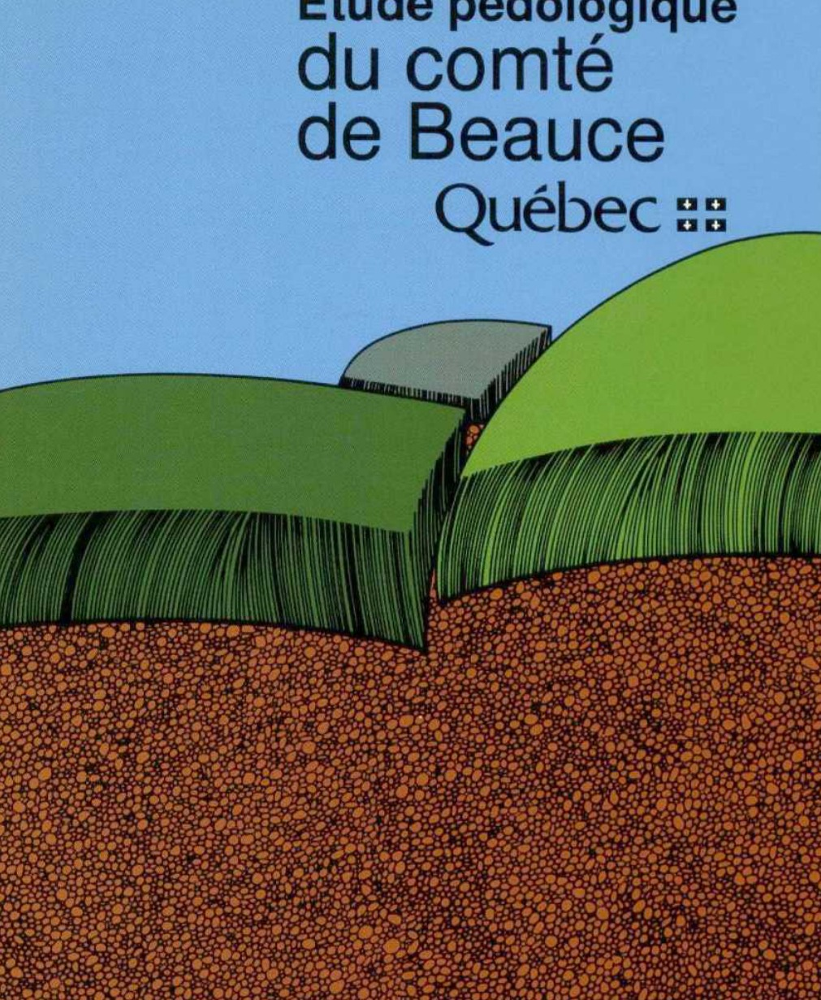
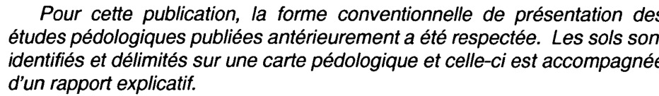
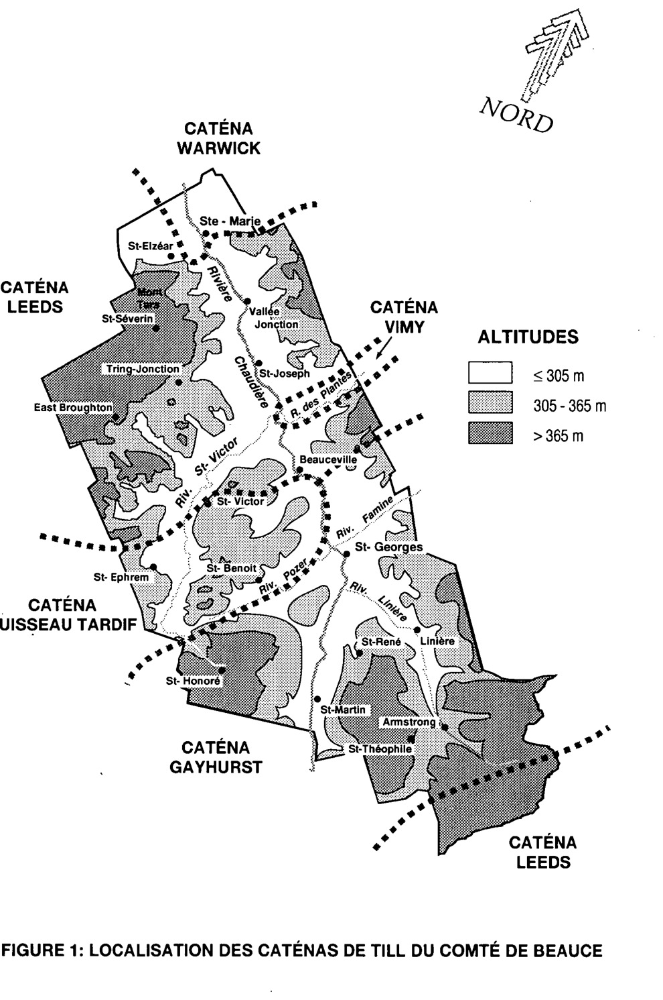

Étude pédologiquedu comtéde BeauceQuébec

SERVICE DES SOLS
Direction de la recherche et du développement
Ministère de l'Agriculture, des Pêcheries et de l'Alimentation du Québec
Dépôt légal - 2ième trimestre 1995
Bibliothèque nationale du Québec
ISBN 2-550-24223-8
IMPRIMÉ AU QUÉBEC
Les frais de publication du rapport et des cartes pédologiques
du comté de Beauce ont été assumés par
l'Entente auxiliaire Canada-Québec
pour un environnement durable en agriculture.
Préface

L'étude pédologique du comté de Beauce est une contribution du Service des sols du ministère de l'Agriculture, des Pêcheries et de l'Alimentation du Québec et elle s'inscrit dans la poursuite des études pédologiques entreprises au Québec il y a plus de 50 ans; elle est la continuité de celle du comté d'Arthabaska (1984) et de Mégantic (1989).
Pour cette publication, la forme conventionnelle de présentation des études pédologiques publiées antérieurement a été respectée. Les sols sont identifiés et délimités sur une carte pédologique et celle-ci est accompagnée d'un rapport explicatif.
Obligatoirement l'étude est de style technique, mais elle a été rédigée avec un grand souci de vulgarisation, de manière à en faciliter la compréhension.
Marton Tabi, Ph.D., directeur
Service des sols, MAPA
PREMIÈRE PARTIE
1. SITUATION ET ÉTENDUE ................................................................................................................................... 13
2. COMMUNICATIONS ............................................................................................................................................... 13
3. CLIMAT .................................................................................................................................................................... 13
4. AGRICULTURE ........................................................................................................................................................ 14
5. VÉGÉTATION .......................................................................................................................................................... 14
6. GRANDS TRAITS DU MILIEU NATUREL .......................................................................................................... 15
7. FORMATIONS GÉOLOGIQUES, DÉPÔTS DE SURFACE ET CATÉNAS DE SOL ........................................... 15
8. AUTRES DÉPÔTS .................................................................................................................................................... 18
DEUXIÈME PARTIE
• LES SOLS DU COMTÉ DE BEAUCE .................................................................................................................... 19
1. SOLS ISSUS DE DÉPÔTS MARINS, FLUVIATILES, DELTAÏQUES, ÉOLIENS ET DE CERTAINS ÉPANDAGES FLUVIO-GLACIAIRES
Les sables graveleux profonds ........................................................................................................................... 20
a) Drainage excessif à modérément bon
Série BEAURIVAGE (Brv). ...................................................................................................................................... 21
b) Drainage mauvais à très mauvais
Série FOURCHETTE (Fc). ....................................................................................................................................... 22
2. SOLS ISSUS DE DÉPÔTS FLUVIO-GLACIAIRES, PRO ET JUXTA-GLACIAIRES
2.1 Les sables graveleux, caillouteux et pierreux ............................................................................................ 23
a) Drainage excessif à bon
Série PALMER (Pr). .................................................................................................................................................... 24
b) Drainage mauvais
Série SUNDAY (Sn). .................................................................................................................................................... 25
2.2 Les sables graveleux ........................................................................................................................................ 26
a) Drainage excessif à bon
Série DANBY (D) ........................................................................................................................................................ 26
b) Drainage mauvais à très mauvais
Série INVERNESS (Is) ............................................................................................................................................... 27
2.3 Les sables ............................................................................................................................................................ 28
a) Drainage excessif à bon
Série COLTON (C). ...................................................................................................................................................... 28
b) Drainage imparfait à mauvais
Série BAPTISTE (Bp) ................................................................................................................................................ 29
3. SOLS ISSUS DE DÉPÔTS GLACIO-LACUSTRES OU ALLUVIONNAIRES
3.1 Sols issus de dépôts glacio-lacustres ............................................................................................................ 31
a) Drainage modérément bon
Série SHELDON (Sd) ............................................................................................................................................... 31
b) Drainage imparfait à mauvais
Série SUFFIELD (Su) ................................................................................................................................................................................... 32
3.2 Sols issus de dépôts alluvionnaires ........................................................................................................................................................... 33
3.21 Les loams profonds .................................................................................................................................................................................... 33
a) Drainage modérément bon à imparfait
Série OSGOODE(Og) .................................................................................................................................................................................... 33
b) Drainage mauvais à très mauvais
Série BULLARD (Bu) .................................................................................................................................................................................... 34
3.22 Les loams minces ....................................................................................................................................................................................... 35
a) Drainage modérément bon à imparfait
Série PERRY (Py) ............................................................................................................................................................................................ 35
b) Drainage mauvais à très mauvais
Série THETFORD (Td) .................................................................................................................................................................................... 36
4. SOLS ISSUS DE DÉPÔTS DE TILLS DÉRIVÉS EN DOMINANCE
DES FORMATIONS DE SAINT-ROCH, SAINTE-HÉNÉDINE ET WEST SUTTON
. 37
a) Drainage bon
Série WARWICK (Wa) .................................................................................................................................................................................... 38
b) Drainage bon à modérément bon
Série ARTHABASKA (Aa) ................................................................................................................................................................................. 39
c) Drainage modérément bon à imparfait
Série BOIS-FRANCS (BF) ............................................................................................................................................................................... 40
d) Drainage mauvais
Série NORBERTVILLE (Nbe) ............................................................................................................................................................................. 41
5. SOLS ISSUS DE DÉPÔTS DE TILLS DÉRIVÉS PRINCIPALEMENT
DES GROUPES DE ROSAIRE, CALDWELL, OAK HILL ET DE LA FORMATION
DE FRONTENAC
. 42
a) Drainage bon à modérément bon
Série LEEDS (Le) ............................................................................................................................................................................................... 43
b) Drainage bon à modérément bon
Série BLANDFORD (Bl) ..................................................................................................................................................................................... 44
c) Drainage modérément bon à imparfait
Série WOODBRIDGE (Wo) ................................................................................................................................................................................ 45
d) Drainage imparfait à mauvais
Série SAINTE-MARIE (Mai) ............................................................................................................................................................................... 46
e) Drainage mauvais à très mauvais
Série BROMPTON (Br) ..................................................................................................................................................................................... 47
6. SOLS ISSUS DE DÉPÔTS DE TILLS DÉRIVÉS DE LA FORMATION DE
SAINT-DANIEL
. 48
a) Drainage bon à modérément bon
Série VIMY (Vm) ................................................................................................................................................................................................. 49
b) Drainage modérément bon à imparfait
Série ORFORD (Or) ............................................................................................................................................................................................ 50
c) Drainage imparfait à mauvais
Série COLERAINE (Cl) ...................................................................................................................................................................................... 51
d) Drainage mauvais à très mauvais
Série PROVENÇAL (Po) .................................................................................................................................................................................... 52
7. SOLS ISSUS DE DÉPÔTS DE TILLS DÉRIVÉS DU GROUPE DE MAGOG
. 53
a) Drainage bon à modérément bon
Série RUISSEAU TARDIF (Tf) .......................................................................................................................................................................... 54
b) Drainage bon à modérément bon
Série SHERBROOKE (Sh) ................................................................................................................................................................................... 55
c) Drainage modérément bon à imparfait
Série ÉPHREM (Em) ................................................................................................................................................................................................... 56
d) Drainage imparfait à mauvais
Série MAGOG (Mg) ................................................................................................................................................................................................... 57
e) Drainage mauvais à très mauvais
Série DUPUIS (Dp) ................................................................................................................................................................................................... 58
8. SOLS ISSUS DE DÉPÔTS DE TILLS DÉRIVÉS DU GROUPE DE SAINT-FRANÇOIS
........................................................................................................................................................................................................................................................ 59
a) Drainage bon à modérément bon
Série GAYHURST (Gh) ................................................................................................................................................................................................... 60
b) Drainage bon à modérément bon
Série GREENSBORO (Gr) ................................................................................................................................................................................................... 61
c) Drainage modérément bon à imparfait
Série SHENLEY (HI) ................................................................................................................................................................................................... 62
d) Drainage imparfait à mauvais
Série CALAIS (Ca) ................................................................................................................................................................................................... 63
e) Drainage mauvais à très mauvais
Série DUFFERIN (Df) ................................................................................................................................................................................................... 64
9. DIVERS
........................................................................................................................................................................................................................................................ 65
9.1 LES TERRAINS
........................................................................................................................................................................................................................................................ 65
9.11 Terrains CHESTER ................................................................................................................................................................................................... 65
9.12 Terrains MARAS ................................................................................................................................................................................................... 65
9.2 LES ALLUVIONS
........................................................................................................................................................................................................................................................ 65
10. LES ACCUMULATIONS ORGANIQUES
........................................................................................................................................................................................................................................................ 66
10.1 Les terres noires
........................................................................................................................................................................................................................................................ 66
10.2 Les tourbes
........................................................................................................................................................................................................................................................ 66
TROISIÈME PARTIE
• VALEUR AGRICOLE, RÉGIE ET FERTILITÉ DES SOLS DE LA BEAUCE
I. SOLS SABLEUX, SABLEUX-GRAVELEUX OU CAILLOUTEUX ET PIERREUX ISSUS DE DÉPÔTS- FLUVIATILES, DELTAÏQUES OU FLUVIO-GLACIAIRES
........................................................................................................................................................................................................................................................ 68
a - Sols de drainage bon à excessif
- Faible capacité de rétention en eau
- Amendements calcaires et fertilisants
- Pratiques culturales à surveiller
b - Sols à drainage mauvais ou très mauvais
- Amendements calcaires et fertilisants
- Pratiques culturales à surveiller
II. SOLS ISSUS DE DÉPÔTS GLACIO-LACUSTRES OU ALLUVIONNAIRES
........................................................................................................................................................................................................................................................ 73
III. SOLS ISSUS DE DÉPÔTS DE TILLS
........................................................................................................................................................................................................................................................ 74
- Pratiques générales à recommander pour les sols de tills
........................................................................................................................................................................................................................................................ 76
ANNEXE I
CLASSIFICATION DES SOLS DU COMTÉ DE BEAUCE
ANNEXE II
LES CARTES PÉDOLOGIQUES DU COMTÉ DE BEAUCE
ANNEXE III
UNITÉS ET SYMBOLES CARTOGRAPHIQUES,
SUPERFICIES ET POURCENTAGES
ANNEXE IV
A - MÉTHODES ANALYTIQUES
B - EXPLICATION DES FICHES ANALYTIQUES
LISTE
DES TABLEAUX
-
Propriétés physiques et chimiques des sols sableux de valeur intrinsèque
pauvre de drainage bon à excessif -
Propriétés physiques et chimiques des sols sableux de drainage mauvais
à très mauvais de valeur intrinsèque médiocre -
Propriétés physiques et chimiques de loams sableux fins, limoneux ou argileux
de valeur intrinsèque bonne à très bonne -
Propriétés physiques et chimiques des sols issus de tills de valeur intrinsèque
médiocre à drainage bon (groupe I) -
Propriétés physiques et chimiques des sols issus de tills de valeur intrinsèque
moyenne et de drainage modérément bon à imparfait (groupe II) -
Propriétés physiques et chimiques des sols issus de tills de valeur intrinsèque
moyenne à bonne et de drainage mauvais (groupe III) -
Propriétés physiques et chimiques des sols issus de tills de valeur intrinsèque
bonne et de drainage mauvais (groupe IV) -
Propriétés physiques et chimiques des sols issus de tills de la caténa Vimy de
valeur intrinsèque bonne (groupe V) - Classification des séries de sols du comté de Beauce
- Signification des cartes pédologiques
-
Les sols de la Beauce, superficies (ha) et pourcentages des séries
cartographiques - Superficies totales, et valeur agricole des groupes de tills
-
Superficies totales et superficies défrichées des différents dépôts et
leurs pourcentages
RÉFÉRENCES
BIBLIOGRAPHIQUES
Réalisation et collaboration
L'étude pédologique du comté de Beauce
a été réalisée par le personnel du Service des sols
du ministère de l'Agriculture, des Pêcheries et de l'Alimentation du Québec
Direction
Tabi, Marton, Ph. D. agronome, directeur du Service des sols.
Cartographie, classification et rédaction
- Ouellet, Luc, M. ès Arts, géographe-pédologue
- Rompré, Michel, M. Sc. agronome-pédologue
- Carrier, Dominique, Ph. D. agronome-pédologue
- Laflamme, Gérard, M. Sc. agronome-pédologue
Collaboration
Relevés de terrain:
- Gagnon, Martin, technicien
- Camiré, Réal, technicien
Équipe de laboratoire des sols:
- Audesse, Pierre, technicien principal
- Fortin, Gérard, technicien
- Paradis, Michel, technicien
- Gagnon, Martin, technicien
- Thivierge, Louise, technicienne
Équipe de laboratoire d'arts graphiques:
- Gilbert, Ghislain, technicien principal
- Côté, Claude, technicien
- Lemay, Yves, technicien
- Camiré, Réal, technicien
Traitement de texte:
- Saint-Pierre, Nicole, agente de secrétariat
- Arseneault, Élaine, agente de secrétariat
Conception graphique et mise en page:
Lemay, Yves, technicien
Introduction
L'étude pédologique du territoire de la Beauce* fait partie du projet de classification et de cartographie du centre-sud du Québec incluant les comtés d'Arthabaska, de Mégantic, de Beauce, de Frontenac et de Wolfe. Venant à la suite et en continuité de Mégantic (1989), elle a comme objectif une meilleure connaissance du sol et de ses possibilités agricoles.
Situé sur le plateau appalachien et inclus dans le bassin hydrographique de la rivière Chaudière, le comté de Beauce totalise une superficie de 304 343 ha. Il fait partie de la région agricole Beauce-Appalaches (03) et possède une agriculture basée principalement sur l'industrie laitière.
L'étude comprend un relevé cartographique au 1:50 000 des sols avec un rapport explicatif présentant en première partie un aperçu du milieu naturel puis en deuxième partie une description détaillée des sols du comté selon le système canadien de classification des sols². Assez élaborée, la troisième partie évalue la valeur intrinsèque et l'aptitude aux cultures des sols précédemment décrits en plus de faire plusieurs recommandations pratiques concernant leur fertilité, leur gestion et leur conservation.
Le relevé cartographique avec sa légende explicative se compose de deux feuillets au 1:50 000 où apparaissent les différentes unités de sols identifiées par le nom des séries. Au total 37 séries de sols ont été décrites, sans compter les sols organiques (tourbes et terres noires), les alluvions et les types de terrain, également cartographiés mais non classifiés sur la même base.
* Les limites provinciales de comté sont celles de 1972
PREMIÈRE PARTIE
1. SITUATION ET ÉTENDUE
Compris dans une section du plateau appalachien au sud de la ville de Québec, le comté de Beauce se situe entre 45° 49' et 46° 31' de latitude nord et, 70° 14' et 71° 14' de longitude ouest. Le comté de Dorchester le borne à l'est et au nord, les comtés de Lotbinière, Mégantic et Frontenac le limitent à l'ouest, tandis qu'au sud, il est borné par la frontière des États-Unis et le comté de Frontenac. D'une superficie de 304 343 ha, il couvre, en tout ou en partie, les feuillets topographiques suivants: 21L1, 21L2, 21L3, 21L6, 21L7, 21L11, 21E15 et 21E16.
2. COMMUNICATIONS
Les communications se sont construites selon deux axes principaux. En premier lieu, la route 173 de direction N.W.-S.E., qui longe la Vallée de la Chaudière jusqu'à St-Georges, assure la liaison entre la région de Québec et les États-Unis. En second lieu, la Beauce est bien pourvue de voies de communication N.E.-S.W. qui la rattachent aux comtés de Mégantic, de Frontenac et aux Cantons de l'Est en général; qu'il suffise de mentionner les routes Vallée-Jonction - Thetford-Mines (route 172), Beauceville - La Guadeloupe (route 108), et St-Georges - Lac Mégantic (route 204). Les échanges avec le secteur à l'ouest de la Beauce, possédant plusieurs petits centres urbains d'importance régionale, apparaissent plus importants que ceux qui se font avec l'est immédiat (Dorchester et Bellechasse) à caractère davantage rural.
Une liaison ferroviaire venant de Québec tourne à Vallée-Jonction vers Tring-Jonction et de là bifurque vers Thetford-Mines pour l'une et vers Lac Mégantic (Frontenac) via St-Victor et St-Éphrem pour l'autre. Une autre voie ferrée dessert la Vallée de la Chaudière jusqu'à St-Georges où elle emprunte la Vallée de la rivière Famine pour se diriger vers Dorchester.
3. CLIMAT
Le climat constitue un facteur déterminant dans le processus général de formation et d'évolution des sols; plus spécifiquement, il conditionne la croissance et la distribution naturelle des espèces végétales, et, sur le plan agricole, il joue un rôle analogue en contribuant à déterminer un éventail de cultures réalisables à l'échelle régionale ou locale.
Comme pour l'ensemble du Québec méridional, la Beauce possède un climat de type continental tempéré à hivers froids et étés chauds19. Les mois de juin, juillet et août accusent une température moyenne variant de 15,5°C à 17,7°C dans la Vallée de la Chaudière alors qu'en hiver les mois de décembre, janvier et février donnent une température moyenne de -11,5°C; sur le plateau, à St-Éphrem, les températures sont de 2°C inférieures en moyenne.
La longueur de la période sans gel (probabilité de 50 %) varie, dans la plus grande partie de la Beauce de 108 à 123 jours; cependant, une section de plateau en bordure du comté de Dorchester et de la frontière des États-Unis au sud-est est moins favorisée, avec une période sans gel variant de 93 à 108 jours seulement. Les unités thermiques-maïs varient entre 1900 et 2300 UTM³. Les terrains situés au sud d'une ligne imaginaire passant par St-Georges et St-Honoré totalisent pour leur part moins
de 1900 UTM en moyenne. Si l'on exprime le climat pour l'agriculture en termes de degrés-jours (température moyenne au-dessus de 5°C), c'est la Vallée de la Chaudière qui apparaît la plus avantagée avec 1 567 à 1 753 degrés-jours alors que les étendues de plateaux environnantes se situent entre 1 381 à 1 567 degrés-jours; cette valeur exprime la longueur moyenne de la saison de croissance au-dessus de 5°C ou la somme de jours consécutifs à partir du début jusqu'à la fin de la saison de croissance.
Pour ce qui est de la région climatique déterminée en fonction de l'agriculture, le comté de Beauce se situe en grande partie dans la zone 5L; cette zone, définie en tenant compte des précipitations et de l'évaporation potentielle, révèle que le territoire du comté n'accuse généralement pas de déficit en eau, sur les sols de loam sableux ou à texture plus fine sur au moins 1 mètre de profondeur.
4. AGRICULTURE
Occupant moins de la moitié du territoire, le domaine agricole est constitué en 19867 de 1800 fermes totalisant 140 000 hectares dont 46 000 hectares (33 %) sont en culture; 14 000 hectares (10 %) en pâturage et 56 000 hectares, (40 %) en terre à bois. Les cultures fourragères et les pâturages occupent 55 000 hectares, ce qui représente 87% de la superficie améliorée totale. Il s'agit donc d'une agriculture à base d'herbage et d'élevage (bovins laitiers et de boucherie). Le nombre de fermes laitières a diminué de plus de 30 % de 1976 (1296 fermes) à 1986 (818 fermes) et le nombre de fermes porcines de 43 % (471 à 269 fermes) pendant la même période. Cet élevage (160 000 têtes) se concentre principalement dans quelques municipalités, notamment Saint-Elzéar, Sainte-Marie et Saints-Anges. L'élevage des bovins de boucherie est quant à lui resté marginal et souvent associé au travail à temps partiel. Dans l'ensemble, l'évolution de l'agriculture du comté a suivi une courbe comparable à celle du Québec: diminution du nombre d'exploitations avec augmentation des superficies moyennes en culture et intensification des productions végétales et animales.
5. VÉGÉTATION
Sur le plan de la biogéographie, la Beauce fait partie de la région Grands-Lacs-Saint-Laurent5. Régionalement, les peuplements de cette forêt mixte se rattachent aux associations de l'érablière laurentienne et de l'érablière à bouleau jaune. L'érablière laurentienne se retrouve en dominance dans la Vallée de la Chaudière, jusqu'à la hauteur de Beauceville et même un peu au-delà, en plus de déborder sur les premières collines du plateau. L'association de l'érablière à bouleau jaune (érable à sucre, bouleau jaune (merisier), hêtre, érable de Pennsylvanie, bois d'orignal, coudrier) occupe le reste de la Beauce, soit les parties sud et sud-ouest du comté principalement. Sur les terrains bien drainés déjà exploités à des fins forestières ou agricoles se sont développées diverses forêts de transition comprenant par exemple l'épinette blanche, le peuplier faux-tremble, le bouleau blanc ou d'autres peuplements composés de l'épinette-sapin, du bouleau blanc et du tremble.
Dans les sites moins bien drainés, certaines associations de transition pivotant autour de l'érablière rouge (érable rouge, tremble, bouleau blanc ou jaune, sapin baumier) de la bétulaie ou de la tremblaie à érable rouge, prennent plus d'importance. Dans les sites mal drainés et les dépressions poussent souvent l'épinette noire, le mélèze et le thuya de l'Est. Les peuplements de pins colonisent davantage les sites plus secs, tels que les berges des rivières et les autres terrains à topographie plutôt convexes, fréquemment constitués de dépôts fluvio-glaciaires, fluviatiles ou deltaïques.
6. GRANDS TRAITS DU MILIEU NATUREL
Presqu'entièrement compris dans le plateau appalachien, le comté de Beauce présente trois paysages principaux: un paysage de vallée, un paysage de plateau ondulé à incliné et un paysage de collines alignées ou disposées en massifs.
À moins de 300 m d'altitude, la première unité est représentée par la plaine alluviale et les versants de la Chaudière; la plaine alluviale de la Chaudière ne commence vraiment et encore, de façon plutôt étroite, un peu en aval de Saint-Georges. C'est surtout à partir de Beauceville et jusqu'à Vallée Jonction qu'elle prend réellement toute son ampleur, atteignant alors une largeur moyenne d'environ 1 km. Entre Scott et Sainte-Marie, les versants de la vallée aux pentes faibles (moins de 5%) ne dépassent guère 45 m de hauteur, alors qu'à Saint-Joseph, ils atteignent et dépassent 150 m avec des pentes d'environ 10%.
À Jersey Mills (sud de Saint-Georges), la Chaudière perd sa direction N.W.-S.E. pour s'infléchir en direction du sud jusqu'au sortir du comté entre des versants plus doux accusant moins de 5% de pente. À l'exception de la rivière Linière qui coule vers le nord-ouest, les autres affluents (rivières Famine, Des Plantes, Pozer et la Saint-Victor) sont de direction appalachienne, c'est-à-dire qu'ils coulent parallèlement aux formations géologiques régionales. C'est dans cette unité de paysage que se retrouve la plus grande partie des sols d'origine alluviale, fluviatile, fluvio-glaciaire et glacio-lacustre.
L'unité de paysage présentant l'aspect d'un plateau de topographie faiblement inclinée à ondulée2 se situe à des altitudes variant entre 250 et 420 m. C'est notamment le cas des étendues ondulées et largement déboisées au nord-ouest de Saint-Elzéar, au nord de Saint-René, au sud de Tring-Jonction et au sud-est de Vallée Jonction. Entre Saint-Honoré et Saint-Martin se retrouvent de vastes superficies faiblement inclinées (moins de 3%) variant entre 300 et 420 m et au modelé de glacis. L'agriculture se pratiquant en Beauce sur le plateau appalachien se retrouve essentiellement dans cette section.
La dernière unité de paysage comprend les ensembles de collines alignées ou disposées en massif. Citons les alignements de collines situés au nord de East-Broughton, à plus de 500 m, celui passant entre Saint-Benoît et le lac Fortin et celui du Grand Morne au nord de Saint-Éphrem. À l'extrême sud du comté, le massif de collines du lac Portage dépasse généralement 600 m en altitude. Ces collines boisées aux pentes dépassant 10% en moyenne et parfois accidentées sont recouvertes de tills minces éperonnés par de nombreux affleurements.
7. FORMATIONS GÉOLOGIQUES, DÉPÔTS DE SURFACE ET CATÉNAS DE SOL
En superficie, les tills constituent 80 % de tous les dépôts de surface présents dans le comté de Beauce. La région a subi trois avancées glaciaires dont la plus récente date de plus de 12 000 ans40. Il en est résulté sur la Beauce un vaste manteau de tills d'épaisseur variable (de quelques centimètres à plusieurs mètres) et de topographie horizontale à montueuse, conditionnée principalement par celle du socle rocheux sous-jacent. Ce matériau (till) hétérogène est constitué de particules primaires dont la classe granulométrique varie du sable loameux au loam limoneux et de fragments grossiers de la taille des graviers (2,0 mm - 7,5 cm de diamètre), des cailloux (7,5 cm - 25,5 cm) et des pierres (25,5 cm et plus). De plus, il est tassé, compact dans sa partie non altérée et se débite, en lamelles généralement de moins de 1 centimètre d'épaisseur,

subparallèlement à la surface de déposition dans des conditions d'humidité faible. L'état de drainage varie sur une même pente et devient généralement moins bon vers le bas, à cause de l'accumulation plus grande des eaux d'infiltration qui ne peuvent traverser cette zone compacte ou le roc en place.
Ces conditions de drainage particulières conditionnent le développement des sols, modifient de façon importante leurs propriétés et affectent dans certaines limites leurs possibilités agricoles et forestières. Pour rendre compte de cette réalité, des caténas de sol ont été définies. Bien que les sols issus de tills différents présentent dans des conditions de drainage similaires une morphologie assez semblable (expression génétique, ordre...), cinq ensembles ou caténas de sol ont été définis, principalement sur l'incorporation d'éléments lithologiques particuliers conférant au till des propriétés physico-chimiques différentes.
Le premier ensemble incorpore dans sa matrice des éléments appartenant principalement aux formations du groupe de Rosaire (quartzites et siltstones interstratifiés avec du schiste ardoisier) de Caldwell (grès feldspathique, ardoises, roches volcaniques basiques) et à celle de Frontenac (grès et schistes ardoisiers)58. Les sols développés à partir de ce matériau possèdent une texture de loam sableux à loam, de couleur gris olive à gris foncé et à réaction fortement à modérément acide. La caténa de sols Leeds, qui est associée aux tills de cet ensemble se compose des séries Leeds, Blandford, Woodbridge, Sainte-Marie et Brompton en passant du bon au mauvais drainage.
Un deuxième ensemble de tills, situé principalement au nord du comté incorpore dans sa matrice des éléments du groupe de Saint-Roch (grès feldspathiques, shale rouge et vert) et des formations de Sainte-Hénédine (grès impurs, schistes ardoisiers rouges) et de West Sutton (phyllage rouge, phyllage à hématite gris)58. Les sols développés à partir de ce matériau apparenté à un till d'ablation possèdent un substratum de couleur gris brun à brun gris, à texture variant du sable loameux au loam sableux et de réaction peu à modérément acide. Décrite pour la première fois dans le comté d'Arthabaska55, la caténa Warwick occupe cet ensemble de tills; elle est constituée des séries Warwick, Arthabaska, Bois-Francs et Norbertville.
Un troisième ensemble de tills enclavé dans le premier et peu important en superficie, incorpore dans sa matrice des éléments du mélange ophiolitique de la formation de St-Daniel, particulièrement à l'intérieur du faciès à écaille de serpentine et Gabbro58. Le matériel parental relié à cet ensemble possède une couleur gris foncé à olive, une texture de loam et une réaction variant de neutre à peu alcaline. Décrite dans l'étude pédologique du comté de Mégantic39, la caténa Vimy qui comprend les séries Vimy, Orford, Coleraine et Provençal est reliée à cet ensemble.
Le quatrième ensemble de tills incorpore dans sa matrice certains éléments appartenant au groupe géologique de Magog et plus spécifiquement à la formation de St-Victor (schistes ardoisiers avec interlits de grès, de tufs et de conglomérats)58. Cartographié à l'ouest de la Chaudière, il se situe entre l'ensemble de la caténa Leeds et celui du Gayhurst défini ci-après, dans la section de territoire comprise entre les villages de St-Victor et St-Benoît. Cet ensemble possède généralement un matériel parental de couleur gris olive à brun gris foncé, une texture variant du loam au loam sableux et une réaction modérément acide à neutre. La caténa du Ruisseau Tardif occupe cet ensemble de tills; elle comprend les séries Ruisseau Tardif, Sherbrooke, Éphrem, Magog et Dupuis.
Au sud-est de la formation de Saint-Victor se situe un autre ensemble de tills incorporant encore à sa périphérie quelques éléments appartenant au Saint-Victor, mais principalement des matériaux de la formation géologique de Compton qui fait partie du groupe de Saint-François. Dans la région étudiée, la formation de Compton comprend une alternance d'ardoise et de grès fin, calcaire par endroits58. Le matériel parental relié à cet ensemble est de couleur gris olive à olive avec une texture de loam à loam limoneux et une réaction modérément acide à modérément alcaline. Les sols développés à partir de ce matériau comprennent les séries Gayhurst, Greensboro, Shenley, Calais et Dufferin.
8. AUTRES DÉPÔTS
Les autres matériaux meubles du comté de Beauce incluent les dépôts fluvio-glaciaires, fluviatiles, alluvionnaires et lacustres.
Les dépôts d'origine fluvio-glaciaires, fluviatiles et deltaïques, à texture de sable à sable grossier graveleux et à réaction modérément à fortement acide comprennent les séries Beaurivage, Fourchette, Danby, Inverness, Palmer, Sunday, Colton et Baptiste; ces sols se situent avant tout en bordure des dépôts alluvionnaires, sur les versants des principales rivières (ex: env. de Sainte-Marie, Vallée Jonction, Saint-Victor et Saint-Martin) ou sur le plateau entre 300 m et 370 m d'altitude pour la plupart d'entre eux. Au sud de Saint-Honoré toutefois, les dépôts deltaïques et fluvio-glaciaires dépassent 400 m.
Les dépôts alluvionnaires, à texture de loam à loam limoneux et de réaction peu acide à fortement acide constituent la roche-mère des séries Bullard et Osgoode dont la plus grande partie se situe dans la plaine alluviale de La Chaudière, en aval de Beauceville et jusqu'à l'extrémité nord du comté.
DEUXIÈME PARTIE
Les sols du comté de Beauce sont décrits, classés et cartographiés à partir des propriétés et traits distinctifs observés au moment du levé pédologique effectué dans le secteur à l'étude. La phase initiale de la recherche comprend la cueillette, l'analyse et l'interprétation des documents pertinents disponibles : cartes topographiques et géologiques, rapports divers, thèses, etc. L'opération pédologique proprement dite implique quant à elle l'interprétation de la photographie aérienne, accompagnée de la prospection systématique et détaillée de tout le territoire. Cette prospection, à son stade préliminaire comporte l'observation, après rafraîchissement, des coupes existantes: rebords de routes, de fossés, de cours d'eau, visite des gravières et affleurements, etc.; à l'étape suivante de cartographie systématique, il est souvent nécessaire d'effectuer des tranchées pour étudier les profils sur les transects choisis.
Tracée d'abord sur la photo aérienne, la carte pédologique se bâtit au fur et à mesure de ces observations, et quand tout le territoire a été prospecté arrive l'étape d'échantillonnage des sols représentatifs. Ces derniers se différencient principalement d'après la nature de la roche-mère et leur état de drainage.
La roche-mère ou matériau originel joue en effet un rôle déterminant sur l'évolution du sol, puisque c'est à partir de ce matériau qu'il s'est formé, à la suite d'altérations physiques et chimiques. En pédologie, le concept de roche-mère englobe les matériaux meubles à partir desquels les sols se font formés. Outre la nature de la roche-mère, l'état naturel du drainage constitue un facteur essentiel de différenciation des sols. Ainsi, pour une même roche-mère, la position de chaque sol dans sa chaîne de drainage ou caténa fait partie intégrante de sa définition. Par suite, les membres caténaires ainsi définis sont représentés dans leur unité cartographique par des symboles où apparaissent par ordre d'importance les sols dominants. Il est important de mentionner que l'unité cartographique correspond rarement à la caténa car les membres caténaires ne sont pas nécessairement tous représentés et de plus, certaines aires peuvent être représentées par des sols appartenant à des roches-mères différentes ou à des types de terrain. Quant aux sols organiques, ils sont classés selon leur degré de décomposition.
Dans l'étude pédologique du comté de Beauce, les sols sont définis au niveau de la série, fondée sur les propriétés physico-chimiques reflétées par la morphologie et appuyées par les analyses de laboratoire. Chaque description de sol comporte une approche générale faisant état de sa nature, de son drainage, de sa situation et de sa position topographique. Cette introduction est suivie d'une description morphologique générale de la couche de surface du sol (cultivée ou sous couvert forestier), basée sur les données recueillies lors des travaux d'inventaire et d'échantillonnage qui révèle ses caractères distinctifs et ses particularités. Viennent ensuite la description d'un profil représentatif et le tableau des analyses granulométriques et chimiques qui s'y rapporte. Le manuel de description des sols sur le terrain20, le système canadien de classification des sols2 et le manuel de méthodes d'échantillonnage et d'analyses des sols1 ont servi de référence à la méthodologie et à la terminologie utilisées dans cette étude.
1. SOLS ISSUS DE DÉPÔTS MARINS, FLUVIATILES, DELTAÏQUES, ÉOLIENS ET DE CERTAINS ÉPANDAGES FLUVIO-GLACIAIRES
Les sables graveleux profonds
Les propriétés physiques des sols issus de ces dépôts ne varient pas tellement en fonction du mode de dépôt ou de son origine mais bien davantage en fonction de la granulométrie du dépôt, de sa profondeur et de son état de drainage. C'est en tenant compte de ces éléments de différenciation que les séries Beaurivage et Fourchette ont été décrites.
Les dépôts sableux graveleux dont sont issus les sols Beaurivage et Fourchette sont généralement bien stratifiés, poreux, exempts de pierres, mais peuvent contenir des graviers et quelques cailloux. Dans la caténa, les sols de la série Beaurivage occupent les sites bien à modérément bien drainés tandis que ceux de la série Fourchette, qui sont mal drainés, se situent dans les terrains plats à déprimés et sont parfois associés à d'anciens chenaux glaciaires.
a) Série BEAURIVAGE (556 ha défrichés à 66%)
Les sols de la série Beaurivage se sont développés sur des dépôts meubles à texture de sable graveleux à très graveleux. Dans le comté, ces matériaux prennent la forme de plaine d'épandage ou d'accumulations deltaïques à pentes variant habituellement de 0,5% à 6%. Les principales étendues de sols Beaurivage se retrouvent aux environs de Sainte-Marie, Saint-Elzéar, East-Broughton et Tring-Jonction. Les sols sont profonds, non pierreux et très perméables et possèdent un drainage excessif à modérément bon.
Généralement, les sols cultivés de la série Beaurivage possèdent une couche de surface (Ap) de 12 cm, de texture loam sableux grossier, brun foncé à brun gris foncé, et de structure granulaire, fine à moyenne, faiblement développée. Le contenu en matières organiques est élevé à très élevé et la réaction est modérément à très fortement acide.
Description d'un profil de la série BEAURIVAGE en terrain cultivé.
| Horizon | Profondeur (cm) |
Description |
|---|---|---|
| Ap* | 0-9 | Loam sableux grossier brun gris foncé (10 YR 2,5/1 h), gris très foncé (10 YR 3/1 s); granulaire, fine, faible; très friable; racines très abondantes, moyennes, fines, très fines, microracines, non orientées; limite abrupte, ondulateur; épaisseur de 5 à 15 cm; très fortement acide. |
| Ae | 9-13 | Loam gris à gris rouge (5 YR 5/1,5 h), gris clair (5 YR 7/1 s); granulaire, fine, très faible; très friable; racines abondantes, fines, très fines, microracines; verticales, obliques; limite abrupte, interrompue; épaisseur de 0 à 8 cm; très fortement acide. |
| Bf | 13-27 | Loam sableux brun à brun foncé (7 YR 4/4 h), brun jaune (10 YR 5/5 s); granulaire, fine, très faible; très friable; racines abondantes, de toutes les grosses, verticales, obliques; fragments grossiers graveleux, à graviers anguleux, 20% en volume; limite nette, onduleuse; épaisseur de 5 à 14 cm; très fortement acide. |
| Bm | 27-37 | Sable grossier graveleux brun jaune foncé (10 YR 4/4 h), brun jaune clair (2,5 Y 6/4 s); granulaire, fine, très faible; très friable; racines abondantes de toutes les grosseurs, obliques; fragments grossiers graveleux, à graviers anguleux, 20% en volume; limite nette, onduleuse; épaisseur de 7 à 14 cm; fortement acide. |
| C1 | 37-50 | Sable grossier graveleux brun jaune (10 YR 5/4 h), brun gris à brun olive clair (2,5 Y 5/3 s); particulaire; meuble; racines peu abondantes, fines, très fines, microracines, verticales, obliques; fragments grossiers graveleux, à graviers anguleux, 40% en volume; limite diffuse, régulière; épaisseur de 10 à 17 cm; modérément acide. |
| C2 | 50+ | Sable grossier graveleux brun gris foncé à brun olive (2,5 Y 4/3 h), brun gris à brun olive clair (2,5 Y 3 s); particulaire; meuble; racines très peu abondantes, fines, très fines, microracines, verticales, obliques; fragments grossiers, graveleux, à graviers anguleux, 40% en volume; modérément acide. |
* L'ordre suivant a été respecté pour la description des propriétés: texture, couleur, marbrures, structure, consistance, racines, pores, enrobements argileux, concrétions, carbonates, sels, pierres, limite d'horizon, variations d'épaisseur et réaction. Pour renseignements additionnels, voir la référence (2)
Les sols Beaurivage incluent des profils pouvant avoir au niveau du sous-sol, un horizon enrichi en sesquioxydes de moins de 10 cm (Bf), en matières organiques (Bhf), cimenté (Bfc), légèrement gleyifié (Bfgj). En raison de l'échelle de la carte, ces profils sont inclus dans la série cartographique même s'ils appartiennent à des groupes taxonomiques distincts.
Fiche analytique d'un profil de la série BEAURIVAGE en terrain cultivé
| Horizon | Profondeur cm. |
Sable % |
Limon % |
Argile % |
pH | C org. |
Dithionite | Pyrophosphate | Bases échangeables | CEC | Sat. bases |
P ass. |
|||||||
|---|---|---|---|---|---|---|---|---|---|---|---|---|---|---|---|---|---|---|---|
| 2-0,05 mm |
50-2µ | <2µ | Fe % |
Al % |
Fe % |
Al % |
Ca me/100g |
Mg me/100g |
K me/100g |
||||||||||
| H2O | CaCl2 0,01M |
me/100g | % | kg/ha | |||||||||||||||
| Ap | 0-9 | 74 | 18 | 8 | 4,95 | 4,24 | 7,25 | 1,04 | 0,36 | 0,35 | 0,33 | 1,32 | 0,30 | 0,18 | 24,90 | 9,65 | 31 | ||
| Ae | 9-13 | 51 | 40 | 9 | 4,91 | 4,02 | 1,04 | 0,38 | 0,07 | 0,11 | 0,07 | 0,54 | 0,11 | 0,01 | 9,30 | 11,41 | 4 | ||
| Bf | 13-27 | 64 | 28 | 8 | 5,07 | 4,44 | 4,06 | 1,87 | 1,28 | 0,78 | 1,12 | 0,22 | 0,04 | 0,02 | 33,77 | 6,91 | 19 | ||
| Bm | 27-37 | 93 | 3 | 4 | 5,36 | 4,91 | 0,52 | 0,58 | 0,33 | 0,08 | 0,23 | 0,00 | 0,01 | 0,00 | 7,28 | 4,52 | 58 | ||
| C1 | 37-50 | 100 | 0 | 0 | 5,64 | 5,02 | 0,28 | 0,44 | 0,18 | 0,07 | 0,13 | 0,00 | 0,01 | 0,00 | 3,25 | 4,12 | 85 | ||
| C2 | 50+ | 100 | 0 | 0 | 5,63 | 5,06 | 0,20 | 0,38 | 0,15 | 0,05 | 0,09 | 0,00 | 0,00 | 0,00 | 2,67 | 4,24 | 103 | ||
Voir Annexe IV
b) Série FOURCHETTE (154 ha défrichés à 68%)
Les sols de la série Fourchette se sont développés à partir de matériaux identiques à ceux de la série Beaurivage à laquelle ils sont étroitement associés dans la partie nord du comté. Ailleurs sur le plateau, la série Fourchette peut incorporer des fragments des formations locales alors que la série Beaurivage y est pratiquement absente. La série Fourchette se présente sous forme de topographie horizontale à légèrement inclinée (0 à 5% de pente) ou dans des dépressions généralement liées au réseau hydrographique. Les sols sont profonds, de drainage mauvais à très mauvais et très perméables. La nappe phréatique peut apparaître aux environs de 1 m.
Généralement, les sols cultivés de la série Fourchette possèdent une couche de surface (Op ou Ap) de 18 cm, loam sableux ou organique, brun gris très foncé à noire, comptant moins de 10% de fragments grossiers et une structure granulaire, fine à moyenne, faible à modérée. Le contenu en matières organiques est très élevé à extrêmement élevée et la réaction est fortement à extrêmement acide. Le sous-sol est habituellement absent.
Description d'un profil de la série FOURCHETTE en terrain cultivé*
| Horizon | Profondeur cm |
Description |
|---|---|---|
| Ap | 0-24 | Loam sableux très fin brun gris très foncé (2,5 Y 3/2 h), brun gris à gris brun clair (2,5 Y 5,5/2 s); marbrures fréquentes, fines; particulaire; friable; racines abondantes, fines, très fines et microscopiques, horizontales et obliques; limite abrupte, onduleuse; épaisseur de 18 à 25 cm; très fortement acide. |
| BCg(Bg) | 24-52 | Sable grossier loameux très graveleux brun gris très foncé (2,5 Y 3/2 h), gris brun clair (2,5 Y 6/2 s); marbrures fréquentes, fines; particulaire; meuble; racines peu abondantes, fines, très fines et microscopiques, horizontales et obliques; fragments grossiers, graveleux, environ 80% en volume; limite abrupte, onduleuse; épaisseur de 25 à 30 cm; fortement acide. |
| Cg | 52+ | Sable grossier très graveleux brun gris très foncé (2,5 Y 3/2 h), gris à gris clair (5 Y 6/1 s); marbrures fréquentes, fines; particulaire; meuble; racines très peu abondantes, très fines à microscopiques, horizontales et obliques; fragments grossiers, graveleux, environ 80% en volume; fortement acide. |
* Profil tiré de l'étude pédologique du comté de Mégantic39
Les sols Fourchette incluent aussi des profils pouvant avoir au niveau du sous-sol, lorsqu'il est présent, soit un horizon enrichi de matières organiques (Bh), soit un horizon gleyifié (Bg).
Fiche analytique d'un profil de la série FOURCHETTE en terrain cultivé
| Horizon | Profondeur cm |
Sable % |
Limon % |
Argile % |
pH | C org. |
Dithionite | Pyrophosphate | Bases échangeables | CEC | Sat. bases |
P ass. |
|||||||
|---|---|---|---|---|---|---|---|---|---|---|---|---|---|---|---|---|---|---|---|
| 2-0,05 mm |
50-2µ | <2µ | H2O | CaCl2 0,01M |
Fe % |
Al % |
Fe % |
Al % |
Ca me/100g |
Mg me/100g |
K me/100g |
me/100g | % | kg/ha | |||||
| Ap | 0-24 | 55,0 | 41,0 | 4,0 | 5,86 | 5,04 | 7,83 | 1,46 | 0,81 | 0,18 | 0,27 | 0,10 | 3,50 | 0,11 | 0,04 | 0,03 | 50,4 | - | - |
| BCg (Bg) |
24-52 | 85,0 | 12,0 | 3,0 | 6,48 | 5,34 | 7,87 | 0,40 | 0,69 | 0,11 | 0,16 | 0,06 | 2,15 | 0,08 | 0,03 | 0,01 | 35,8 | - | - |
| Cg | 52+ | 88,0 | 9,0 | 3,0 | 6,48 | 5,49 | 7,95 | 0,35 | 0,69 | 0,09 | 0,12 | 0,05 | 1,85 | 0,10 | 0,03 | 0,02 | 30,2 | - | - |
2. SOLS ISSUS DE DÉPÔTS FLUVIO-GLACIAIRES, PRO ET JUXTA-GLACIAIRES
Ces dépôts qui possèdent une stratification grossière où se retrouvent parfois de brusques variations se présentent sous forme d'épandage fluvio-glaciaire, de kame, terrasses de kames, d'esker ou de cordon littoral.
Les séries Palmer et Sunday se sont développées sur des dépôts à texture de sable grossier graveleux à très graveleux, caillouteux et pierreux. Les séries Danby et Inverness sont généralement issues de dépôts mieux stratifiés constitués de sables grossiers graveleux et parfois loameux, mais à charge beaucoup moins forte sinon inexistante en cailloux et en pierres. Quant aux séries Colton et Baptiste, elles dérivent de sables moyens à fins assez bien triés.
2.1 Les sables graveleux, caillouteux et pierreux
Ces sables sont représentés par la caténa Palmer (séries Palmer et Sunday). Les sols de ces séries occupent des terrasses ondulées le long des rivières, des cordons ou d'anciens chenaux glaciaires. Ces sols sont généralement pierreux en surface et dans tout le profil. Les principales étendues cartographiées se situent aux environs de East-Broughton.
a) Série PALMER (901 ha défrichés à 36 %)
Les sols de cette série se sont développés à partir de matériaux de sable grossier loameux à sable grossier très graveleux, caillouteux et pierreux. Le matériau se présente sous forme de cordons graveleux ou de terrasses plus ou moins ondulées, fréquemment situées le long des cours d'eau.
C'est un dépôt d'origine fluvio-glaciaire. Les sols sont profonds, de drainage excessif à bon, graveleux, caillouteux et pierreux, très perméables et situés sur des pentes variant de 0,5 % à 10 % environ.
Généralement, les sols cultivés de la série Palmer ont une couche de surface (Ap) de 16 cm constituée de loam sableux brun foncé à brun jaune foncé incorporant de 10 % à 30 % de fragments grossiers (graviers, cailloux et pierres) et de structure granulaire, fine, très faiblement développée. Le contenu en matières organiques varie de modéré à élevé et la réaction est fortement acide.
Description d'un profil de la série PALMER en terrain cultivé
| Horizon | Profondeur (cm) |
Description |
|---|---|---|
| Ap | 0-10 | Loam sableux brun jaune foncé à brun foncé (10 YR 3/3,5 h), brun gris foncé à brun foncé (10 YR 4/2,5 s); granulaire, très fine à fine, très faible; très friable; racines très abondantes, de toutes les grosses, non orientées; fragments grossiers, graveleux, caillouteux, 30 % en volume; limite abrupte, ondulée; épaisseur de 10 à 15 cm; fortement acide. |
| Ae | traces | Loam sableux gris brun clair (10 YR 6/2 h); granulaire, fine, faible; très friable; racines très abondantes, de toutes les grosses, non orientées; fragments grossiers, graveleux, à cailloux anguleux, 40 % en volume; limite abrupte, brisée; épaisseur de 0 à 8 cm; fortement acide. |
| Bf1 | 10-25 | Loam sableux brun rouge à rouge jaune (5 YR 4/5 h), brun jaune (10 YR 5/6 s); granulaire, fine, faible; très friable; racines très abondantes, fines, très fines, microracines, obliques, verticales; fragments grossiers, graveleux, caillouteux, de 40 % à 60 % en volume; limite abrupte, brisée; épaisseur de 10 à 15 cm; fortement acide. |
| Bf2 | 25-34 | Loam sableux brun jaune foncé (10 YR 4/6 h), jaune olive (2,5 Y 6/6 s); granulaire fine, faible à modérée; très friable; racines très abondantes, fines, très fines, microracines, obliques, verticales; fragments grossiers, graveleux, caillouteux, pierreux, 60 % en volume; limite nette, ondulée; épaisseur de 8 à 18 cm; fortement acide. |
| C | 34+ | Sable grossier très graveleux brun olive (2,5 Y 4/4 h), gris olive à olive (5 Y 5/2,5 s); particulaire; meuble; racines peu abondantes, fines, très fines, microracines, obliques verticales; fragments grossiers, graveleux, caillouteux, pierreux, de 70 % à 80 % en volume; modérement acide. |
Les sols Palmer incluent des profils ayant dans le sous-sol un horizon enrichi en matières organiques et sesquioxydes (Bhf) et dans le substratum des taches d'oxydo-réduction, à une profondeur supérieure à 50 cm.
Fiche analytique d'un profil de la série PALMER en terrain cultivé
| Horizon | Profondeur cm |
Sable % |
Limon % |
Argile % |
pH | C org. |
Dithionite | Pyrophosphate | Bases échangeables | CEC | Sat. bases |
P ass. |
||||||||||||||
|---|---|---|---|---|---|---|---|---|---|---|---|---|---|---|---|---|---|---|---|---|---|---|---|---|---|---|
| 2-0,05 mm |
50-2µ | < 2µ | H2O | CaCl2 0,01M |
Fe | Al | Fe | Al | Ca | Mg | K | |||||||||||||||
| % | % | % | % | % | % | % | % | me/100g | me/100g | me/100g | me/100g | % | kg/ha | |||||||||||||
| Ap | 0-10 | 64 | 24 | 12 | 5,53 | 4,78 | 4,30 | 1,19 | 0,37 | 0,44 | 0,31 | 3,51 | 0,29 | 0,16 | 20,34 | 20,15 | 46 | |||||||||
| Bf1 | 10-25 | 68 | 30 | 2 | 5,29 | 4,43 | 4,31 | 3,21 | 1,19 | 1,84 | 1,00 | 1,04 | 0,06 | 0,03 | 34,97 | 4,14 | 17 | |||||||||
| Bf2 | 25-34 | 64 | 29 | 7 | 5,50 | 4,65 | 1,54 | 1,39 | 0,59 | 0,44 | 0,42 | 0,45 | 0,04 | 0,01 | 18,22 | 3,84 | 26 | |||||||||
| C | 34+ | 98 | 0 | 2 | 5,75 | 4,94 | 0,32 | 0,69 | 0,19 | 0,06 | 0,12 | 0,13 | 0,01 | 0,01 | 4,29 | 4,89 | 125 | |||||||||
b) Série SUNDAY (610 ha défrichés à 30%)
Les sols de la série Sunday se sont développés à partir de matériaux identiques à ceux de la série Palmer et se retrouvent habituellement des topographies horizontales à déprimées (pentes de 0 à 5%) sous forme de terrasses ondulées ou de cordons le long des cours d'eau. Les sols de drainage mauvais et très perméables, sont profonds, graveleux, caillouteux et pierreux.
Généralement, les sols cultivés de la série Sunday possèdent une couche de surface (Ap) de 20 cm, à texture de sable loameux à loam sableux graveleux, brun gris foncé à brun foncé, incorporant de 20% à 80% de fragments grossiers (graviers, cailloux et pierres) et de structure granulaire fine faiblement développée. Le contenu en matières organiques est faible à modéré et la réaction est fortement à modérément acide. Le sous-sol est absent.
Description d'un profil de la série SUNDAY en terrain cultivé
| Horizon | Profondeur (cm) |
Description |
|---|---|---|
| Ap | 0-25 | Loam sableux graveleux brun foncé (10 YR 3/3 h), gris (10 YR 5/1 s); granulaire, fine, faible à modérée; très friable; racines très abondantes, de toutes les grosses, non orientées; fragments grossiers, graveleux, à gravier anguleux, caillouteux, à cailloux anguleux, pierreux, 30% en volume; limite abrupte ondulée, épaisseur de 18-31 cm; modérément acide. |
| Cg | 25+ | Sable grossier très graveleux brun gris foncé (2,5 Y 4/2 h), gris (10 YR 5/1 s); particulaire, sans structure; meuble; racines très abondantes, de toutes les grosses, non orientées; fragments grossiers, graveleux, à graviers anguleux, caillouteux, à cailloux anguleux, pierreux 80% en volume; peu acide. |
Il est à noter que la texture, le pourcentage et la proportion respective des différents fragments grossiers sont variables dans les horizons des sols Sunday qui sont habituellement pierreux dans tout le profil.
Fiche analytique d'un profil de la série SUNDAY en terrain cultivé
| Horizon | Profondeur cm |
Sable % |
Limon % |
Argile % |
pH | C org. % |
Dithionite | Pyrophosphate | Bases échangeables | CEC me/100g |
Sat. bases % |
P ass. kg/ha |
||||||||||
|---|---|---|---|---|---|---|---|---|---|---|---|---|---|---|---|---|---|---|---|---|---|---|
| 2-0,05 mm |
50-2µ | Fe % |
Al % |
Fe % |
Al % |
Ca me/100g |
Mg me/100g |
K me/100g |
||||||||||||||
| < 2µ | H2O | CaCl2 0,01M |
Fe | Al | Fe | Al | me/100g | |||||||||||||||
| Ap | 0-25 | 61 | 26 | 13 | 5,91 | 5,33 | 2,25 | 0,78 | 0,12 | 0,19 | 0,06 | 3,26 | 1,39 | 0,08 | 11,77 | 40,86 | 39 | |||||
| Cg | 25+ | 89 | 8 | 3 | 6,37 | 5,63 | 1,19 | 1,03 | 0,10 | 0,12 | 0,06 | 3,16 | 1,33 | 0,06 | 8,54 | 54,09 | 26 | |||||
2.2 Les sables graveleux
a) Série DANBY (6385 ha défrichés à 50%)
Les sols de la série Danby se sont développés sur des matériaux à texture de sable grossier loameux à sable grossier très graveleux. Le dépôt d'origine fluvio-glaciaire se présente sous forme de terrasse de kame, de kame, d'esker ou de cône de déjection. Les sols sont habituellement profonds, de drainage excessif à bon, graveleux, très perméables et occupent des pentes d'inclinaison variable suivant la nature des formes de terrain mentionnées.
Généralement, les sols cultivés de la série Danby ont une couche de surface (Ap) de 10 cm, de texture loam sableux à sable loameux, brun jaune à brun gris foncé, incorporant 20% à 50% de fragments grossiers (graviers) et de structure granulaire fine faiblement développée. Le contenu en matières organiques est modéré à élevé et la réaction est très fortement à extrêmement acide.
Description d'un profil de la série DANBY sous couvert forestier
| Horizon | Profondeur (cm) | Description |
|---|---|---|
| L-H | 0-8 | Horizon organique brun très foncé (10 YR 2/2 h), noir (10 YR 2/1 s); granulaire, fine, modérée; très friable; racines abondantes, de toutes les grosses, non orientées; fragments grossiers, graveleux à graviers anguleux, 20 % en volume; limite abrupte, onduleuse; épaisseur de 6 à 12 cm; extrêmement acide. |
| Ae | 8-15 | Loam sableux grossier gris brun clair (10 YR 6/2 h), gris clair (10 YR 6,5/1 s); granulaire, très fine, très faible; meuble; racines abondantes de toutes les gros, non orientées; fragments grossiers, graveleux, à graviers anguleux, 30 % en volume; limite abrupte, brisée; épaisseur de 9 à 11 cm; extrêmement acide. |
| Bf | 15-38 | Loam sableux grossier graveleux brun jaune (10 YR 5/6 h), brun jaune foncé à brun jaune (10 YR 4,5/4 s); granulaire, très fine, faible; très friable; racines abondantes, de toutes les gros, non orientées; fragments grossiers, graveleux à graviers anguleux, 40 % en volume; limite nette, onduleuse; épaisseur de 10 à 30 cm; extrêmement acide. |
| BC | 38-85 | Sable grossier très graveleux brun foncé (10 YR 3/3 h), brun olive clair à brun gris (2,5 Y 5/3 s); particulaire; meuble; racines peu abondantes, fines, très fines et micro-racines, obliques; fragments grossiers, graveleux à graviers anguleux, 60 % en volume; limite graduelle, onduleuse; épaisseur de 30 à 49 cm; fortement acide. |
| C | 85+ | Sable grossier très graveleux à brun gris très foncé à gris très foncé (10 YR 3/1,5 h), brun gris (2,5 Y 5/2 s); particulaire; meuble; racines très peu abondantes, fines, très fines, micro-racines, obliques; fragments grossiers graveleux à graviers anguleux, 60 % en volume; très fortement acide. |
Le volume occupé par les fragments grossiers graveleux dans la couche de surface et le sous-sol est variable. Cette série est occasionnellement recouverte d'un manteau de sable de 30 à 60 cm d'épaisseur.
Fiche analytique d'un profil de la série DANBY sous couvert forestier
| Horizon | Profondeur cm | Sable % | Limon % | Argile % | pH | C org. % | Dithionite | Pyrophosphate | Bases échangeables | CEC me/100g | Sat. bases % | P ass. kg/ha | |||||||
|---|---|---|---|---|---|---|---|---|---|---|---|---|---|---|---|---|---|---|---|
| 2-0,05 mm | 50-2µ | <2µ | H₂O | CaCl₂ 0,01M | Fe % | Al % | Fe % | Al % | Ca me/100g | Mg me/100g | K me/100g | ||||||||
| L-H | 0-8 | - | - | - | - | - | 3,53 | 2,90 | 33,53 | 0,63 | 0,24 | 0,33 | 0,20 | - | - | - | - | - | 47 |
| Ae | 8-15 | 65 | 31 | 4 | 3,77 | 2,98 | 1,41 | 0,61 | 0,05 | 0,10 | 0,06 | 0,19 | 0,01 | 0,07 | 14,12 | 2,26 | 4 | ||
| Bf | 15-38 | 62 | 27 | 11 | 4,48 | 4,17 | 4,90 | 2,92 | 1,38 | 1,14 | 1,05 | 0,11 | 0,03 | 0,04 | 42,52 | 2,65 | 26 | ||
| BC | 38-85 | 97 | 1 | 2 | 5,30 | 4,77 | 0,27 | 0,84 | 0,15 | 0,07 | 0,07 | 0,06 | 0,01 | 0,02 | 3,84 | 3,64 | 95 | ||
| C | 85+ | 100 | 0 | 0 | 5,07 | 4,83 | 0,16 | 0,52 | 0,11 | 0,04 | 0,06 | 0,05 | 0,00 | 0,01 | 5,03 | 2,58 | 96 | ||
b) Série INVERNESS (2738 ha défrichés à 52 %)
Faisant partie de la même caténa, les sols de la série Inverness se sont développés à partir de matériaux identiques à ceux de la série Danby. De topographie horizontale à légèrement déprimée, ils sont d'origine fluvio-glaciaire ou fluviatile. Les sols de la série Inverness sont profonds, de drainage mauvais à très mauvais, graveleux, très perméables, et situés sur des pentes variant de 0% à 5%.
Généralement, les sols cultivés de la série Inverness possèdent une couche de surface (Ap) de 20 cm de loam à loam sableux, brun jaune foncé à noire, incorporant environ 10% de fragments grossiers (graviers) et de structure granulaire fine faiblement développée. Le contenu en matières organiques est élevé et la réaction est modérément à fortement acide.
Description d'un profil de la série INVERNESS en terrain cultivé
| Horizon | Profondeur (cm) | Description |
|---|---|---|
| Ap | 0-17 | Loam sableux brun jaune foncé (10 YR 4/4 h), gris brun à brun olive clair (2,5 Y 5/3 s); granulaire, fine, faible; très friable; racines très abondantes, moyennes, fines, très fines, micro-racines, non orientées; fragments grossiers, graveleux à graviers anguleux, 10% en volume; limite nette onduleuse; épaisseur de 12 à 20 cm; modérément acide. |
| Bg | 17-30 | Loam sableux grossier brun olive (2,5 Y 5/4 h), brun jaune pâle à brun gris (2,5 Y 5,5/3 s); marbrures rares, fines, marquées, brun jaune (10 YR 5/6 h); granulaire, fine, très faible; très friable; racines abondantes, très fines et micro-racines, verticales, obliques; fragments grossiers, graveleux, à graviers anguleux, de 20% à 30% en volume; limite nette, onduleuse; épaisseur de 11 à 21 cm; modérément acide. |
| Cg | 30+ | Sable grossier loameux, très graveleux, brun olive (2,5 Y 4/4 h), gris brun clair à brun jaune clair (2,5 Y 6/3 s); marbrures rares, fines, marquées (10 YR 5/6 h); particulaire; meuble; racines abondantes, très fines, micro-racines, verticales, obliques; fragments grossiers, graveleux à graviers anguleux, 70% en volume; fortement acide. |
Il est à noter qu'en surface on retrouve parfois un ensablement (30 à 60 cm) et que la teneur en matières organiques est variable; dans le cas de la description qui suit, elle est particulièrement faible. La charge en fragments grossiers contient localement quelques cailloux et pierres. Quelques profils faiblement développés et au sous-sol absent sont également inclus dans la série cartographique.
Fiche analytique d'un profil de la série INVERNESS en terrain cultivé
| Horizon | Profondeur cm. | Sable % | Limon % | Argile % | pH | C org. % | Dithionite | Pyrophosphate | Bases échangeables | CEC me/100g | Sat. bases % | P ass. kg/ha | |||||||
|---|---|---|---|---|---|---|---|---|---|---|---|---|---|---|---|---|---|---|---|
| Coarse | Fine | Total | Fe % | Al % | Fe % | Al % | Ca me/100g | Mg me/100g | K me/100g | ||||||||||
| 2-0,05 mm | 50-2µ | <2µ | H2O | CaCl2 0,01M | |||||||||||||||
| Ap | 0-17 | 67 | 27 | 6 | 5,66 | 4,89 | 0,84 | 0,70 | 0,12 | 0,22 | 0,09 | 1,15 | 0,75 | 0,09 | 7,67 | 26,98 | 29 | ||
| Bg | 17-30 | 71 | 24 | 5 | 5,68 | 5,20 | 0,61 | 0,69 | 0,10 | 0,19 | 0,07 | 1,18 | 0,96 | 0,06 | 6,43 | 35,30 | 24 | ||
| Cg | 30+ | 85 | 10 | 5 | 5,38 | 5,40 | 0,44 | 0,89 | 0,11 | 0,14 | 0,05 | 1,01 | 1,06 | 0,04 | 5,09 | 22,98 | 19 | ||
2.3 Les sables
a) Série COLTON (1378 ha défrichés à 53%)
Les sols de cette série se sont développés à partir de matériaux de sable à sable fin. Le matériau se présente sous forme de dépôts fluvio-glaciaires (esker, kame, terrasse de kame) ou deltaïques. Les sols sont profonds, de drainage excessif à bon, très perméables et situés sur des pentes à inclinaison très variable.
Généralement, les sols cultivés de la série Colton ont une couche de surface (Ap) de 15 cm de sable loameux à sable fin loameux, brun gris foncé à brun jaune foncé, et de structure granulaire fine faiblement développée à sans structure. Le contenu en matières organiques est modéré et la réaction est fortement à peu acide.
Description d'un profil de la série COLTON en terrain cultivé
| Horizon | Profondeur (cm) |
Description |
|---|---|---|
| Ap | 0-12 | Sable fin loameux brun foncé (10 YR 3/3 h), brun gris à brun olive clair (2,5 Y 5/3 s); granulaire, très fine à fine, faible; très friable; racines abondantes, moyennes, fines, très fines, microracines, non orientées; limite abrupte, ondulées; épaisseur de 12 à 15 cm; peu acide. |
| Ae | traces | Sable fin gris à gris clair (10 YR 6/1 h), granulaire, très fine à fine, faible; meuble; racines abondantes, moyennes, fines, très fines, micro-racines, non orientées; limite abrupte, brisée; épaisseur de 0 à 9 cm; fortement acide. |
| Bf1 | 12-26 | Sable fin brun foncé à brun (7,5 Y 4/4 h), brun jaune foncé (10 YR 4/7 s); granulaire, fine, très faible; très friable; racines abondantes, fines, très fines, microracines, verticales, obliques; limite abrupte, onduleuse; épaisseur de 5 à 14 cm; fortement acide. |
| Bm | 26-32 | Sable fin brun jaune (10 YR 5/6 h), brun olive clair à jaune olive (2,5 Y 5,5/6 s); granulaire, fine très faible, meuble; racines peu abondantes, fines, très fines, micro-racines, verticales, obliques; limite nette, onduleuse; épaisseur de 4 à 12 cm; modérément acide. |
| BC | 32-47 | Sable fin brun olive (2,5 Y 4/4 h), brun olive clair (2,5 Y 5/4 s); particulaire, sans structure; meuble; racines très peu abondantes, très fines, microracines, verticales, obliques; limite graduelle, onduleuse; épaisseur de 14 à 20 cm; fortement acide. |
| Cgj | 47+ | Sable fin brun olive (2,5 Y 4/4 h), brun gris à brun olive clair (2,5 Y 5/3 s); marbrures rares, fines, marquées (10 YR 5/6 h); particulaire, sans structure; meuble; modérément acide. |
Il y a occasionnellement présence d'un mince horizon (2 à 4 cm) enrichi en matières organiques et sesquioxydes (Bhf). Dans certains profils, on note aussi la présence soit de quelques concrétions pédogénétiques dans les horizons d'accumulation et de transition (B ou BC), soit d'un mince lit degravier à la base de l'horizon de transition (BC), soit de quelques graviers dans différents horizons ou encore de quelques mouchetures au niveau de l'horizon de transition ou du substratum. Ces profils sont inclus à la série cartographique.
Fiche analytique d'un profil de la série COLTON en terrain cultivé
| Horizon | Profondeur cm |
Sable % |
Limon % |
Argile % |
pH | C org. % |
Dithionite | Pyrophosphate | Bases échangeables | CEC me/100g |
Sat. bases % |
P ass. kg/ha |
|||||||
|---|---|---|---|---|---|---|---|---|---|---|---|---|---|---|---|---|---|---|---|
| 2-0,05 mm |
50-2µ | <2µ | H₂O | CaCl₂ 0,01M |
|||||||||||||||
| % | % | % | Fe % |
Al % |
Fe % |
Al % |
Ca me/100g |
Mg me/100g |
K me/100g |
||||||||||
| Ap | 0-12 | 81 | 14 | 5 | 6,36 | 5,51 | 1,41 | 0,60 | 0,24 | 0,10 | 0,15 | 2,76 | 0,20 | 0,04 | 11,75 | 25,95 | 115 | ||
| Bf1 | 12-26 | 89 | 7 | 4 | 5,47 | 4,66 | 2,29 | 0,94 | 0,81 | 0,26 | 0,54 | 0,77 | 0,10 | 0,03 | 27,71 | 4,00 | 97 | ||
| Bm | 26-32 | 95 | 5 | 0 | 5,64 | 4,87 | 0,65 | 0,48 | 0,36 | 0,06 | 0,20 | 0,26 | 0,04 | 0,02 | 11,25 | 4,00 | 177 | ||
| BC | 32-47 | 94 | 6 | 0 | 5,51 | 4,79 | 0,33 | 0,34 | 0,20 | 0,04 | 0,13 | 0,09 | 0,01 | 0,02 | 7,00 | 2,85 | 158 | ||
| Cgj | 47+ | 100 | 0 | 0 | 5,64 | 4,88 | 0,17 | 0,32 | 0,11 | 0,03 | 0,07 | 0,07 | 0,00 | 0,01 | 2,64 | 5,30 | 111 | ||
b) Série BAPTISTE (944 ha défrichés à 66%)
Les sols des séries Baptiste et Colton sont issus de matériaux de nature et d'origine semblables. Dans le cas de la série Baptiste, la topographie varie de plane à faiblement déprimée; ces sols, de drainage imparfait à mauvais, sont généralement profonds, modérément perméables et occupent des pentes variant de 0% à 5% environ. Les principales superficies de sols Baptiste se situent dans la Vallée de la Chaudière, en association avec les séries Danby, Bullard, Osgoode et Inverness. Au total, les superficies occupées par cette série sont restreintes et rarement dominantes dans l'aire cartographique.
Généralement, les sols cultivés de la série Baptiste possèdent un horizon de surface de 15 cm de sable à sable fin loameux gris foncé à noir et de structure granulaire faiblement à modérément développée. Le contenu en matières organiques est élevé et la réaction modérément à fortement acide.
Description d'un profil de la série BAPTISTE sous couvert forestier*
| Horizon | Profondeur (cm) | Description |
|---|---|---|
| Ah | 0-13 | Sable fin loameux noir (5 YR 2/1 h), gris foncé (10 YR 4/1 s); granulaire, fine à moyenne, faible à modérée; racines très abondantes, grossières à microscopiques, horizontales et obliques, limite abrupte, irrégulière; épaisseur de 9 à 28 cm; moyennement acide. |
| Ae | 13-18 | Sable fin loameux gris (10 YR 5,5/1 h), gris à gris clair (N 6,5 s); particulaire; racines très abondantes, grossières à microscopiques, verticales et obliques; limite abrupte, irrégulière; épaisseur de 4 à 16 cm; moyennement acide. |
| Bg | 18-37 | Sable brun gris foncé à olive (2,5 Y 4/3 h), brun gris à gris brun clair (2,5 Y 5,5/2 s); marbrures brun foncé (10 YR 4/3 h); particulaire; très friable; racines peu abondantes, très fines et microscopiques, verticales et obliques; limite abrupte, onduleuse; épaisseur de 10 à 23 cm; moyennement acide. |
| BCg | 37-53 | Sable fin gris olive (5 Y 5/2 h), gris (5 Y 5,5/1 s); marbrures olive (5 Y 5/4 h); particulaire; très friable; limite nette, onduleuse, épaisseur de 15 à 20cm; moyennement acide. |
| Cg1 | 53-80 | Sable fin gris foncé à gris (5 Y 4,5/1 h), gris à gris clair (10 YR 6,5/1 s); marbrures distinctes, olive (5 Y 5/4 h); particulaire; très friable; limite nette, régulière; épaisseur de 24 à 28 cm; fortement acide. |
| Cg2 | 80+ | Sable fin olive foncé (5 Y 3/6 h), gris (10 YR 5,5/1 s); marbrures marquées, jaune olive (5 Y 6/8 h), gris foncé (N 4 h); particulaire; très friable; extrêmement acide. |
* Profil tiré de l'étude pédologique du comté de Mégantic39
Certains profils possédant une couche de surface plus mince que 10 cm avec un horizon enrichi en sesquioxydes et gleyifié (Bfg) sont notés occasionnellement et font partie de la série cartographique.
Fiche analytique d'un profil de la série BAPTISTE sous couvert forestier
| Horizon | Profondeur cm. | Sable % | Limon % | Argile % | pH | C org. % | Dithionite | Pyrophosphate | Bases échangeables | CEC me/100g | Sat. bases % | P ass. kg/ha | |||||||
|---|---|---|---|---|---|---|---|---|---|---|---|---|---|---|---|---|---|---|---|
| 2-0,05 mm | Fe % | Al % | Fe % | Al % | Ca me/100g | Mg me/100g | K me/100g | ||||||||||||
| 50-2μ | <2μ | H2O | CaCl2 0,01M | % | % | % | % | % | % | % | % | ||||||||
| Ah | 0-13 | 84,0 | 9,0 | 7,0 | 5.72 | 5.21 | 8.00 | 0.21 | 0.14 | 0.11 | 0.18 | 10.50 | 7.33 | 0.17 | - | - | 35.84 | ||
| Ae | 13-18 | 85,0 | 12,0 | 3,0 | 5.90 | 5.10 | 1.11 | 0.08 | 0.02 | 0.03 | 0.05 | 1.68 | 0.83 | 0.01 | - | - | 14.56 | ||
| Bg | 18-37 | 90,0 | 5,0 | 5,0 | 5.96 | 5.06 | 0.54 | 0.16 | 0.10 | 0.05 | 0.11 | 0.88 | 0.41 | 0.01 | - | - | 33.60 | ||
| BCg | 37-53 | 91,0 | 4,0 | 5,0 | 5.94 | 5.03 | 0.29 | 0.08 | 0.04 | 0.03 | 0.06 | 0.43 | 0.19 | 0.01 | - | - | 62.72 | ||
| Cg1 | 53-80 | 96,0 | 0,0 | 4,0 | 5.47 | 4.87 | 0.20 | 0.10 | 0.03 | 0.03 | 0.04 | 0.33 | 0.13 | 0.01 | - | - | 42.56 | ||
| Cg2 | 80+ | 94,0 | 2,0 | 4,0 | 3.63 | 3.78 | 0.35 | 0.18 | 0.02 | 0.06 | 0.04 | 0.33 | 0.23 | 0.01 | - | - | 56.00 | ||
3. SOLS ISSUS DE DÉPÔTS GLACIO-LACUSTRES OU ALLUVIONNAIRES
Les dépôts glacio-lacustres sont constitués de matériaux fins arrachés aux tills surtout et déposés au fond de lacs glaciaires. Ils se retrouvent en topographie ondulée à faiblement vallonnée, fréquemment entaillés de ravins assez profonds par l'érosion. De faible étendue dans le comté, les dépôts fluvio-lacustres se retrouvent en lambeaux, accrochés aux versants inférieurs de quelques vallées (Chaudière et Saint-Victor principalement).
Les dépôts glacio-lacustres sont représentés par les séries Sheldon et Suffield. La série Sheldon, de drainage bon s'est développée sur un dépôt superficiel à texture de loam à loam limono-argileux recouvrant un matériau plus lourd qui se situe habituellement entre 80 et 120 cm de profondeur. En surface plane ou en dépression, la série Suffield est issue d'un dépôt à texture variant du loam limoneux à l'argile et à drainage imparfait à mauvais.
3.1 Sols issus de dépôts glacio-lacustres
a) Série SHELDON (722 ha défrichés à 55 %)
Les sols de la série Sheldon se sont formés à partir de matériaux glacio-lacustres, dont la topographie varie de ondulée à vallonnée avec des pentes se situant habituellement entre 3 % et 12 %. Ces sols sont habituellement profonds, de drainage modérément bon, modérément perméables et exempts de pierres. Sur le terrain, ils se retrouvent d'abord associés avec les séries Danby et Suffield et ils peuvent également côtoyer des séries de tills.
Généralement, les sols cultivés de la série Sheldon possèdent une couche de surface de 12 cm d'épaisseur à texture de loam sableux fin à loam limoneux de couleur brun gris à brun foncé et à structure granulaire fine faiblement à modérément développée. La teneur en matières organiques est élevée et la réaction est fortement à très fortement acide.
Description d'un profil de la série SHELDON en terrain cultivé
| Horizon | Profondeur (cm) |
Description |
|---|---|---|
| Ap | 0-12 | Loam limoneux-argileux brun foncé (10 YR 3,5/3 h), gris brun clair à brun jaune clair (2,5 Y 6/3 h); granulaire, fine, modérée; très friable; racines très abondantes, fines, très fines, micro-racines, non orientées; limite nette, régulière; épaisseur de 10-12 cm; fortement acide. |
| Bmgj | 12-22 | Loam limoneux brun olive clair (2,5 Y 5/4 h), brun jaune clair à jaune pâle (2,5 Y 6,5/4 s); polyédrique subangulaire, très fine à fine, faible à modérée; très friable; racines abondantes, fines, très fines, micro-racines, verticales obliques; limite abrupte, ondulée; épaisseur de 10-16 cm; fortement acide. |
| BCgj | 22-40 | Loam limono-argileux brun gris (2,5 Y 5/2 h), gris clair (2,5 Y 7/2 s); marbrures rares, fines, marquées, brun jaune (10 YR 5/8 h), gris brun clair (10 YR 6/2 s); polyédrique subangulaire, fine à moyenne, modérée; friable; racines peu abondantes, très fines, micro-racines, obliques; limite nette, ondulée; épaisseur de 16 à 21 cm; modérément acide. |
| Cgj | 40+ | Loam limono-argileux brun gris très foncé (2,5 Y 3/2 h), gris brun clair (10 YR 6/2 s); marbrures rares, fines, marquées, brun gris foncé (10 YR 4/2 h), jaune brun (10 YR 6/6 s); polyédrique subangulaire, moyenne, modérée; friable; racines très peu abondantes, très fines, micro-racines, obliques; neutre. |
La présence de varves au niveau du substrat n'est pas rare. D'autre part, au voisinage de la série Danby, la série Sheldon peut contenir quelques graviers dans le profil, ce qui n'affecte pas significativement ses propriétés agricoles.
Fiche analytique d'un profil de la série SHELDON en terrain cultivé
| Horizon | Profondeur cm |
Sable % |
Limon % |
Argile % |
pH | C org. |
Dithionite | Pyrophosphate | Bases échangeables | CEC | Sat. bases |
P ass. |
||||||||
|---|---|---|---|---|---|---|---|---|---|---|---|---|---|---|---|---|---|---|---|---|
| 2-0,05 mm |
50-2µ | <2µ | Fe % |
Al % |
Fe % |
Al % |
Ca | Mg | K | me/100g | ||||||||||
| H2O | CaCl2 0,01M |
% | me/100g | me/100g | me/100g | % | kg/ha | |||||||||||||
| Ap | 0-12 | 11 | 61 | 28 | 5,54 | 4,72 | 3,15 | 1,51 | 0,41 | 0,79 | 0,37 | 1,51 | 0,63 | 0,22 | 19,14 | 15,15 | 15 | |||
| Bmgj | 12-22 | 8 | 68 | 24 | 5,51 | 4,80 | 2,05 | 1,72 | 0,55 | 1,03 | 0,54 | 0,92 | 0,40 | 0,07 | 19,67 | 7,67 | 13 | |||
| BCgj | 22-40 | 13 | 57 | 30 | 5,88 | 4,93 | 0,21 | 1,16 | 0,15 | 0,11 | 0,07 | 1,82 | 1,37 | 0,08 | 9,60 | 34,16 | 90 | |||
| Cgj | 40+ | 11 | 52 | 37 | 6,78 | 5,75 | 0,21 | 1,33 | 0,13 | 0,06 | 0,03 | 3,80 | 3,20 | 0,10 | 10,87 | 65,70 | 197 | |||
b) Série SUFFIELD (712 ha défrichés à 33%)
Issus également de dépôts glacio-lacustres, les sols de la série Suffield occupent une superficie très limitée. De topographie plane à ondulée, ces gleysols humiques, de drainage imparfait à mauvais, sont profonds et peu perméables; ils sont localisés en bordure des rivières Chaudière et Linière surtout, en association géographique fréquente avec les séries Sheldon, Palmer et occasionnellement les alluvions non différenciées.
Les sols cultivés de la série Suffield ont généralement une couche de surface de 18 cm, à texture de loam, de couleur gris foncé à brun gris très foncé, et une structure granulaire fine à moyenne faiblement à modérément développée. La teneur en matières organiques est très élevée et la réaction fortement acide.
Description d'un profil de la série SUFFIELD sous couvert forestier
| Horizon | Profondeur (cm) |
Description |
|---|---|---|
| Oh | 0-15 | Horizon organique brun très foncé (10 YR 2/2 h), gris foncé (10 YR 4/1 s); granulaire, moyenne, modérée; très friable; racines très abondantes, de toutes les grosses, non orientées; limite abrupte, ondulée; épaisseur de 10 à 15 cm; très fortement acide. |
| Ahe | 15-24 | Argile brun gris très foncé (2,5 Y 3/2 h), gris à gris foncé (10 YR 4,5/1 s); polyédrique subangulaire, fine, faible à modérée; très friable; racines fréquentes, fines, très fines, micro-racines, verticales, obliques; limite nette, ondulée; épaisseur de 8 à 15 cm; très fortement acide. |
| Ae | 24-40 | Loam limono-argileux gris foncé (5 Y 4/1 h), gris (5 Y 5/1 s); massive, sans structure; ferme; racines peu abondantes, fines, très fines, micro-racines, verticales, obliques; limite abrupte, ondulée; épaisseur de 10 à 32 cm; peu acide. |
| Btgj | 40-55 | Argile olive (5 Y 4/3 h), gris (5 Y 5/1 s); polyédrique subangulaire, fine, faible à modérée; ferme; racines peu abondantes, fines, très fines, micro-racines, verticales, obliques; limite nette ondulée; épaisseur de 15 à 23 cm; neutre. |
| Cg | 55+ | Argile gris olive foncé (5 Y 3/2 h), gris à gris clair (5 Y 6/1 s); marbrures fréquentes, fines, faibles; massive, sans structure; très ferme; racines peu abondantes, fines, très fines, verticales, obliques; neutre. |
La série Suffield peut présenter des varves au niveau de l'horizon C et contenir occasionnellement quelques graviers anguleux.
Fiche analytique d'un profil de la série SUFFIELD sous couvert forestier
| Horizon | Profondeur cm. |
Sable % |
Limon % |
Argile % |
pH | C org. % |
Dithionite | Pyrophosphate | Bases échangeables | CEC me/100g |
Sat. bases % |
P ass. kg/ha |
|||||||
|---|---|---|---|---|---|---|---|---|---|---|---|---|---|---|---|---|---|---|---|
| 2-0,05 mm |
50-2µ | < 2µ | H2O | CaCl2 0,01M |
Fe % |
Al % |
Fe % |
Al % |
Ca me/100g |
Mg me/100g |
K me/100g |
||||||||
| Oh | 0-15 | Org | Org | Org | 4,62 | 4,23 | 22,97 | 0,66 | 0,31 | 0,48 | 0,35 | 13,22 | 3,45 | 0,49 | 72,70 | 24,07 | 41 | ||
| Ahe | 15-24 | 25 | 32 | 43 | 5,02 | 4,55 | 15,76 | 0,18 | 0,33 | 0,21 | 0,59 | 8,12 | 3,24 | 0,32 | 51,13 | 23,32 | 62 | ||
| Ae | 24-40 | 18 | 50 | 32 | 6,50 | 5,53 | 1,36 | 0,26 | 0,06 | 0,11 | 0,15 | 4,14 | 2,83 | 0,15 | 12,16 | 57,86 | 160 | ||
| Btgj | 40-55 | 9 | 32 | 59 | 6,97 | 6,16 | 0,46 | 2,73 | 0,16 | 0,07 | 0,04 | 5,95 | 4,34 | 0,23 | 16,41 | 65,38 | 149 | ||
| Cg | 55+ | 5 | 28 | 67 | 7,34 | 6,45 | 0,44 | 1,39 | 0,13 | 0,03 | 0,03 | 5,92 | 4,42 | 0,29 | 14,09 | 77,28 | 448 | ||
3.2 Sols issus de dépôts alluvionnaires
3.21 Les loams profonds
Les sols issus de dépôts alluvionnaires constitués de loams profonds sont représentés par les séries Osgoode et Bullard. Assez importants en superficie dans le comté de Beauce, ils se localisent principalement dans la plaine de débordement des rivières Chaudière et Saint-Victor.
a) Série OSGOODE (1422 ha défrichés à 87%)
Les sols de la série Osgoode sont développés sur des matériaux loameux de texture variable. Ce matériau se présente sous forme de terrains plats, faiblement ondulés ou légèrement inclinés. Les sols Osgoode sont profonds, de drainage modéré bon à imparfait, de perméabilité modérée et située sur des pentes variant de 0,5 % à 7 % environ.
Généralement, les sols cultivés de la série Osgoode ont une couche de surface (Ap) de 18 cm, possèdent une texture de loam à loam sableux fin, brun foncé à brun gris très foncé, de structure granulaire fine à moyenne, faiblement à modérément développée. Le contenu en matières organiques est modéré à élevé et la réaction est fortement à très fortement acide.
Description d'un profil de la série OSGOODE en terrain cultivé
| Horizon | Profondeur (cm) | Description |
|---|---|---|
| Ap | 0-20 | Loam brun olive (2,5 Y 4/4 h), gris brun clair à brun jaune clair (2,5 Y 6/3 s); granulaire, fine, modérée à forte, très friable; racines très abondantes, de toutes les grosses, verticales, obliques; limite abrupte, régulière; épaisseur de 15 à 22 cm; fortement acide. |
| Bf | 20-31 | Loam sableux fin brun jaune (10 YR 5/6 h), brun jaune clair à brun olive clair (2,5 Y 5,5/4 s); granulaire, fine, faible à modérée; très friable; racines abondantes, fines, très fines, moyennes, micro-racines, verticales, obliques; limite nette, onduleuse; épaisseur de 6 à 12 cm; modérément acide. |
| Bm | 31-38 | Sable fin brun olive clair (2,5 Y 5/6 h), brun olive clair (2,5 Y 5/3 s); granulaire, fine, faible à modérée; très friable; racines abondantes, moyennes, fines, très fines, micro-racines, verticales, obliques; limite graduelle, régulière; épaisseur de 9 à 14 cm; peu acide. |
| BC | 38-52 | Sable fin brun olive (2,5 Y 4/4 h), brun gris à brun olive clair (2,5 Y 5/3 s); granulaire, fine, faible; très friable; racines peu abondantes, fines, très fines, micro-racines, verticales, obliques limite nette, régulière; épaisseur de 14 à 17 cm; peu acide. |
| C | 52+ | Sable fin brun gris foncé (2,5 Y 4/2 h), brun gris à brun olive clair (2,5 Y 5/2,5 s); particulaire; très friable; racines peu abondantes, fines, très fines, micro-racines, verticales, obliques; peu acide. |
Certains profils dont les horizons du sous-sol ont subi une illuviation évidente mais trop faible pour satisfaire aux exigences d'un B podzolique sont inclus dans la série cartographique. L'horizon C possède habituellement une texture de loam sableux fin.
Fiche analytique d'un profil de la série OSGOODE en terrain cultivé
| Horizon | Profondeur cm | Sable % | Limon % | Argile % | pH | C org. % | Dithionite | Pyrophosphate | Bases échangeables | CEC me/100g | Sat. bases % | P ass. kg/ha | |||||||
|---|---|---|---|---|---|---|---|---|---|---|---|---|---|---|---|---|---|---|---|
| Total | 2-0,05 mm | 50-2μ | <2μ | Fe % | Al % | Fe % | Al % | Ca me/100g | Mg me/100g | K me/100g | |||||||||
| % | mm | 2μ | H₂O | CaCl₂ 0,01M | |||||||||||||||
| Ap | 0-20 | 40 | 49 | 11 | 5,51 | 4,82 | 2,65 | 1,14 | 0,28 | 0,47 | 0,24 | 2,12 | 0,47 | 0,09 | 14,76 | 19,28 | 40 | ||
| Bf | 20-31 | 72 | 23 | 5 | 6,01 | 5,32 | 1,19 | 1,10 | 0,36 | 0,49 | 0,30 | 1,19 | 0,14 | 0,01 | 11,28 | 13,51 | 60 | ||
| Bm | 31-38 | 87 | 11 | 2 | 6,23 | 5,37 | 0,89 | 0,89 | 0,37 | 0,31 | 0,26 | 0,72 | 0,08 | 0,00 | 9,42 | 9,98 | 122 | ||
| BC | 38-52 | 91 | 8 | 1 | 6,28 | 5,40 | 0,51 | 0,62 | 0,28 | 0,16 | 0,17 | 0,45 | 0,05 | 0,00 | 6,77 | 9,04 | 161 | ||
| C | 52+ | 92 | 7 | 1 | 6,30 | 5,37 | 0,30 | 0,45 | 0,15 | 0,05 | 0,08 | 0,15 | 0,02 | 0,00 | 4,41 | 5,66 | 175 | ||
b) Série BULLARD (2965 ha défrichés à 74%)
Les sols de la série Bullard, de drainage mauvais à très mauvais, se sont développés à partir des matériaux identiques à ceux de la série Osgoode. Le matériau se présente sous forme de terrains plats à légèrement concaves et est de même origine que les sols Osgoode.
Généralement, les sols cultivés de la série Bullard ont une couche de surface (Ap) de 21 cm de loam limoneux à loam sableux fin, brun gris foncé à brun, de structure granulaire fine, faiblement à modérément développée. La teneur en matières organiques est élevée et la réaction est fortement à modérément acide.
Description d'un profil de la série BULLARD en terrain cultivé
| Horizon | Profondeur (cm) |
Description |
|---|---|---|
| Ap | 0-18 | Loam limoneux brun à brun foncé (10 YR 4/3 h), gris brun clair à brun gris (2,5 Y 5,5/2 s); granulaire, très fine, très faible; très friable; racines très abondantes, fines, microracines, non orientées; limite nette, régulière; épaisseur de 15 à 19 cm; fortement acide. |
| Bg | 18-32 | Loam limoneux brun à brun foncé (10 YR 4/3 h), gris clair (10 YR 7/1 s); marbrures nombreuses, fines, moyennes, faibles, brun jaune foncé (10 YR 4/4 h), brun vif (7,5 YR 4/6 s); polyédrique subangulaire, très fine à fine, faible à modérée; très friable; racines peu abondantes, très fines, microracines, obliques; limite nette, ondulation; épaisseur de 12 à 20 cm; fortement acide. |
| BCg | 32-45 | Limon olive (5 Y 5/3 h), gris clair (10 YR 7/1 s); marbrures fréquentes, fines, marquées (10 YR 4/6 h), jaune brun (10 YR 6/6 s); polyédrique subangulaire, très fine à fine, faible à modérée; très friable; racines très peu abondantes, très fines, microracines, obliques; limite graduelle, onduleuse; épaisseur de 10 à 17 cm; fortement acide. |
| Cg | 45+ | Loam limoneux olive (5 Y 4/3 h), gris clair (10 YR 7/1 s); marbrures fréquentes, fines, marquées, brun jaune foncé (10 YR 4/4 h), brun jaune foncé (10 YR 4/6 s); polyédrique subangulaire, fine, faible; très friable; racines très peu abondantes, très fines, microracines, obliques; fortement acide. |
Fiche analytique d'un profil de la série BULLARD en terrain cultivé
| Horizon | Profondeur cm. |
Sable % |
Limon % |
Argile % |
pH | C org. % |
Dithionite | Pyrophosphate | Bases échangeables | CEC me/100g |
Sat. bases % |
P ass. kg/ha |
||||||
|---|---|---|---|---|---|---|---|---|---|---|---|---|---|---|---|---|---|---|
| 2-0,05 mm |
50-2µ | Fe % |
Al % |
Fe % |
Al % |
Ca me/100g |
Mg me/100g |
K me/100g |
||||||||||
| <2µ | H2O | CaCl2 0,01M |
% | % | % | % | % | me/100g | me/100g | me/100g | % | |||||||
| Ap | 0-18 | 13 | 66 | 21 | 5,22 | 4,57 | 4,15 | 0,79 | 0,13 | 0,40 | 0,12 | 2,32 | 0,65 | 0,19 | 16,21 | 20,19 | 103 | |
| Bg | 18-32 | 11 | 77 | 12 | 5,38 | 4,53 | 1,47 | 0,87 | 0,19 | 0,38 | 0,18 | 1,08 | 0,24 | 0,05 | 12,20 | 10,35 | 75 | |
| BCg | 32-45 | 6 | 82 | 12 | 5,36 | 4,48 | 1,37 | 0,91 | 0,24 | 0,44 | 0,26 | 0,91 | 0,21 | 0,06 | 14,94 | 8,43 | 174 | |
| Cg | 45+ | 2 | 80 | 18 | 5,49 | 4,53 | 0,74 | 0,54 | 0,26 | 0,32 | 0,33 | 0,75 | 0,24 | 0,10 | 13,37 | 8,28 | 465 | |
3.22 Les loams minces
Ces dépôts auxquels est reliée la caténa Perry (séries Perry et Thetford) sont constitués de matériaux de 45 à 75 cm d'épaisseur, de texture variable, pouvant aller du loam limoneux au sable fin et recouvrant un dépôt de sable grossier loameux très graveleux ou de loams sableux graveleux et caillouteux (till).
a) Série PERRY (263 ha défrichés à 42 %)
Dans le cas de la série Perry, le matériau de surface, de couleur brun gris à olive clair, forme sur la plateau appalachien, des terrains à topographie faiblement ondulée ou faiblement inclinée d'origine alluviale ou glacio-lacustre alors que le matériau inférieur d'origine fluvio-glaciaire ou glaciaire lorsqu'il s'agit d'un till. Les sols sont profonds, de drainage modérément bon à imparfait, modérément perméables, sur des pentes variant de 0% à 5%.
Généralement, les sols de la série Perry possèdent une couche de surface (Ap) de 18 cm, de sable loameux à loam sableux fin, gris foncé à brun foncé, de structure granulaire faiblement à modérément développée. Le contenu en matières organiques est modéré à élevé et la réaction modérément acide.
Description d'un profil de la série PERRY en terrain cultivé
| Horizon | Profondeur (cm) |
Description |
|---|---|---|
| Ap | 0-16 | Loam sableux fin brun foncé à brun jaune foncé (10 YR 3/3,5 h), brun gris à brun (10 YR 5/2,5 s); granulaire, fine, modérée; très friable; racines très abondantes, moyennes, fines, très fines, microracines, non orientées; limite abrupte, ondulée; épaisseur de 15 à 23 cm; modérément acide. |
| Bf | 16-35 | Loam sableux très fin, brun jaune foncé (10 YR 4/6 h), brun gris à brun olive clair (2,5 Y 5/3 s); granulaire, fine, faible à modérée; très friable; racines abondantes, fines, très fines, microracines, verticales, obliques; limite nette régulière; épaisseur de 12 à 20 cm; modérément acide. |
| BCgj | 35-52 | Sable loameux brun jaune (10 YR 5/5 h), brun olive clair à brun jaune clair (2,5 Y 5,5/4 s); marbrures fréquentes moyennes, faibles; granulaire, fine, faible; très friable; racines peu abondantes, fines, très fines, microracines, verticales, obliques; limite graduelle, ondulée; épaisseur de 15 à 19 cm; peu acide. |
| IICgj | 52+ | Sable grossier loameux très graveleux brun olive (2,5 Y 4/4 h), brun à brun pâle (10 YR 5,5/3 s); marbrures fréquentes, petites, marquées, rouge jaune (5 Y 5/8 s); particulaire; meuble; racines très abondantes, très fines, microracines, verticales, obliques; fragments grossiers graveleux, graviers anguleux, à cailloux anguleux, 60% en volume; peu acide. |
Fiche analytique d'un profil de la série PERRY en terrain cultivé
| Horizon | Profondeur cm |
Sable % | Limon % | Argile % | pH | C org. |
Dithionite | Pyrophosphate | Bases échangeables | CEC | Sat. bases % |
P ass. |
|||||
|---|---|---|---|---|---|---|---|---|---|---|---|---|---|---|---|---|---|
| 2-0,05 mm |
50-2µ | <2µ | H2O | CaCl2 0,01M |
Fe % |
Al % |
Fe % |
Al % |
Ca me/100g |
Mg me/100g |
K me/100g |
||||||
| Ap | 0-16 | 54 | 38 | 8 | 5,62 | 4,82 | 3,19 | 1,41 | 0,31 | 0,61 | 0,26 | 2,70 | 0,75 | 0,09 | 17,73 | 20,58 | 7 |
| Bf | 16-35 | 55 | 37 | 8 | 5,98 | 5,07 | 1,01 | 1,15 | 0,26 | 0,62 | 0,26 | 1,72 | 0,43 | 0,03 | 11,40 | 20,00 | 10 |
| BCgj | 35-52 | 80 | 15 | 5 | 6,08 | 5,08 | 0,44 | 0,84 | 0,16 | 0,34 | 0,15 | 1,01 | 0,36 | 0,02 | 6,60 | 22,42 | 21 |
| IICgj | 52+ | 83 | 9 | 8 | 6,50 | 5,53 | 0,75 | 3,14 | 0,30 | 0,56 | 0,17 | 2,25 | 1,00 | 0,06 | 16,66 | 29,33 | - |
b) Série THETFORD (347 ha défrichés à 58%)
Les sols de la série Thetford se sont développés à partir de matériaux de nature et d'origine semblables à ceux de la série Perry; ils occupent des terrains de topographie plane à déprimée possèdent un drainage mauvais à très mauvais, sont profonds, modérément perméables avec des pentes variant de 0% à 3%.
Généralement, les sols de la série Thetford possèdent, en terrains cultivés, une couche de surface (Ap) de 20 cm, à texture de loam sableux fin à loam limoneux, brun foncé à brun gris très foncé et à structure granulaire fine faiblement développée. Le contenu en matières organiques est modéré à élevé et la réaction varie de fortement à modérément acide.
Description d'un profil de la série THETFORD en terrain cultivé
| Horizon | Profondeur (cm) | Description |
|---|---|---|
| Ap | 0-17 | Loam limoneux brun foncé (10 YR 3/3 h), brun gris (2,5 Y 5/2 s); granulaire, très fine, faible; très friable; racines très abondantes, de toutes les grosseur, horizontales et obliques; limite nette, ondulée; épaisseur de 15 à 25 cm; fortement acide. |
| Bg | 17-36 | Loam limoneux gris olive à gris olive clair (5 Y 5,5/2 h), gris brun (2,5 Y 5/2 s); marbrures fréquentes, petites, marquées; brun jaune foncé (10 YR 4/4 h); polyédrique subangulaire fine, faible; très friable; racines peu abondantes, moyennes, fines, très fines, obliques; limite nette, ondulée; épaisseur de 11 à 21 cm; modérément acide. |
| Cg | 36-68 | Loam limoneux gris (5 Y 5/1 h), gris pâle (5 Y 6,5/1 s); marbrures rares, petites, marquées, brun jaune foncé (10 YR 4/5 h); massive; friable; racines très peu abondantes, très fines et microracines, obliques et verticales; limite graduelle, régulière; épaisseur de 22 à 34 cm; modérément acide. |
| IICg | 68+ | Loam sableux grossier brun olive (2,5 Y 4/4 h), gris brun clair (2,5 Y 6/2 s); marbrures fréquentes petites, marquées, brun jaune (10 YR 5/6 h), brun jaune (10 YR 5/4 s); particulaire; meuble; modérément acide. |
Quand le premier substratum (horizon C) est présent, il se retrouve à une profondeur variant de 35 à 75 cm. Étant donné l'origine du dépôt (recouvrement alluvionnaire), il n'est pas surprenant de voir la texture des séries Thetford et Perry varier considérablement, soit du sable loameux au loam limoneux; cependant, les superficies occupées par ces sols sont peu importantes.
Fiche analytique d'un profil de la série THETFORD en terrain cultivé
| Horizon | Profondeur cm | Sable % | Limon % | Argile % | pH | C org. % | Dithionite | Pyrophosphate | Bases échangeables | CEC me/100g | Sat. bases % | P ass. kg/ha | ||||||||
|---|---|---|---|---|---|---|---|---|---|---|---|---|---|---|---|---|---|---|---|---|
| 2-0,05 mm | 50-2µ | <2µ | Fe % | Al % | Fe % | Al % | Ca me/100g | Mg me/100g | K me/100g | |||||||||||
| H2O | CaCl2 0,01M | |||||||||||||||||||
| Ap | 0-17 | 33 | 53 | 14 | 5,89 | 5,09 | 5,38 | 0,68 | 0,15 | 0,29 | 0,12 | 4,08 | 0,42 | 0,06 | 14,19 | 33,75 | 55 | |||
| Bg | 17-36 | 29 | 61 | 10 | 5,64 | 4,72 | 0,95 | 0,31 | 0,12 | 0,17 | 0,15 | 1,06 | 0,13 | 0,04 | 10,79 | 12,88 | 37 | |||
| Cg | 36-68 | 31 | 59 | 10 | 5,75 | 4,71 | 0,44 | 0,07 | 0,09 | 0,05 | 0,12 | 0,49 | 0,06 | 0,01 | 6,44 | 11,49 | 104 | |||
| IICg | 68+ | 74 | 18 | 8 | 5,87 | 5,06 | 0,32 | 0,50 | 0,11 | 0,21 | 0,09 | 0,92 | 0,11 | 0,02 | 12,56 | 9,23 | 97 | |||
4. SOLS ISSUS DE DÉPÔTS DE TILLS DÉRIVÉS EN DOMINANCE DES FORMATIONS DE SAINT-ROCH, SAINTE-HÉNÉDINE ET WEST SUTTON
Dans le comté de Beauce, cet ensemble de tills se situe d'abord à l'est et au nord du village de Sainte-Marie et il se prolonge jusqu'à Saint-Joseph; au sud il se retrouve également en plus petites superficies à l'est de Beauceville et au sud-est du village de Saint-Frédéric. Ce type de tills, parfois emmêlé à celui de la caténa Leeds dérivé de formations différentes est moins spécifiquement relié à tel matériau qu'à une certaine intensité de remaniement ou d'ablation.
Le matériau parental de cet ensemble de tills possède une texture variant du sable loameux au loam sableux fin, incorporant de 10 % à 30 % en volume de fragments grossiers et de réaction modérément à fortement acide. Le till, incorporant en majorité des éléments des formations Sainte-Hénédine et Saint-Roch, possède en général une texture plus fine (loam sableux fin) que celle appartenant au till dérivé d'éléments du groupe de Rosaire.
La caténa Warwick (séries Warwick, Arthabaska, Bois-Francs, Norbertville) a été définie sur ce dépôt de till. La série Warwick sommet et les hauts de pentes des crêtes topographiques, avec ou sans affleurement, tandis que les séries Arthabaska et Bois-Francs se situent plus en aval, sur des pentes d'intensité et de longueur variables; quant à la série Norbertville, elle se cantonne vers le bas des pentes ou au creux des ondulations. La topographie générale de ces terrains est faiblement ondulée avec des pentes variant de 2 % à 10 %.
Régionalement, la caténa de sols Warwick peut se présenter en association avec la caténa Leeds sur les terrains du plateau et avec les séries Beaurivage, Danby, Colton et Osgoode en bordure de La Chaudière. En étendue, on la retrouve sur une distance de 5 à 8 km de part et d'autre de La Chaudière.
a) Série WARWICK (1708 ha défrichés à 40 %)
Les sols de cette série se sont développés à partir de matériaux à texture de sable loameux à loam sableux brun à gris olive; ce matériau, qui s'inscrit dans une topographie de croupes ondulées avec ou sans pointements rocheux, est d'origine glaciaire, souvent avec phase d'ablation. Les sols, de drainage bon, sont profonds, perméables, faiblement à non pierreux, et situés sur des pentes variant de 3 % à 30 %.
Généralement, les sols cultivés de la série Warwick possèdent une couche de surface (Ap) de 12 cm, de loam sableux à sable loameux brun foncé à brun gris très foncé, incorporant environ 10 % de fragments grossiers (graviers et cailloux), et de structure granulaire fine faiblement développée. La teneur en matières organiques est élevée et la réaction est très fortement à extrêmement acide.
Description d'un profil de la série WARWICK en terrain cultivé reboisé
| Horizon | Profondeur (cm) |
Description |
|---|---|---|
| L-H | 0-5 | Horizon organique brun gris foncé (10 YR 4/2 h), brun gris (10 YR 5/2 s); granulaire, fine, faible; racines très abondantes, de toutes les grosses, non orientées; fragments grossiers, graveleux, à graviers anguleux, 10 % en volume; limite abrupte, régulière; épaisseur de 4 à 6 cm; extrêmement acide. |
| Ap | 5-17 | Loam sableux, brun gris très foncé (10 YR 3/2 h), brun gris à brun olive clair (2,5 Y 5/3 s); granulaire, fine, faible; très friable; racines très abondantes, moyennes, fines, très fines, micro-racines, non orientées; fragments grossiers, graveleux, caillouteux, 10 % en volume; limite abrupte régulière; épaisseur de 9 à 15 cm; fortement acide. |
| Bf | 17-38 | Loam sableux brun jaune foncé (10 YR 3/4 h), brun olive (2,5 Y 5/4 s); granulaire, fine, faible; très friable; racines peu abondantes, moyennes, fines, très fines, microracines, verticales, obliques; fragments grossiers, graveleux, 10 % en volume; limite nette, onduleuse; épaisseur de 11 à 21 cm; fortement acide. |
| Bm | 38-48 | Loam sableux fin brun foncé à brun gris foncé (10 YR 4/3 h), brun jaune clair (2,5 Y 6/4 s); granulaire, fine, faible; très friable; racines peu abondantes, fines, très fines, obliques; fragments grossiers, graveleux, caillouteux, 20 % en volume; limite nette, irrégulière; épaisseur de 3 à 13 cm; fortement acide. |
| BC | 48-55 | Loam sableux brun gris foncé (2,5 Y 4/2 h), gris clair (2,5 Y 7/2 s); granulaire, fine, faible; friable; racines peu abondantes, fines, très fines, grossières, obliques; fragments grossiers, graveleux, caillouteux, 20 % en volume; limite nette, irrégulière; épaisseur de 4 à 8 cm; fortement acide. |
| Cx | 55+ | Loam sableux fin brun gris foncé (10 YR 4/2 h), gris clair (10 YR 7/1 s); polyédrique subangulaire, fine, très faible; ferme; fragments grossiers, graveleux, 20 % en volume; modérément acide. |
Fiche analytique d'un profil de la série WARWICK en terrain cultivé reboisé
| Horizon | Profondeur cm. |
Sable % |
Limon % 50-2µ |
Argile % <2µ |
pH | C org. % |
Dithionite | Pyrophosphate | Bases échangeables | CEC me/100g |
Sat. bases % |
P ass. kg/ha |
||||||
|---|---|---|---|---|---|---|---|---|---|---|---|---|---|---|---|---|---|---|
| 2-0,05 mm |
Org | Org | H2O | CaCl2 0,01M |
Fe % |
Al % |
Fe % |
Al % |
Ca me/100g |
Mg me/100g |
K me/100g |
|||||||
| L-H | 0-5 | Org | Org | Org | 4,29 | 3,63 | 23,01 | 0,54 | 0,27 | 0,20 | 0,27 | 4,87 | 0,89 | 0,75 | 39,65 | 18,12 | 96 | |
| Ap | 5-17 | 55 | 34 | 11 | 5,33 | 4,55 | 1,37 | 1,24 | 0,60 | 0,43 | 0,47 | 0,04 | 0,03 | 0,02 | 19,76 | 5,27 | 35 | |
| Bf | 17-38 | 58 | 34 | 8 | 5,44 | 4,54 | 2,87 | 1,33 | 1,07 | 0,68 | 0,94 | 0,03 | 0,01 | 0,00 | 27,61 | 6,15 | 35 | |
| Bm | 38-48 | 66 | 28 | 6 | 5,55 | 4,88 | 1,16 | 0,66 | 0,51 | 0,22 | 0,41 | 0,00 | 0,01 | 0,01 | 12,71 | 4,96 | 90 | |
| BC | 48-55 | 65 | 30 | 5 | 5,58 | 4,84 | 0,72 | 0,54 | 0,33 | 0,12 | 0,27 | 0,00 | 0,01 | 0,00 | 9,21 | 4,50 | 149 | |
| Cx | 55+ | 66 | 29 | 5 | 5,85 | 4,98 | 0,16 | 0,42 | 0,15 | 0,03 | 0,12 | 0,00 | 0,01 | 0,00 | 4,24 | 5,75 | 291 | |
b) Série ARTHABASKA (598 ha défrichés à 46 %)
Les sols de la série Arthabaska se sont développés à partir de matériaux de nature et d'origine identique à ceux de la série Warwick. Le matériau se présente sous forme de terrains inclinés ou à croupes aplaties. Les sols sont profonds, de drainage bon à modérément bon, de bonne perméabilité faiblement pierreux, sur des pentes variant de 3 % à 30 %.
Généralement, les sols cultivés de la série Arthabaska ont une couche de surface de 15 cm, de loam sableux, brun foncé à brun jaune foncé, incorporant environ 10 % de fragments grossiers (graviers, cailloux et pierres) à structure granulaire, fine à moyenne, faiblement développée. La teneur en matières organiques est élevée à modérée et la réaction est modérément à fortement acide.
Description d'un profil de la série ARTHABASKA en terrain cultivé
| Horizon | Profondeur (cm) |
Description |
|---|---|---|
| Ap | 0-12 | Loam sableux fin brun foncé à brun jaune foncé (10 YR 3/3,5 h), à brun (10 YR 4,5/3 s); granulaire, très fine, faible; très friable; racines abondantes, fines, très fines, microracines, verticales, obliques; fragments grossiers, graveleux, à graviers anguleux, 10 % en volume; limite abrupte, onduleuse; épaisseur de 10 à 15 cm; modérément acide. |
| Bf | 12-20 | Loam sableux fin brun foncé (7,5 YR 3,5/4 h), brun jaune clair (2,5 Y 6/4 s); granulaire, très fine, faible; très friable; racines abondantes, fines, très fines, microracines, verticales, obliques; fragments grossiers, graveleux, à graviers anguleux, 20 % en volume; limite nette, onduleuse; épaisseur de 5 à 10 cm; peu acide. |
| Bm | 20-32 | Sable fin brun jaune (10 YR 5/5 h), gris brun clair à brun jaune clair (2,5 Y 6/3 s); granulaire, fine, faible; très friable; racines abondantes, fines, très fines, microracines, verticales, obliques; fragments grossiers, graveleux, à graviers anguleux, caillouteux, à cailloux, anguleux, 30 % en volume; limite nette, onduleuse; épaisseur de 6 à 13 cm; modérément acide. |
| Cgj1 | 32-70 | Sable loameux brun gris foncé à brun olive (2,5 Y 4/3 h), gris brun clair (2,5 Y 6/2 s); marbrures rares, fines, moyennes, distinctes (2,5 Y 6/6 h); polyédrique subangulaire, fines, très faibles; très friables; racines peu abondantes, très fines, microracines, verticales, obliques; fragments grossiers, graveleux à graviers anguleux, caillouteux, à cailloux anguleux, 30 % en volume; limite graduelle, régulière; peu acide. |
| Cgj2 | 70+ | Loam sableux brun à olive clair (2,5 Y 5/4 h), gris brun clair (2,5 Y 6/2 s); marbrures rares, fines, moyennes, marquées (10 YR 5/4 h); granulaire, fine, très faible; très friable; fragments grossiers, graveleux, à graviers anguleux, caillouteux, à cailloux anguleux, 30 % en volume; peu acide. |
La présence d'un horizon éluvial (Ae) et d'un mince horizon (moins de 10 cm) enrichi en sesquioxydes (Bf) est fréquente dans le profil Arthabaska. À plus de 50 cm de profondeur, le substratum est assez souvent gleyifié. Il y a occasionnellement des passées graveleuses dans le profil.
Fiche analytique d'un profil de la série ARTHABASKA en terrain cultivé
| Horizon | Profondeur cm. |
Sable % |
Limon % |
Argile % |
pH | C org. |
Dithionite | Pyrophosphate | Bases échangeables | CEC | Sat. bases % |
P ass. |
|||||
|---|---|---|---|---|---|---|---|---|---|---|---|---|---|---|---|---|---|
| 2-0,05 mm |
50-2µ | < 2µ | H2O | CaCl2 0,01M |
% | Fe % |
Al % |
Fe % |
Al % |
Ca me/100g |
Mg me/100g |
K me/100g |
me/100g | kg/ha | |||
| Ap | 0-12 | 54 | 32 | 14 | 6,00 | 5,33 | 4,24 | 1,09 | 0,60 | 0,37 | 0,39 | 4,87 | 0,19 | 0,07 | 29,29 | 17,71 | 178 |
| Bf | 12-20 | 65 | 25 | 10 | 6,12 | 5,20 | 3,21 | 1,21 | 1,07 | 0,58 | 0,78 | 2,80 | 0,15 | 0,03 | 36,17 | 9,59 | 44 |
| Bm | 20-32 | 88 | 8 | 4 | 5,99 | 5,21 | 0,63 | 0,50 | 0,27 | 0,13 | 0,19 | 0,67 | 0,06 | 0,03 | 15,89 | 5,60 | 152 |
| Cgj1 | 32-70 | 77 | 20 | 3 | 6,20 | 5,33 | 0,15 | 0,36 | 0,11 | 0,03 | 0,07 | 0,20 | 0,02 | 0,04 | 10,04 | 3,38 | 263 |
| Cgj2 | 70+ | 71 | 23 | 6 | 6,24 | 4,91 | 0,09 | 0,51 | 0,09 | 0,04 | 0,05 | 0,54 | 0,17 | 0,25 | 11,23 | 9,17 | 274 |
c) Série BOIS-FRANCS (1747 ha défrichés à 43%)
Les sols de la série Bois-Francs se sont développés à partir de matériaux de nature et d'origine identiques à ceux de la série Arthabaska. Les sols sont profonds, de drainage modérément bon à imparfait, modérément perméables, peu pierreux sur des pentes variant de 3 % à 30 %. Quelques blocs erratiques peuvent se trouver en surface.
Généralement, les sols cultivés de la série Bois-Francs possèdent une couche de surface (Ap) de 16 cm de loam sableux à sable loameux, de couleur brun foncé incorporant de 10 % à 20 % de fragments grossiers (graviers, cailloux et pierres) et de structure granulaire fine à moyenne faiblement développée. La teneur en matières organiques est modérée à élevée et la réaction est fortement à très fortement acide.
Description d'un profil de la série BOIS-FRANCS en terrain cultivé.
| Horizon | Profondeur (cm) |
Description |
|---|---|---|
| Ap | 0-10 | Loam sableux moyen brun foncé (10 YR 3/3 h), brun gris (10 YR 5/2 s); granulaire, très fine, faible; très friable; racines abondantes, fines, très fines, microracines, horizontales, obliques; fragments grossiers, graveleux, 20 % en volume; limite abrupte, onduleuse; épaisseur de 10 à 16 cm; fortement acide. |
| Bmgj1 | 10-28 | Sable loameux brun olive à brun olive clair (2,5 Y 4,5/4 h), brun olive clair à brun jaune clair (2,5 Y 5,5/4 s); marbrures rares, moyennes, marquées, brun jaune foncé (10 YR 4/6 h), jaune brun (10 YR 6/6 s); granulaire, très fine, faible; très friable; racines abondantes, fines, très fines, microracines, horizontales, obliques; fragments grossiers, graveleux, 20 % en volume; limite nette, onduleuse; épaisseur de 13 à 24 cm; modérément acide. |
| Bmgj2 | 28-44 | Sable loameux brun olive (2,5 Y 4/4 h), brun jaune clair (2,5 Y 6/4 s); marbrures fréquentes, moyennes marquées, brun jaune (10 YR 5/8 h), jaune rougeâtre (7,5 YR 6/8 s); granulaire, très fine, très faible; très friable; racines peu abondantes, fines, très fines, microracines, horizontales, obliques; fragments grossiers, graveleux, 10 % en volume; limite graduelle, onduleuse; épaisseur de 11 à 19 cm; modérément acide. |
| BCg | 44-68 | Loam sableux fin olive (5 Y 5/3 h), gris brun clair (2,5 Y 6/2 s); marbrures fréquentes, moyennes, grandes, marquées, brun jaune foncé (10 YR 4/6 h), brun vif (7,5 YR 5/8 s); granulaire, fine, faible; très friable; racines très peu abondantes, très fines, microracines, horizontales, obliques; fragments grossiers, graveleux, caillouteux, 20 % en volume; limite graduelle, onduleuse; épaisseur de 21 à 27 cm; modérément acide. |
| Cg | 68+ | Loam sableux très fin olive (5 Y 5/4 h), gris olive clair à gris clair (5 Y 6,5/2 s); marbrures fréquentes, moyennes, grandes, marquées, brun jaune foncé (10 YR 4/6 h), brun jaune (10 YR 5/6 s); polyédrique subangulaire, fine, très faible; très friable; fragments grossiers, graveleux, 20 % en volume; peu acide. |
La série cartographique inclut également des profils avec des horizons enrichis en matières organiques et en sesquioxydes qui sont soit de teinte trop jaune soit trop minces (moins de 10 cm) pour satisfaire à la norme d'un horizon podzolisé.
Fiche analytique d'un profil de la série BOIS-FRANCS en terrain cultivé
| Horizon | Profondeur cm |
Sable % |
Limon % |
Argile % |
pH | C org. |
Dithionite | Pyrophosphate | Bases échangeables | CEC | Sat. bases |
P ass. |
|||||||
|---|---|---|---|---|---|---|---|---|---|---|---|---|---|---|---|---|---|---|---|
| 2-0,05 mm |
50-2µ | <2µ | Fe % |
Al % |
Fe % |
Al % |
Ca me/100g |
Mg me/100g |
K me/100g |
||||||||||
| H2O | CaCl2 0,01M |
% | % | % | % | % | me/100g | me/100g | me/100g | me/100g | % | kg/ha | |||||||
| Ap | 0-10 | 59 | 31 | 10 | 5,17 | 4,30 | 4,11 | 0,61 | 0,23 | 0,37 | 0,23 | 1,17 | 0,21 | 0,14 | 25,44 | 6,44 | 26 | ||
| Bmgj1 | 10-28 | 75 | 22 | 3 | 5,76 | 4,90 | 1,10 | 0,62 | 0,47 | 0,21 | 0,32 | 0,46 | 0,07 | 0,06 | 19,51 | 3,63 | 74 | ||
| Bmgj2 | 28-44 | 79 | 20 | 1 | 6,08 | 5,15 | 0,34 | 0,65 | 0,22 | 0,15 | 0,14 | 0,23 | 0,06 | 0,06 | 12,82 | 3,27 | 84 | ||
| BCg | 44-68 | 69 | 29 | 2 | 6,26 | 5,41 | 0,23 | 0,55 | 0,15 | 0,12 | 0,10 | 0,23 | 0,07 | 0,08 | 11,04 | 3,98 | 133 | ||
| Cg | 68+ | 62 | 35 | 3 | 6,43 | 5,60 | 0,15 | 0,46 | 0,12 | 0,07 | 0,07 | 0,20 | 0,06 | 0,09 | 10,40 | 3,84 | 235 | ||
d) Série NORBERTVILLE (2689 ha défrichés à 47%)
Les sols de la série Norbertville sont développés à partir de matériaux de nature et d'origine identiques à ceux des autres membres de la caténa Warwick. Ils présentent une topographie plane à déprimée; ils sont profonds, de drainage mauvais, modérément perméables, faiblement pierreux sur des pentes variant de 3 % à 9 %; il y a parfois présence de quelques grosses pierres ou blocs erratiques en surface.
Généralement, les sols cultivés de la série Norbertville possèdent une couche de surface de 18 cm, organique ou de loam sableux, brun gris à noire, incorporant de 10 % à 30 % en volume de fragments grossiers (graviers, cailloux ou pierres) et de structure granulaire moyenne modérément développée. La teneur en matières organiques est modérée à extrêmement élevée et la réaction est modérément à fortement acide.
Description d'un profil de la série NORBERTVILLE sous couvert forestier
| Horizon | Profondeur (cm) |
Description |
|---|---|---|
| Oh | 0-25 | Horizon organique noir (10 YR 2/1 h), noir à gris très foncé (10 YR 2,5/1 s); granulaire, très fine à fine, faible à modérée; très friable; racines abondantes, de toutes les grossesurs, non orientées; fragments grossiers, à graviers anguleux, caillouteux, 40 % en volume; limite abrupte, régulière; épaisseur de 23 à 26 cm; modérément acide. |
| Aeg | 25-31 | Loam sableux fin gris olive à olive (5 Y 5/2,5 h), gris clair à gris brun clair (2,5 Y 6,5/2 s); marbrures fréquentes, fines, moyennes, marquées, brun jaune foncé (10 YR 4/6 h), jaune brun (10 YR 6/6 s); polyédrique subangulaire, très fine, très faible; très friable; racines peu abondantes, fines, très fines, microracines, verticales, obliques; fragments grossiers, à graviers anguleux, 20 % en volume; limite nette, ondulée; épaisseur de 6 à 10 cm; peu acide. |
| Bg | 31-53 | Loam sableux graveleux brun olive (2,5 Y 4/4 h), gris brun clair (2,5 Y 6/2 s); marbrures rares, fines, marquées (10 YR 4/6 h), brun olive clair (2,5 Y 5/6 s); polyédrique subangulaire, fine, faible; friable; fragments grossiers, à graviers anguleux, 20 % en volume, peu acide. |
| Cg | 53+ | Loam sableux graveleux brun olive (2,5 Y 4/4 h), gris brun clair (2,5 Y 6/2 s); marbrures rares, fines, marquées (10 YR 4/6 h), brun olive clair (2,5 Y 5/6 s); polyédrique subangulaire, fine, faible; friable; fragments grossiers, à graviers anguleux, 20 % en volume; peu acide. |
Par suite de leur position topographique, certains sols de la série présentent en surface des placages de sable ou parfois du cailloutis.
Fiche analytique d'un profil de la série NORBERTVILLE en terrain cultivé
| Horizon | Profondeur cm |
Sable % |
Limon % |
Argile % |
pH | C org. % |
Dithionite | Pyrophosphate | Bases échangeables | CEC me/100g |
Sat. bases % |
P ass. kg/ha |
||||||
|---|---|---|---|---|---|---|---|---|---|---|---|---|---|---|---|---|---|---|
| 2-0,05 mm |
50-2µ | <2µ | Fe % |
Al % |
Fe % |
Al % |
Ca me/100g |
Mg me/100g |
K me/100g |
|||||||||
| H2O | CaCl2 0,01M |
|||||||||||||||||
| Oh | 0-25 | Org | Org | Org | 6,06 | 5,45 | 27,00 | 1,15 | 0,49 | 0,56 | 0,48 | 52,24 | 2,82 | 0,29 | 84,85 | 65,58 | 24 | |
| Aeg | 25-31 | 56 | 39 | 5 | 6,41 | 5,48 | 0,21 | 0,61 | 0,11 | 0,11 | 0,06 | 1,12 | 0,06 | 0,02 | 9,06 | 13,90 | 207 | |
| Bg | 31-53 | 60 | 37 | 3 | 6,48 | 5,53 | 0,10 | 0,69 | 0,07 | 0,06 | 0,02 | 1,06 | 0,06 | 0,03 | 10,11 | 11,96 | 263 | |
| Cg | 53+ | 65 | 31 | 4 | 6,58 | 5,78 | 0,07 | 0,60 | 0,06 | 0,03 | 0,01 | 1,50 | 0,13 | 0,03 | 10,92 | 15,75 | 196 | |
5. SOLS ISSUS DE DÉPÔTS DE TILLS DÉRIVÉS PRINCIPALEMENT DES GROUPES DE ROSAIRE, CALDWELL, OAK HILL ET DE LA FORMATION DE FRONTENAC
La plus grande partie de cet ensemble de tills occupe la section nord du comté et sa limite sud passe par les localités de Saint-Victor, Saint-Alfred, Beauceville et la rivière Gilbert sur la rive est de la Chaudière (Fig. 1). Une étendue de collines située à l'extrême sud-est de la Beauce et dont les tills dérivent de la formation de Frontenac fait partie du même ensemble. Le groupe de Rosaire se compose de quartzite blanc, gris, noir et chamois, de grès feldspathique vert avec des interlits d'ardoise verte, de roches volcaniques intermédiaires à basiques, d'ardoise rouge avec des interlits de grès feldspathiques. La formation de Frontenac comprend des roches vertes, des schistes et grès ardoisiers gris à gris foncé. Aussi présent, le groupe de Oak Hill est représenté surtout par la formation de West Sutton (phyllade). Dans l'ensemble, les matériaux meubles issus de ces formations, voisines dans l'espace et apparentées par leur nature, ont été passablement mélangés par des écoulements glaciaires de direction parfois différente, contribuant à former une roche-mère à matrice relativement diversifiée quant à l'origine de ses éléments constitutifs.
Le matériau parental incorporant ces éléments lithologiques possède une texture se situant à la limite supérieure du loam sableux et à la limite inférieure du loam avec une charge en fragments grossiers (graviers, cailloux et pierres) variant de 20 % à 40 % en volume et une réaction modérément à fortement acide.
La catena Leeds (séries Leeds, Blandford, Woodbridge, Sainte-Marie et Brompton) se compose de terrains à profondeur et à drainage variables dans une topographie de plateau ondulé avec alignements de collines.
a) Série LEEDS (15,486 ha défrichés à 22%)
Les sols de cette série sont issus de matériaux d'origine glaciaire à texture de loam sableux à loam et de drainage bon à modérement bon. Ils sont modérément à très pierreux et situés sur des pentes variant de 3% à 30%.
Généralement, les sols cultivés de la série Leeds possèdent une couche de surface (Ap) de 15 cm, à texture de loam à loam sableux, brun très foncé à brun gris très foncé, incorporant de 10% à 20% en volume de fragments grossiers (graviers, cailloux et pierres), de structure granulaire fine faiblement développée à sans structure. La teneur en matières organiques est élevée et la réaction est extrêmement à fortement acide.
Description d'un profil de la série LEEDS sous couvert forestier
| Horizon | Profondeur (cm) |
Description |
|---|---|---|
| L-H | 0-6 | Horizon organique brun très foncé (10 YR 2/2 h), noir (10 YR 2/1 s); granulaire, très fine, très faible; très friable; raciness très abondantes, moyennes, fines, très fines, non orientées; limite abrupte, régulière; épaisseur de 3 à 7 cm; extrêmement acide. |
| Ae | 6-7 | Loam sableux fin rose (7,5 YR 6/2 h), gris clair (5 YR 7/1 s); granulaire, très fine, faible; très friable; racines abondantes, fines, très fines, moyennes, obliques; fragments grossiers, à graviers anguleux, 10% en volume; limite abrupte, interrompue; épaisseur de 9 à 12 cm; extrêmement acide. |
| Bf | 7-23 | Loam sableux fin brun jaune (10 YR 5/5 h), brun jaune (10 YR 5/5 s); granulaire, fine, faible à modérée; très friable; racines abondantes, fines, très fines, moyennes, verticales, obliques; fragments grossiers, à graviers anguleux, 20% en volume; limite nette onduleuse; épaisseur de 10 à 17 cm; très fortement acide. |
| Bm | 23-33 | Loam sableux brun jaune foncé à brun jaune (10 YR 4,5/4 h), gris brun clair à brun jaune clair (2,5 Y 6/3 s); granulaire, fine, faible; très friable; racines peu abondantes, fines, très fines, moyennes, verticales, obliques; fragments grossiers, à graviers anguleux, 20% en volume; limite graduelle, onduleuse; épaisseur de 8 à 13 cm; fortement acide. |
| BC | 33-41 | Loam sableux fin brun olive (2,5 Y 4/4 h), gris brun clair (2,5 Y 6/2 s); polyédrique subangulaire, très fine, faible; friable; racines peu abondantes, fines, très fines, moyennes, obliques, verticales; fragments grossiers, à graviers anguleux, 20% en volume; limite abrupte, onduleuse; épaisseur de 6 à 16 cm; fortement acide. |
| Cx* | 41+ | Loam gris olive (5 Y 4/2 h), gris brun clair à gris (2,5 Y 6/1 s); lamellaire, fine, faible à modérée; ferme; racines très peu abondantes, fines, très fines, obliques, fragments grossiers, à graviers anguleux, 30% en volume; modérément acide. |
* Cet horizon difficile à pénétrer et se défaisant en galettes dures a tendance à la fragilité ("br brittleness"). Il présente des plans de fracture décolorés et est un horizon à tendance fragique. Cette remarque s'applique aux horizons C de même nature des autres membres de cette caténa.
Certains profils ayant au niveau de l'horizon enrichi en matières organiques et en sesquioxydes des marques évidentes de gleyification sont inclus dans la série cartographique.
Fiche analytique d'un profil de la série LEEDS sous couvert forestier
| Horizon | Profondeur cm |
Sable | Limon | Argile | pH | C org. |
Dithionite | Pyrophosphate | Bases échangeables | CEC | Sat. bases |
P ass. |
||||||
|---|---|---|---|---|---|---|---|---|---|---|---|---|---|---|---|---|---|---|
| % | % | % | ||||||||||||||||
| 2-0,05 mm |
50-2μ | <2μ | H2O | CaCl2 0,01M |
% | Fe % |
Al % |
Fe % |
Al % |
Ca me/100g |
Mg me/100g |
K me/100g |
me/100g | % | kg/ha | |||
| L-H | 0-6 | Org | Org | Org | 4,05 | 3,44 | 20,90 | 0,52 | 0,13 | 0,19 | 0,10 | 3,59 | 1,55 | 1,28 | 37,32 | 17,91 | 210 | |
| Ae | 6-7 | 57 | 37 | 6 | 4,28 | 3,48 | 0,57 | 0,38 | 0,04 | 0,06 | 0,05 | 0,08 | 0,10 | 0,02 | 8,01 | 8,12 | 33 | |
| Bf | 7-23 | 53 | 38 | 9 | 5,05 | 4,42 | 2,73 | 2,80 | 0,85 | 1,56 | 0,70 | 0,14 | 0,10 | 0,05 | 23,34 | 6,05 | 12 | |
| Bm | 23-33 | 62 | 31 | 7 | 5,18 | 4,80 | 1,70 | 1,02 | 0,64 | 0,34 | 0,51 | 0,03 | 0,03 | 0,04 | 14,98 | 5,53 | 76 | |
| BC | 33-41 | 55 | 36 | 9 | 5,21 | 4,68 | 0,83 | 0,79 | 0,31 | 0,24 | 0,28 | 0,03 | 0,05 | 0,03 | 9,03 | 5,73 | 95 | |
| Cx | 41+ | 46 | 35 | 19 | 6,02 | 4,64 | 0,17 | 0,96 | 0,09 | 0,03 | 0,00 | 0,84 | 3,59 | 0,03 | 7,90 | 70,63 | 212 | |
b) Série BLANDFORD (6739 ha défrichés à 48%)
Les sols de cette série se sont développés à partir de matériaux de nature et d'origine identiques à ceux de la série Leeds. Par contre, les formes topographiques se révèlent souvent plus douces et sont constituées de croupes ondulées. En position de haut de pente, les sols sont de profondeur variable, de drainage bon à modérément bon, modérément perméables et modérément pierreux à inclinaison variant de 2 % à 30 %.
Généralement, les sols cultivés de la série Blandford ont une couche de surface (Ap) de 15 cm, à texture de loam brun foncé à brun gris foncé, incorporant 10 % à 20 % en volume de fragments grossiers (graviers, cailloux et pierres) avec une structure granulaire fine à moyenne faiblement développée. La teneur en matières organiques est élevée à très élevée et la réaction est fortement à extrêmement acide.
Description d'un profil de la série BLANDFORD en terrain cultivé
| Horizon | Profondeur (cm) |
Description |
|---|---|---|
| Ap | 0-15 | Loam brun foncé (10 YR 3/3 h), brun gris foncé (10 YR 4/2 s); granulaire, fine, modérée; très friable; racines abondantes, de toutes les grosses, non orientées; fragments grossiers, à graviers anguleux, caillouteux, 20 % en volume; limite abrupte, onduleuse; épaisseur de 10 à 15 cm; extrêmement acide. |
| Ae | 15-20 | Sable loameux très fin gris brun clair (10 YR 6/2 h), gris clair (10 YR 6,5/1 s); particulaire, sans structure, très friable; racines peu abondantes, fines, très fines, microracines, verticales, obliques; fragments grossiers, à graviers anguleux, caillouteux, 30 % en volume; limite abrupte, brisée; épaisseur de 0 à 5 cm; extrêmement acide. |
| Bf | 20-26 | Loam sableux brun jaune foncé (10 YR 4/6 h), brun olive (2,5 Y 4/4 s); granulaire, fine, faible à modérée; très friable; racines peu abondantes, fines, très fines, microracines, verticales, obliques; fragments grossiers, à graviers anguleux, caillouteux, 20 % en volume; limite nette, onduleuse; épaisseur de 5 à 9 cm; très fortement acide. |
| Bm | 26-33 | Loam sableux brun jaune foncé (10 YR 4/4 h), brun olive clair à brun gris (2,5 Y 5/3 s); granulaire, fine, faible à modérée; très friable; racines peu abondantes, fines, très fines, microracines, verticales obliques; fragments grossiers, à graviers anguleux, 20 % en volume; limite nette, onduleuse; épaisseur de 5 à 10 cm; fortement acide. |
| BC | 33-42 | Loam sableux fin brun olive (2,5 Y 4/4 h), gris olive clair (5 Y 6/2 s); polyédrique subangulaire, très fine, faible à modérée; très friable; racines peu abondantes, fines, très fines et microracines, verticales, obliques; fragments grossiers, à graviers anguleux, 20 % en volume; limite graduelle, onduleuse; épaisseur de 6 à 9 cm; fortement acide. |
| Cgj | 42+ | Loam gris olive (5 Y 4/2 h), gris olive pâle (5 Y 6/2 s); marbrures rares, fines, marquées, brun jaune foncé (10 YR 4/4 s); polyédrique subangulaire, fine, modérée; friable; racines peu abondantes, très fines, microracines, verticales, obliques; fragments grossiers, à graviers anguleux, caillouteux, 30 % en volume; fortement acide. |
Les horizons se développent généralement en deçà de 50 cm et la roche en place se retrouve souvent entre 0,5 et 1 m de profondeur.
Fiche analytique d'un profil de la série BLANDFORD en terrain cultivé
| Horizon | Profondeur cm. |
Sable % |
Limon % |
Argile % |
pH | C org. |
Dithionite | Pyrophosphate | Bases échangeables | CEC | Sat. bases |
P ass. |
||||||
|---|---|---|---|---|---|---|---|---|---|---|---|---|---|---|---|---|---|---|
| 2-0,05 mm |
50-2μ | < 2μ | H2O | CaCl 2 0,01M |
Fe % |
Al % |
Fe % |
Al % |
Ca me/100g |
Mg me/100g |
K me/100g |
me/100g | % | kg/ha | ||||
| Ap | 0-15 | 47 | 40 | 13 | 4,47 | 3,76 | 6,35 | 1,39 | 0,24 | 0,93 | 0,20 | 0,48 | 0,41 | 0,17 | 32,96 | 3,93 | 11 | |
| Ae | 15-20 | 61 | 37 | 2 | 4,58 | 3,85 | 0,55 | 0,39 | 0,04 | 0,11 | 0,04 | 0,13 | 0,07 | 0,03 | 6,09 | 4,76 | 2 | |
| Bf | 20-26 | 57 | 37 | 6 | 5,03 | 4,47 | 2,18 | 1,60 | 0,73 | 0,96 | 0,63 | 0,08 | 0,03 | 0,03 | 23,09 | 1,68 | 27 | |
| Bm | 26-33 | 60 | 34 | 6 | 5,18 | 4,53 | 1,20 | 1,04 | 0,51 | 0,36 | 0,36 | 0,07 | 0,01 | 0,02 | 75,23 | 2,17 | 84 | |
| BC | 33-42 | 56 | 36 | 8 | 5,19 | 4,63 | 0,80 | 0,86 | 0,36 | 0,16 | 0,26 | 0,06 | 0,01 | 0,03 | 10,15 | 2,46 | 99 | |
| Cgj | 42+ | 49 | 38 | 13 | 5,23 | 4,44 | 0,66 | 1,00 | 0,15 | 0,06 | 0,09 | 0,11 | 0,04 | 0,07 | 4,58 | 6,11 | 202 | |
c) Série WOODBRIDGE (19,777 ha défrichés à 38%)
Les sols de la série Woodbridge se sont développés à partir de matériaux de nature et d'origine identiques à ceux de la série Blandford. Le matériau occupe des terrains à topographie ondulée à faiblement ondulée avec des pentes généralement longues et moins accusées que dans le cas des séries Leeds et Blandford.
Les sols, plus ou moins profonds et de drainage modérément bon à imparfait, sont modérément perméables et modérément à faiblement pierreux, sur des pentes variant de 2% à 30%. Occasionnellement, il y a suintement d'eau au contact de la roche en place ou d'une couche de till peu perméable ou compacte.
Généralement, les sols cultivés de la série Woodbridge possèdent une couche de surface (Ap) de 15 cm, à texture de loam, brun gris foncé à brun gris, incorporant de 5% à 20% en volume de fragments grossiers (graviers, cailloux et pierres) et de structure granulaire fine à moyenne, faiblement à modérément développée. La teneur en matières organiques est élevée et la réaction est modérément à très fortement acide.
Description d'un profil de la série WOODBRIDGE en terrain cultivé
| Horizon | Profondeur (cm) |
Description |
|---|---|---|
| Ap | 0-19 | Loam brun olive à brun gris foncé (2,5 Y 4/3 h), gris brun clair à brun pâle (10 YR 6/2,5 s); granulaire, fine, faible; très friable; racines très abondantes, de toutes les grosses, non orientées; fragments grossiers à graviers anguleux, caillouteux, 20% en volume; limite abrupte, onduler; épaisseur de 15 à 21 cm; fortement acide. |
| Bmgj | 19-30 | Loam brun olive clair (2,5 Y 5/4 h), brun jaune clair à gris clair (2,5 Y 6,5/3 s); marbrures rares, fines, moyennes, marquées, brun jaune foncé (10 YR 4/6 h); polyédrique subangulaire, fine à moyenne, faible à modérée très friable; racines abondantes, fines, très fines, microracines abondantes, verticales, obliques; fragments grossiers, à graviers anguleux, caillouteux, 20% en volume; limite nette, ondulée; épaisseur de 8 à 19 cm; fortement acide. |
| BCgj | 30-44 | Loam olive (5 Y 5/3 h), gris clair (2,5 Y 7/2 s); marbrures rares, fines, moyennes, distinctes, brun olive clair (2,5 Y 5/4 h); polyédrique subangulaire, fine à moyenne, modérée; très friable; racines très peu abondantes, fines, très fines, microracines, verticales, obliques; fragments grossiers, à graviers anguleux, caillouteux, 30% en volume; limite graduelle, régulière; épaisseur de 5 à 13 cm; modérément acide. |
| Cgx | 44+ | Loam olive (5 Y 4/3 h), gris brun clair à gris clair (2,5 Y 6,5/2 s); marbrures rares, fines, moyennes, marquées, brun olive clair (2,5 Y 5/6 h); polyédrique subangulaire, fine à moyenne, modérée; friable à ferme; racines très peu abondantes, fines, très fines, verticales, obliques; fragments grossiers, à graviers anguleux, caillouteux, 30% en volume; modérément acide. |
La série Woodbridge se distingue des séries Leeds et Blandford par la présence de mouchetures à la base du profil; habituellement, elles assez nombreuses et varient de marquées à très marquées à partir de 50 cm de la surface environ. Certains profils possédant un horizon brunisolique (Bm), sont inclus dans la série cartographique.
Fiche analytique d'un profil de la série WOODBRIDGE en terrain cultivé
| Horizon | Profondeur cm. |
Sable % |
Limon % |
Argile % |
pH | C org. |
Dithionite | Pyrophosphate | Bases échangeables | CEC | Sat. bases |
P ass. |
|||||
|---|---|---|---|---|---|---|---|---|---|---|---|---|---|---|---|---|---|
| 2-0,05 mm |
50-2µ | <2µ | H2O | CaCl2 0,01M |
Fe % |
Al % |
Fe % |
Al % |
Ca me/100g |
Mg me/100g |
K me/100g |
me/100g | |||||
| Ap | 0-19 | 40 | 48 | 12 | 5,07 | 4,45 | 2,26 | 1,83 | 0,63 | 1,13 | 0,58 | 0,27 | 0,09 | 0,08 | 19,74 | 4,77 | 10 |
| Bmgj | 19-30 | 48 | 44 | 8 | 5,36 | 4,78 | 1,30 | 0,92 | 0,53 | 0,34 | 0,42 | 0,02 | 0,02 | 0,02 | 11,98 | 3,89 | 59 |
| BCgj | 30-44 | 39 | 49 | 12 | 5,71 | 4,81 | 0,30 | 0,78 | 0,18 | 0,09 | 0,12 | 0,08 | 0,04 | 0,02 | 4,36 | 6,50 | 168 |
| Cgx | 44+ | 43 | 43 | 14 | 5,76 | 4,77 | 0,14 | 1,01 | 0,18 | 0,06 | 0,09 | 0,33 | 0,15 | 0,05 | 5,28 | 12,12 | 235 |
N.B. On remarquera que la teneur en matières organiques de l'horizon Ap du profil échantillonné est nettement inférieure à la moyenne.
d) Série SAINTE-MARIE (29,305 ha défriché à 40 %)
Les sols de la série Sainte-Marie se sont développés sur des matériaux de nature et d'origine identiques à ceux des autres membres de la caténa déjà décrits. Ce matériau occupe une topographie faite de terrains horizontaux à faiblement ondulés ou situés vers le bas des pentes. Plus ou moins profonds, de drainage imparfait à mauvais et modérément à peu perméables, les sols sont modérément à faiblement pierreux et se situent sur des pentes variant de 2 % à 20 %. Au contact d'une couche de till compact ou peu perméable, il y a généralement un suintement d'eau observable. La nappe phréatique est souvent apparente.
Généralement, les sols cultivés de la série Sainte-Marie ont une couche de surface (Ap) de 16 cm, constituée de loam sableux à loam, brun gris foncé à gris très foncé, incorporant de 5 % à 20 % en volume de fragments grossiers (graviers, cailloux et pierres) et de structure granulaire fine à moyenne faiblement à modérément développée. La teneur en matières organiques est élevée à modérée et la réaction est très fortement à fortement acide.
Description d'un profil de la série SAINTE-MARIE sous couvert forestier
| Horizon | Profondeur (cm) | Description |
|---|---|---|
| L-H | 0-4 | Horizon organique noir (10 YR 2/1 h), noir (10 YR 2/1 s); granulaire, très fine, faible; très friable; racines très abondantes, de toutes les grossesurs, horizontales, obliques; limite abrupte, régulière; épaisseur de 4 à 10 cm; extrêmement acide. |
| Aeg | 4-7 | Loam gris foncé à gris (5 Y 4,5/1 h), gris clair (5 Y 6,5/1 s); marbrures fréquentes, fines, marquées, brun olive (10 YR 4/6 h), brun vif (7,5 YR 4/6 s); polyédrique subangulaire, très fine, faible; très friable; racines peu abondantes, fines, très fines, horizontales, obliques; fragments grossiers, à graviers anguleux; 20 % en volume; limite nette, onduleuse; épaisseur de 3 à 10 cm; très fortement acide. |
| Bg | 7-29 | Loam sableux gris olive (5 Y 5/2 h); gris olive clair à gris clair (5 Y 6,5/2 s); marbrures fréquentes, fines, marquées, brun jaune (10 YR 5/6 h), brun jaune (10 YR 5/6 s); polyédrique subangulaire, fine, modérée; très friable; racines peu abondantes, fines, très fines, horizontales, obliques; fragments grossiers, à graviers anguleux, caillouteux, 30 % en volume; limite graduelle, onduleuse; épaisseur de 14 à 23 cm; très fortement acide. |
| Cg | 29+ | Loam sableux gris foncé à gris (5 Y 4,5/1 h), gris clair (5 Y 6,5/1 s); marbrures fréquentes, fines, moyennes, marquées, brun jaune foncé (10 YR 4/4 h), brun jaune (10 YR 5/6 s); polyédrique subangulaire, fine, faible; friable; fragments grossiers, à graviers caillouteux, anguleux, pierreux, 30 % en volume; fortement acide. |
L'horizon de surface peut accuser des variations en ce qui a trait à l'épaisseur, au degré de pierrosité et à la teneur en matières organiques, extrêmement élevée dans le profil décrit ici.
Fiche analytique d'un profil de la série SAINTE-MARIE sous couvert forestier
| Horizon | Profondeur cm. | Sable % | Limon % | Argile % | pH | C org. % | Dithionite | Pyrophosphate | Bases échangeables | CEC me/100g | Sat. bases % | P ass. kg/ha | ||||||
|---|---|---|---|---|---|---|---|---|---|---|---|---|---|---|---|---|---|---|
| 2-0,05 mm | 50-2µ | <2µ | H2O | CaCl2 0,01M | Fe % | Al % | Fe % | Al % | Ca me/100g | Mg me/100g | K me/100g | |||||||
| L-H | 0-4 | Org | Org | Org | 4,49 | 3,78 | 29,72 | 1,13 | 0,33 | 0,71 | 0,26 | 1,73 | 1,66 | 0,45 | 72,72 | 5,10 | 50 | |
| Aeg | 4-7 | 51 | 40 | 9 | 4,91 | 4,12 | 0,68 | 0,57 | 0,11 | 0,20 | 0,09 | 0,13 | 0,08 | 0,03 | 6,00 | 5,00 | 39 | |
| Bg | 7-29 | 62 | 34 | 4 | 4,95 | 4,33 | 0,32 | 0,53 | 0,13 | 0,12 | 0,09 | 0,10 | 0,04 | 0,02 | 6,38 | 2,80 | - | |
| Cg | 29+ | 66 | 26 | 8 | 5,33 | 4,39 | 0,22 | 0,63 | 0,11 | 0,10 | 0,08 | 0,13 | 0,06 | 0,03 | 4,32 | 5,09 | 190 | |
e) Série BROMPTON (7954 ha défrichés à 27 %)
Les sols de cette série se sont développés à partir de matériaux de nature et d'origine identiques à ceux des autres membres de la caténa Leeds. Le matériau occupe les terrains à topographie plane, le bas des pentes ou les dépressions topographiques. Les sols sont plus ou moins profonds, de drainage mauvais à très mauvais et peu à modérément perméables. Ils vont de faiblement à très pierreux et se situent sur des pentes variant entre 0 % à 9 %. La nappe phréatique est souvent présente entre 50 et 75 cm et on retrouve occasionnellement des pierres à la surface.
Généralement, les sols cultivés de la série Brompton possèdent une couche de surface (Ahp) d'épaisseur variable (15 à 30 cm), organique ou à texture de loam sableux à sable loameux fin, gris très foncé à noir, incorporant de 10 % à 30 % en volume de fragments grossiers (graviers, cailloux et pierres) et de structure granulaire moyenne faiblement à modérément développée. La teneur en matières organiques est très élevée à extrêmement élevée et la réaction est fortement à peu acide.
Description d'un profil de la série BROMPTON sous couvert forestier
| Horizon | Profondeur (cm) |
Description |
|---|---|---|
| L-H | 0-13 | Horizon organique noir (5 YR 2,5/1 h), noir à gris très foncé (10 YR 2,5/1 s); granulaire, très fine, faible à modérée; très friable; racines très abondantes, de toutes les grossesurs, non orientées; fragments grossiers, caillouteux, pierreux (blocailleux), 20 % en volume; limite abrupte, régulière; épaisseur de 10 à 20 cm; fortement acide. |
| Bg | 13-32 | Loam sableux grossier gris foncé (5 Y 4/1 h), gris clair (5 Y 6,5/1 s); marbrures fréquentes, fines, distinctes, grises (2,5 Y 5/6 h) et marquées brun jaune (10 YR 5/6 h), brun jaune foncé (10 YR 4/ 6 s); polyédrique subangulaire, très fine à fine, faible; très friable; racines peu abondantes, fines, très fines et microracines, verticales et obliques; fragments grossiers, à graviers anguleux, caillouteux, 30 % en volume; limite nette, ondulée; épaisseur de 8 à 20 cm; fortement acide. |
| BCg | 32-40 | Loam sableux gris olive (5 Y 5/2 h), gris clair (5 Y 6,5/1 s); marbrures nombreuses, fines, distinctes gris (2,5 Y 5/0 h) et marquées brun jaune foncé (10 YR 4/4 h), jaune brun (10 YR 6/6 s); polyédrique subangulaire, très fine à fine, très faible; friable; fragments grossiers, à graviers anguleux, caillouteux, 30 % en volume; limite graduelle, ondulée; épaisseur de 7 à 12 cm; fortement acide. |
| Cgxj | 40+ | Loam gris olive (5 Y 4/2 h), gris à gris clair (2,5 Y 6/0 s); marbrures fréquentes, fines, moyennes, marquées, gris (2,5 Y 5/0 h), brun jaune foncé (10 YR 4/4 h), brun jaune (10 YR 5/6 s); polyédrique subangulaire, très fine à fine, très faible; ferme; fragments grossiers, à graviers anguleux, caillouteux, pierreux (blocailleux), 40 % en volume; fortement acide. |
La série Brompton se distingue de la série Sainte-Marie par un drainage plus déficient et un horizon de surface à contenu plus important en matières organiques.
Fiche analytique d'un profil de la série BROMPTON sous couvert forestier
| Horizon | Profondeur cm |
Sable % |
Limon % |
Argile % |
pH | C org. % |
Dithionite | Pyrophosphate | Bases échangeables | CEC me/100g |
Sat. bases % |
P ass. kg/ha |
|||||||
|---|---|---|---|---|---|---|---|---|---|---|---|---|---|---|---|---|---|---|---|
| 2-0,05 mm |
50-2µ | <2µ | H2O | CaCl2 0,01M |
Fe % |
Al % |
Fe % |
Al % |
Ca me/100g |
Mg me/100g |
K me/100g |
||||||||
| L-H | 0-13 | Org | Org | Org | 5,21 | 4,69 | 26,09 | 0,52 | 0,73 | 0,40 | 0,75 | 21,27 | 3,88 | 0,16 | 82,35 | 31,02 | 54 | ||
| Bg | 13-32 | 64 | 28 | 8 | 5,55 | 4,65 | 0,39 | 0,74 | 0,09 | 0,14 | 0,07 | 1,04 | 0,21 | 0,03 | 4,44 | 29,95 | 128 | ||
| BCg | 32-40 | 55 | 33 | 12 | 5,42 | 4,51 | 0,32 | 0,86 | 0,07 | 0,16 | 0,05 | 0,97 | 0,21 | 0,04 | 3,88 | 32,98 | 181 | ||
| Cgxj | 40+ | 51 | 35 | 14 | 5,37 | 4,55 | 0,28 | 0,86 | 0,06 | 0,09 | 0,04 | 1,10 | 0,28 | 0,07 | 3,71 | 40,70 | 314 | ||
6. SOLS ISSUS DE DÉPÔTS DE TILLS DÉRIVÉS DE LA FORMATION DE SAINT-DANIEL
Cet ensemble de tills se retrouve du côté est de La Chaudière, sur la rive nord de la rivière des Plantes principalement. La topographie de cette partie de plateau varie de faiblement ondulée à vallonnée ou inclinée (pentes de 5 % à 15 %) en ce qui a trait aux versants de la vallée; ces terrains, en presque totalité boisés, ne sont pas utilisés à des fins agricoles.
La caténa Vimy (séries Vimy, Orford, Coleraine et Provençal) a été associée à cet ensemble de tills. Dans le comté de Mégantic39, elle dérive d'éléments du complexe ophiolitique58 qui couvre dans la région de Theford-Mines, une étendue considérable. Dans la Beauce, le till dérive principalement du faciès à écailles de serpentine et gabbro de la formation de Saint-Daniel qui est essentiellement un mélange ophiolitique58. Ce faciès est présent sous forme de quelques petits îlots, si bien que les matériaux qui en dérivent apparaissent assez mélangés aux formations voisines.
a) Série VIMY *(97 ha défřichés à 16%)*
Les sols de cette série sont développés à partir de matériaux à texture de loam à loam sableux. On les retrouve principalement dans le secteur de la rivière des Plantes, à l'est de la rivière Chaudière et au nord de Beauceville, en terrains ondulés à crêtes parfois aiguës, constituées de dépôts glaciaires plutôt minces ou d'affleurements. Les sols sont plus ou moins profonds, de drainage bon à modérément bon, modérément perméables, modérément à peu pierreux, sur des pentes de 3 % à 12 %.
Dans la Beauce, les sols de la série Vimy sont demeurés boisés et possèdent une couche de surface (L-H, Oh ou Ah) d'épaisseur variable (5 à 20 cm), organique, ou à texture de loam noir, incorporant environ 10 % en volume de fragments grossiers avec une structure granulaire, fine à moyenne, faiblement à modérément développée. La teneur en matières organiques est très élevée à extrêmement élevée et la réaction varie de faiblement à très fortement acide.
Description d'un profil de la série VIMY sous couvert forestier
| Horizon | Profondeur (cm) |
Description |
|---|---|---|
| Ah | 0-6 | Loam noir (10 YR 2/1 h), gris foncé (10 YR 4/1 s); granulaire, fine, faible; très friable; racines très abondantes, de toutes les grosses, non orientées; fragments grossiers, à graviers anguleux, 10 % en volume; limite abrupte, régulière; épaisseur de 3 à 7 cm; très fortement acide. |
| Aeg | 6-9 | Loam sableux gris à gris clair (10 YR 6/1 h), brun très pâle à jaune (10 YR 7,5/1 s); marbrures rares, fines, marquées, brun vif (7,5 YR 5/8 h); granulaire, fine, faible; très friable; racines abondantes, fines, très fines, moyennes, verticales, oblitques; fragments grossiers, à graviers anguleux, 10 % en volume; limite abrupte, onduleuse; épaisseur de 4 à 16 cm; fortement acide. |
| Bf | 9-21 | Loam sableux fin brun jaune foncé (10 YR 4/4 h), brun jaune clair (10 YR 6/4 s); granulaire, fine, modérée; très friable; racines abondantes, fines, très fines, verticales, obliques; fragments grossiers, à graviers anguleux, moins de 20 % en volume; limite graduelle, onduleuse; épaisseur de 7 à 22 cm; fortement acide. |
| Bmgj | 21-38 | Loam sableux brun olive à brun gris foncé (2,5 Y 4/3 h), brun pâle (10 YR 4/3 s); marbrures rares, petites, moyennes, distinctes (2,5 Y 5/5 h); granulaire, fine, modérée; très friable; racines peu nombreuses, fines, très fines, obliques; fragments grossiers, à graviers anguleux, 30 % en volume; limite nette, régulière; épaisseur de 6 à 18 cm; modérément acide. |
| C | 38+ | Loam brun gris très foncé (2,5 Y 3,5/2 h); gris à gris brun clair (2,5 Y 6/1# s); marbrures rares, fines, marquées, brun rouge foncé (5 YR 3/3 h); polyédrique subangulaire, fine, modérée; friable; racines très peu abondantes, très fines, obliques, à graviers anguleux, 30 % en volume, neutre. |
Fiche analytique d'un profil de la série VIMY sous couvert forestier
| Horizon | Profondeur cm. |
Sable % |
Limon % |
Argile % |
pH | C org. |
Dithionite | Pyrophosphate | Bases échangeables | CEC | Sat. bases |
P ass. |
|||||||
|---|---|---|---|---|---|---|---|---|---|---|---|---|---|---|---|---|---|---|---|
| 2-0,05 mm |
50-2µ | < 2µ | H2O | CaCl2 0,01M |
% | Fe % |
Al % |
Fe % |
Al % |
Ca me/100g |
Mg me/100g |
K me/100g |
me/100g | % | kg/ha | ||||
| Ah | 0-6 | 48 | 39 | 13 | 4,95 | 4,41 | 10,06 | 0,63 | 0,18 | 0,27 | 0,16 | 4,94 | 3,96 | 0,63 | 32,34 | 30,51 | 38 | - | - |
| Aeg | 6-9 | 58 | 37 | 5 | 5,37 | 4,18 | 0,36 | 0,30 | 0,04 | 0,06 | 0,04 | 0,46 | 0,68 | 0,01 | 8,09 | 18,97 | 49 | - | - |
| Bf | 9-21 | 58 | 32 | 10 | 5,42 | 4,59 | 0,84 | 0,99 | 0,30 | 0,49 | 0,32 | 0,21 | 0,35 | 0,01 | 11,52 | 8,39 | 13 | - | - |
| Bmgj | 21-28 | 66 | 27 | 7 | 5,55 | 4,62 | 0,43 | 0,60 | 0,19 | 0,21 | 0,21 | 0,10 | 0,30 | 0,01 | 7,58 | 8,29 | 65 | - | - |
| C | 38+ | 40 | 41 | 19 | 7,16 | 5,98 | 0,12 | 0,95 | 0,09 | 0,04 | 0,02 | 0,55 | 4,96 | 0,10 | 7,91 | 71,19 | 252 | - | - |
b) Série ORFORD (462 ha défrichés à 6%)
Les sols de la série Orford, développés sur des matériaux de nature et d'origine identiques à ceux de la série Vimy, occupent des terrains à topographie ondulée comprenant occasionnellement des dépôts minces et des affleurements. Dépassant habituellement le demi-mètre en profondeur, de drainage modérément bon à imparfait et modérément perméables, les sols sont modérément à faiblement pierreux et situés sur des pentes variant de 3% à 9%.
Dans le comté, les sols de la série Orford sont sous couvert forestier et possèdent une couche de surface (L-H, Oh ou Ah) d'épaisseur variable (4 à 15 cm) organique, ou à texture de loam, brun gris très foncé à noir, incorporant de 5% à 20% en volume de fragments grossiers (graviers et cailloux) et de structure granulaire, fine à moyenne, faiblement à modérément développée. Le contenu en matières organiques est très élevé à extrêmement élevé et la réaction est faiblement à extrêmement acide.
Description d'un profil de la série ORFORD sous couvert forestier
| Horizon | Profondeur (cm) |
Description |
|---|---|---|
| Ah | 0-12 | Loam brun gris très foncé (10 YR 3/2 h), gris foncé (10 YR 4/1 s); granulaire, fine, modérée; très friable; très friable; racines peu abondantes, moyennes, fines, très fines, microracines; fragments grossiers à graviers anguleux, pierreux, 20% en volume; limite abrupte, ondulée; épaisseur de 11 à 17 cm; extrêmement acide. |
| Ae | 12-24 | Loam limoneux gris brun clair à brun gris (2,5 Y 5,5/2 h), gris clair (10 YR 7/2 s); granulaire, fine, faible; très friable; racines peu abondantes, moyennes, fines, très fines, microracines, obliques; fragments grossiers, à graviers anguleux, 20% en volume; limite nette, ondulée; épaisseur de 4 à 16 cm; fortement acide. |
| Bmgj | 24-39 | Loam brun olive clair (2,5 Y 5/6 h), brun jaune clair (2,5 Y 6/4 s); polyédrique subangulaire fine, faible à modérée; friable; racines très peu abondantes, fines, très fines, microracines, obliques; fragments grossiers, à graviers anguleux, 20% en volume; limite nette, ondulée; épaisseur de 9 à 15 cm; fortement acide. |
| Cgj | 39+ | Loam brun gris foncé (2,5 Y 4/2 h), brun gris à gris brun clair (2,5 Y 5,5/2 s); marbrures rares, fines, marquées (10 YR 5/6 h); brun jaune (10 YR 5/8 s); polyédrique subangulaire, fine, faible; ferme; racines très peu abondantes, très fines, microracines, obliques; fragments grossiers, à graviers anguleux, à cailloux anguleux, pierreux, de 20% à 30% en volume; neutre. |
Les sols Orford sont identiques à ceux décrits par Cann et Lajoie17. Ils se distinguent de ceux de la série Vimy par l'absence d'horizons Bf de 10 cm ou plus d'épaisseur et la présence d'horizons B moins développés. Les horizons du solum se développent généralement sur une épaisseur d'environ 30 à 40 cm.
Fiche analytique d'un profil de la série ORFORD sous couvert forestier
| Horizon | Profondeur cm. |
Sable % |
Limon % |
Argile % |
H₂O | CaCl₂ 0,01M |
C org. |
Dithionite | Pyrophosphate | Bases échangeables | CEC | Sat. bases |
P ass. |
|||||
|---|---|---|---|---|---|---|---|---|---|---|---|---|---|---|---|---|---|---|
| 2-0,05 mm |
50-2µ | <2µ | Fe % |
Al % |
Fe % |
Al % |
Ca me/100g |
Mg me/100g |
K me/100g |
me/100g | % | kg/ha | ||||||
| Ah | 0-12 | 37 | 46 | 17 | 4,57 | 3,93 | 12,79 | 0,50 | 0,14 | 0,24 | 0,12 | 2,58 | 0,90 | 0,11 | 3,72 | - | 29 | |
| Ae | 12-24 | 30 | 62 | 8 | 5,01 | 4,16 | 0,77 | 0,47 | 0,10 | 0,21 | 0,11 | 1,03 | 0,46 | 0,03 | 18,88 | 8,36 | 2 | |
| Bmgj | 24-39 | 49 | 40 | 11 | 5,35 | 4,49 | 1,05 | 0,99 | 0,26 | 0,52 | 0,25 | 0,62 | 0,25 | 0,03 | 21,73 | 4,73 | 17 | |
| Cgj | 39+ | 40 | 34 | 26 | 6,73 | 5,70 | 0,12 | 1,05 | 0,10 | 0,01 | 0,01 | 2,48 | 2,75 | 0,11 | 15,72 | 34,47 | 202 | |
c) Série COLERAINE (662 ha défrichés à 6 %)
Les sols de la série Coleraine se sont développés sur des matériaux de nature et d'origine identiques à ceux des séries Vimy et Orford. Le matériau occupe des terrains à topographie faiblement ondulée ou des pentes peu accentuées. Les sols sont plus ou moins profonds, de drainage imparfait à mauvais et peu à modérément perméables; la pierrosité varie de modérée à faible et la pente de 1 % à 5 %.
Les sols cultivés de la série Coleraine possèdent généralement une couche de surface (Ap) d'environ 20 cm, à texture de loam brun à gris très foncé, incorporant en moyenne 10 % en volume de fragments grossiers (graviers et cailloux) et à structure granulaire moyenne faiblement à modérément développée. Le contenu en matières organiques est élevé et la réaction modérément à fortement acide.
Description d'un profil de la série COLERAINE sous couvert forestier
| Horizon | Profondeur (cm) | Description |
|---|---|---|
| Ah | 0-16 | Loam brun très foncé (10 YR 2/2 h), gris (10 YR 5/1 s); granulaire, fine, modérée; très friable; racines très abondantes, de toutes les grosses, non orientées; fragments grossiers, à graviers anguleux, 10 % en volume; limite nette, ondulée; épaisseur de 13 à 18 cm; modérément acide. |
| Aeg | 16-36 | Loam gris brun clair à brun gris (2,5 Y 5/2 h), gris clair (10 YR 7/1 s); marbrures rares, fines, marquées, jaune brun (10 YR 6/8 h); granulaire, très fine, faible; très friable; racines peu abondantes, fines, très fines, microracines, obliques; fragments grossiers, à graviers anguleux, 20 % en volume; limite nette, ondulée; épaisseur de 12 à 23 cm; modérément acide. |
| Bg | 36-54 | Loam gris (2,5 Y 5/0 h), gris brun clair (2,5 Y 6/2 s); marbrures fréquentes, fines, moyennes, marquées, jaune jaune foncé (10 YR 4/5 h), brun jaune clair (2,5 Y 6/4 s); polyédrique subangulaire, fine, faible à modérée; ferme; racines très peu abondantes, très fines et microracines, obliques; fragments grossiers, à graviers anguleux, à cailloux anguleux, 25 % en volume; limite graduelle, ondulée; épaisseur de 13 à 26 cm; neutre. |
| Cg | 54+ | Loam gris olive (5 Y 4/2 h), gris à gris olive (5 Y 5/1,5 s); marbrures fréquentes, fines, moyennes, marquées (10 YR 5/6 h), brun olive clair (2,5 Y 5/4 s); polyédrique subangulaire, fine, à modérée; très ferme; fragments grossiers, à graviers anguleux, caillouteux, à cailloux anguleux, 30 % en volume; neutre. |
La série Coleraine diffère des membres précédents de la caténa par une gleyification plus intense. Même lorsque le sol est cultivé, on remarque généralement la présence d'un horizon éluvial saturé par l'eau de façon périodique (Aeg).
Fiche analytique d'un profil de la série COLERAINE sous couvert forestier
| Horizon | Profondeur cm | Sable % | Limon % | Argile % | pH | C org. % | Dithionite | Pyrophosphate | Bases échangeables | CEC me/100g | Sat. bases % | P ass. kg/ha | ||||||
|---|---|---|---|---|---|---|---|---|---|---|---|---|---|---|---|---|---|---|
| 2-0,05 mm | 50-2μ | < 2μ | Fe % | Al % | Fe % | Al % | Ca me/100g | Mg me/100g | K me/100g | |||||||||
| H2O | CaCl2 0,01M | |||||||||||||||||
| Ah | 0-16 | 40 | 42 | 18 | 5,81 | 5,20 | 5,09 | 0,33 | 0,07 | 0,09 | 0,04 | 8,58 | 3,42 | 0,10 | 25,89 | 47,08 | 10 | |
| Aeg | 16-36 | 50 | 40 | 10 | 5,78 | 4,79 | 0,35 | 0,46 | 0,05 | 0,08 | 0,04 | 1,56 | 1,20 | 0,02 | 13,84 | 20,52 | 65 | |
| Bg | 36-54 | 47 | 32 | 21 | 6,75 | 5,68 | 0,14 | 1,03 | 0,09 | 0,07 | 0,03 | 2,35 | 3,93 | 0,13 | 18,06 | 35,76 | 202 | |
| Cg | 54+ | 44 | 37 | 19 | 6,79 | 5,76 | 0,17 | 0,90 | 0,10 | 0,06 | 0,02 | 1,89 | 3,23 | 0,31 | 16,20 | 33,75 | 241 | |
d) Série PROVENÇAL (205 ha non défrichés)
Les sols de la série Provençal se sont développés sur des matériaux identiques et ont la même origine que ceux des autres séries de la caténa. Le matériau forme des terrains plats dans le bas des pentes et dans les dépressions.
Les sols sont peu à modérément perméables, plus ou moins profonds et possèdent un drainage qui varie de mauvais à très mauvais; la pierrosité va de modérée à faible et la pente de 1 % a 5 %.
Dans le comté de Beauce, les sols de la série Provençal sont restés sous couvert forestier. Ils possèdent une couche (L-H) d'épaisseur variable (6 à 25 cm), organique, noire, incorporant environ 10 % en volume de fragments grossiers (graviers et cailloux) et une structure granulaire fine à moyenne faiblement développée; le contenu en matières organiques est extrêmement élevé et la réaction est extrêmement à fortement acide.
Description d'un profil de la série PROVENÇAL sous couvert forestier
| Horizon | Profondeur (cm) |
Description |
|---|---|---|
| L-H | 0-15 | Horizon organique noir (10 YR 2/1 h), noir (10 YR 2/1 s); granulaire, très fine, très faible; très friable; racines très abondantes, de toutes les grosses, non orientées; fragments grossiers à gravers anguleux, caillouteux, 10% en volume; limite abrupte, régulière, épaisseur de 10 à 20 cm; extrêmement acide. |
| Aeg | 15-17 | Loam limoneux gris brun clair à gris brun (10 YR 5,5/2 h), gris clair (10 YR 7/1 s); marbrures rares, fines, distinctes; granulaire, très fines, faible; friable; racines peu abondantes, toutes les grosseurs, obliques; fragments grossiers, à graviers anguleux, 20 % en volume; limite nette, onduleuse; épaisseur de 2 à 10 cm; fortement acide. |
| Bg | 17-53 | Loam brun olive clair à brun olive (2,5 Y 4,5/4 h), gris clair (2,5 YR 7/2 s); marbrures fréquentes, fines, moyennes, marquées (10 YR 5/6 h); polyédrique subangulaire, fine, modérée; friable; racines très peu abondantes, fines, très fines, obliques; fragments grossiers, à graviers anguleux, caillouteux, 20 % en volume; limite nette, onduleuse; épaisseur de 20 à 36 cm; neutre. |
| Cg | 53+ | Loam gris olive (5 Y 4/2 h), gris clair à gris olive clair (5 Y 6/1,5 s); marbrures rares, fines, marquées (2,5 Y 5/4 h); polyédrique subangulaire, fine, modérée, ferme; racines très peu abondantes, fines, très fines, obliques; fragments grossiers, à graviers anguleux, caillouteux, 20 % en volume; modérément alcalin. |
Tout comme les autres membres de la caténa, la série Provençal contient quelquefois des pellicules ou enrobages argileux au niveau du substratum; c'est aussi la série qui possède le drainage le moins bon de la caténa et le contenu en matières organiques le plus élevé dans l'horizon de surface.
Fiche analytique d'un profil de la série PROVENÇAL sous couvert forestier
| Horizon | Profondeur cm. |
Sable % |
Limon % |
Argile % |
pH | C org. |
Dithionite | Pyrophosphate | Bases échangeables | CEC | Sat. bases |
P ass. |
||||||||
|---|---|---|---|---|---|---|---|---|---|---|---|---|---|---|---|---|---|---|---|---|
| 2-0,05 mm |
50-2µ | <2µ | H2O | CaCl2 0,01M |
% | Fe % |
Al % |
Fe % |
Al % |
Ca me/100g |
Mg me/100g |
K me/100g |
me/100g | % | kg/ha | |||||
| L-H | 0-15 | Org | Org | Org | 4,03 | 3,35 | 51,32 | 0,22 | 0,07 | 0,04 | 0,06 | 3,16 | 19,76 | 0,81 | 23,77 | - | 58 | |||
| Aeg | 15-17 | 45 | 50 | 5 | 5,46 | 4,42 | 0,43 | 0,74 | 0,06 | 0,09 | 0,03 | 0,17 | 1,73 | 0,05 | 6,09 | 32,67 | 2 | |||
| Bg | 17-53 | 48 | 42 | 10 | 7,06 | 5,71 | 0,13 | 0,73 | 0,06 | 0,05 | 0,02 | 0,27 | 2,99 | 0,04 | 5,21 | 63,53 | 87 | |||
| Cg | 53+ | 48 | 35 | 17 | 8,01 | 6,76 | 0,13 | 0,70 | 0,07 | 0,02 | 0,01 | 0,39 | 9,29 | 0,14 | 11,33 | 86,76 | 342 | |||
7. SOLS ISSUS DE DÉPÔTS DE TILLS DÉRIVÉS DU GROUPE DE MAGOG
Cet ensemble de till d'orientation nord-est-sud-ouest occupe, dans le comté de Beauce, une situation centrale sur la rive ouest de la Chaudière, entre le village de Saint-Victor et celui de Saint-Benoît. Le till lui-même se compose en grande partie d'éléments rattachés au groupe géologique de Magog, plus spécifiquement à la formation de Saint-Victor (schistes ardoisiers avec interlits de grès, de tufs et de conglomérats)58.
Généralement, le matériau parental possède une texture variant du loam au loam sableux et une réaction modérément acide à neutre; il est friable à ferme et contient de 20 % à 30 % en volume de fragments grossiers (graviers, cailloux et pierres). La caténa Ruisseau Tardif (séries Ruisseau Tardif, Sherbrooke, Éphrem, Magog et Dupuis) a été définie sur ce dépôt de till.
a) Série RUISSEAU TARDIF (6721 ha défrichés à 26 %)
Les sols de la série Ruisseau Tardif sont issus de matériaux à texture de loam à loam sableux. Ces sols dérivés de till ont une profondeur variable mais de plus de 60 cm généralement, et leur drainage varie de bon à modérément bon. La charge en pierres s'avère habituellement moyenne à faible et les pentes se situent entre 6 % et 25 %.
Généralement, les sols cultivés de la série Ruisseau Tardif possèdent une couche de surface (Ap) d'environ 15 cm, à texture de loam, brun très foncé, incorporant 20 % en volume de fragments grossiers (graviers, cailloux et pierres), de structure granulaire fine à moyenne, modérément développée. Le contenu en matières organiques est élevé à très élevé et la réaction modérément à fortement acide.
Description d'un profil de la série RUISSEAU TARDIF en terrain cultivé
| Horizon | Profondeur (cm) |
Description |
|---|---|---|
| Ap | 0-18 | Loam brun foncé (10 YR 3/3 h), brun gris à gris brun clair (10 YR 5,5/2 s); granulaire, fine, faible à modérée; très friable; racines très abondantes de toutes les grosses, verticales, obliques; fragments grossiers à graviers anguleux, caillouteux, 10 % en volume; limite abrupte onduleuse; épaisseur de 10 à 22 cm; fortement acide. |
| Bf1 | 18-25 | Loam brun vif (7,5 YR 4/6 h), brun jaune (10 YR 5/5 s); granulaire, fine, faible à modérée; très friable; racines abondantes, fines, très fines, moyennes, verticales, obliques; fragments grossiers, à graviers anguleux, caillouteux, 10 % en volume; limite nette, onduleuse; épaisseur de 5 à 9 cm; fortement acide. |
| Bf2 | 25-35 | Loam sableux fin brun jaune foncé (10 YR 4/5 h), brun jaune clair (10 YR 6/4 s); granulaire, fine, faible à modérée; très friable; racines abondantes, fines, très fines, obliques; fragments grossiers à graviers anguleux, caillouteux, 20 % en volume; limite graduelle, régulière; épaisseur de 7 à 15 cm; modérément acide. |
| BC | 35-46 | Loam brun olive clair (2,5 Y 5/4 h) gris brun clair à gris clair (2,5 Y 6,5/2 s); polyédrique subangulaire, fine, faible; très friable; racines abondantes, fines, très fines, microracines, verticales, obliques; fragments grossiers, à graviers anguleux, caillouteux, 30 % en volume; limite graduelle, régulière; épaisseur de 8 à 13 cm; peu acide. |
| Cxgj | 46+ | Loam sableux fin brun gris foncé (2,5 Y 4/2 h), brun jaune clair à gris clair (2,5 Y 6,5/3 s); marbrures rares, fines, moyennes, faibles; polyédrique subangulaire, fine à moyenne, modérée, friable à ferme; racines peu abondantes, fines, très fines, obliques; fragments grossiers, à graviers anguleux, caillouteux, 30 % en volume; peu acide. |
Il faut noter la présence occasionnelle de profils résiduels assez courts mais bien développés; dans ce cas, la texture peut varier de loam à loam limoneux.
Dans l'aire cartographique, on retrouve occasionnellement des tills d'ablation à texture plus sableuse avec des profils podzoliques bien développés, par exemple, sur les collines au nord de Saint-Benoît, dans la région des lacs Fortin et Poulin.
Fiche analytique d'un profil de la série RUISSEAU TARDIF en terrain cultivé
| Horizon | Profondeur cm |
Sable % |
Limon % |
Argile % |
pH | C org. |
Dithionite | Pyrophosphate | Bases échangeables | CEC | Sat. bases |
P ass. |
|||||||
|---|---|---|---|---|---|---|---|---|---|---|---|---|---|---|---|---|---|---|---|
| 2-0,05 mm |
50-2µ | <2µ | H2O | CaCl2 0,01M |
Fe % |
Al % |
Fe % |
Al % |
Ca me/100g |
Mg me/100g |
K me/100g |
me/100g | % | kg/ha | |||||
| Ap | 0-18 | 36 | 47 | 17 | 5,39 | 4,81 | 5,43 | 1,06 | 0,31 | 0,46 | 0,29 | 4,47 | 0,67 | 0,27 | 20,66 | 27,61 | 48 | ||
| Bf1 | 18-25 | 38 | 45 | 17 | 5,22 | 4,59 | 4,23 | 2,59 | 1,11 | 1,34 | 0,89 | 1,20 | 0,16 | 0,03 | 26,97 | 9,85 | 22 | ||
| Bf2 | 25-35 | 65 | 31 | 4 | 5,76 | 5,04 | 2,70 | 1,35 | 0,98 | 0,38 | 0,69 | 1,31 | 0,18 | 0,05 | 19,59 | 12,63 | 57 | ||
| BC | 35-46 | 38 | 48 | 14 | 6,19 | 5,26 | 0,18 | 1,21 | 0,17 | 0,08 | 0,09 | 1,31 | 0,31 | 0,10 | 5,39 | 33,29 | 145 | ||
| Cxgj | 46+ | 55 | 40 | 5 | 6,10 | 5,35 | 1,00 | 0,94 | 0,45 | 0,17 | 0,30 | 0,84 | 0,12 | 0,05 | 9,70 | 14,28 | 113 | ||
b) Série SHERBROOKE (3088 ha défrichés à 65%)
Les sols de la série Sherbrooke se sont développés à partir de tills glaciaires à texture de loam. Ces sols possèdent la plupart du temps une profondeur supérieure à 60 cm et leur drainage est bon à modérément bon. La charge en pierres va de faible à modérée et la pente varie de 5% à 20% environ.
Généralement, les sols cultivés de la série Sherbrooke possèdent une couche de surface (Ap) de 15 cm à texture de loam brun gris foncé et une structure granulaire fine à moyenne modérément développée; ils incorporent environ 10% en volume de fragments grossiers (graviers, cailloux et pierres), la teneur en matières organiques est modérée à élevée et la réaction modérément à fortement acide.
Description d'un profil de la série SHERBROOKE sous couvert forestier
| Horizon | Profondeur (cm) | Description |
|---|---|---|
| Oh | 0-10 | Horizon organique noir (10 YR 2/1 h), brun très foncé (10 YR 3/2 s); granulaire, fine, faible à modérée; très friable; racines très abondantes, de toutes les grossesurs, horizontales, obliques; fragments grossiers, à graviers anguleux, caillouteux, 20% en volume; limite abrupte, onduleuse; épaisseur de 9 à 13 cm; extrêmement acide. |
| Ae | 10-17 | Loam gris brun clair (10 YR 6/2 h), blanc (10 YR 8/1 s); polyédrique subangulaire, fine, faible; très friable; racines peu abondantes, fines, très fines, verticales, obliques; fragments à graviers anguleux, caillouteux, 20% en volume; limite abrupte, onduleuse; épaisseur de 2 à 9 cm; très fortement acide. |
| Bf | 17-22 | Loam brun foncé (7,5 YR 3/4 h), brun (10 YR 5/3 s); polyédrique subangulaire, fine, faible à modérée; très friable; racines peu abondantes, fines, très fines, verticales, obliques; fragments grossiers, à graviers anguleux, caillouteux, 20% en volume; limite graduelle, régulière; épaisseur de 3 à 8 cm; très fortement acide. |
| Bm | 22-30 | Loam brun olive clair (2,5 Y 5/4 h), brun olive clair à gris brun clair (2,5 Y 5,5/3 s); polyédrique subangulaire, fine à moyenne, modérée; très friable; racines peu abondantes, fines, très fines, verticales, obliques; fragments grossiers, à graviers anguleux, caillouteux, 20% en volume; limite nette, régulière; épaisseur de 7 à 14 cm; fortement acide. |
| BC | 30-50 | Loam brun gris foncé (2,5 Y 4/2 h), gris clair (2,5 Y 7/2 s); polyédrique subangulaire, fine, faible à modérée; friable; racines très peu abondantes, fines, très fines, verticales, obliques; fragments grossiers, à graviers anguleux, caillouteux, 20% en volume; limite nette, régulière; épaisseur de 7 à 14 cm; fortement acide. |
| Cg | 50+ | Loam brun olive à brun gris foncé (2,5 Y 4/3 h), gris clair à gris brun clair (2,5 Y 6,5/2 s); marbrures fréquentes; moyennes, grossières, marquées, brun vif (7,5 YR 5/8 h), jaune pâle (5 Y 8/3 h); polyédrique subangulaire, fine à moyenne, modérée; friable à ferme; fragments grossiers, à graviers anguleux, caillouteux, 30% en volume; peu acide. |
Dans la région de Saint-Victor et de Saint-Éphrem, on retrouve en topographie ondulée à vallonnée des profils semi-résiduels parfois minces de la série Sherbrooke qui font alors partie du type de terrain Chester.
Fiche analytique d'un profil de la série SHERBROOKE sous couvert forestier
| Horizon | Profondeur cm | Sable % | Limon % 50-2µ |
Argile % <2µ |
pH | C org. % | Dithionite | Pyrophosphate | Bases échangeables | CEC me/100g | Sat. bases % | P ass. kg/ha | |||||||
|---|---|---|---|---|---|---|---|---|---|---|---|---|---|---|---|---|---|---|---|
| 2-0,05 mm | Org | Org | H₂O | CaCl 2 0,01M | Fe % | Al % | Fe % | Al % | Ca me/100g | Mg me/100g | K me/100g | ||||||||
| Oh | 0-10 | Org | Org | Org | 3,88 | 3,09 | 30,85 | 0,72 | 0,30 | 0,35 | 0,27 | 4,42 | 2,72 | 0,78 | 41,11 | 20,02 | 42 | - | - |
| Ae | 10-17 | 45 | 47 | 8 | 4,64 | 3,89 | 0,43 | 0,37 | 0,08 | 0,10 | 0,08 | 0,46 | 0,37 | 0,03 | 12,16 | 17,16 | 2 | - | - |
| Bf | 17-22 | 51 | 37 | 12 | 4,78 | 3,99 | 1,97 | 1,79 | 0,33 | 0,78 | 0,28 | 1,35 | 1,46 | 0,16 | - | - | - | - | - |
| Bm | 22-30 | 28 | 54 | 18 | 5,20 | 4,36 | 0,87 | 1,26 | 0,38 | 0,37 | 0,32 | 1,31 | - | 0,10 | - | - | - | - | - |
| BC | 30-50 | 23 | 57 | 20 | 5,65 | 4,44 | 0,18 | 1,02 | 0,16 | 0,10 | 0,10 | 1,27 | - | 0,08 | - | - | - | - | - |
| Cg | 50+ | 33 | 48 | 19 | 6,35 | 5,09 | 0,18 | 1,29 | 0,15 | 0,07 | 0,04 | 1,25 | - | 0,06 | - | - | - | - | - |
c) Série ÉPHREM (4387 ha défrichés à 50 %)
Les sols de la série Éphrem se sont développés sur des matériaux de nature et d'origine identiques à ceux des séries Ruisseau Tardif et Sherbrooke. Le matériau occupe des terrains de topographie inclinée à ondulée avec des pentes variant de 5 % à 15 % environ. Dans le comté, cette série nouvelle couvre une faible étendue. Les sols, modérément pierreux, sont plus ou moins profonds, mais ont habituellement plus de 70 cm et leur drainage varie de modérément bon à imparfait.
Généralement, les sols cultivés de la série Éphrem ont une couche de surface de 15 à 20 cm à texture de loam brun foncé à brun jaune foncé et à structure granulaire moyenne modérément développée. Ils incorporent environ 10 % en volume de fragments grossiers (graviers anguleux, cailloux anguleux). La teneur en matières organiques est élevée et la réaction est modérément acide.
Description d'un profil de la série ÉPHREM en terrain cultivé
| Horizon | Profondeur (cm) |
Description |
|---|---|---|
| Ap | 0-20 | Loam brun jaune foncé (10 YR 3/4 h), brun gris à brun olive clair (2,5 Y 5/3 s); granulaire, très fine à fine, modérée, très friable; racines très abondantes, moyennes, fines, très fines, microracines, non orientées; fragments grossiers, à graviers anguleux, à cailloux anguleux, 10 % en volume; limite abrupte, ondulée; épaisseur de 15 à 21 cm; modérément acide. |
| Bf | 20-25 | Loam brun jaune foncé (10 YR 4/5 h), brun olive clair (2,5 Y 5/5 s); granulaire, fine, faible à modéré, très friable; racines abondantes, très fines, microracines, horizontales, obliques; fragments grossiers, à graviers à cailloux anguleux, 20 % en volume; limite nette, ondulée; épaisseur de 5 à 10 cm; fortement acide. |
| Bmgj | 25-43 | Loam brun olive (2,5 Y 4/4 h), brun jaune clair (2,5 Y 6/4 s); marbrures rares, fines, faibles; polyédrique subangulaire, fine, très faible; très friable; racines peu abondantes, très fines et microracines, horizontales, obliques; fragments grossiers à graviers anguleux, à cailloux anguleux, 20 % en volume; limite nette ondulée; épaisseur de 11 à 17 cm; peu acide. |
| Cgj | 43+ | Loam olive (5 Y 5/3 h), gris brun clair (2,5 Y 6/2 s); marbrures rares, fines, faibles; polyédrique subangulaire, fine, faible; friable; racines très peu abondantes, très fines, microracines, horizontales, obliques; fragments grossiers, à graviers anguleux, à cailloux anguleux, pierreux, de 20 % à 30 % en volume; peu acide. |
Occasionnellement, on retrouve dans le profil un mince horizon Bf (moins de 10 cm) qui ne satisfait pas aux normes actuelles du podzol.
Fiche analytique d'un profil de la série ÉPHREM en terrain cultivé
| Horizon | Profondeur cm |
Sable % |
Limon % |
Argile % |
pH | C org. % |
Dithionite | Pyrophosphate | Bases échangeables | CEC me/100g |
Sat. bases % |
P ass. kg/ha |
||||||
|---|---|---|---|---|---|---|---|---|---|---|---|---|---|---|---|---|---|---|
| 2-0,05 mm |
50-2µ | < 2µ | H2O | CaCl2 0,01M |
Fe % |
Al % |
Fe % |
Al % |
Ca me/100g |
Mg me/100g |
K me/100g |
|||||||
| Ap | 0-20 | 36 | 47 | 17 | 5,73 | 5,05 | 4,54 | 1,56 | 0,51 | 0,75 | 0,40 | 4,47 | 0,29 | 0,09 | 24,12 | 20,56 | 30 | |
| Bf | 20-25 | 49 | 43 | 8 | 5,50 | 5,40 | 3,49 | 1,88 | 1,45 | 0,95 | 1,11 | 3,78 | 0,15 | 0,04 | 31,29 | 14,29 | 59 | |
| Bmgj | 25-43 | 47 | 45 | 8 | 6,10 | 5,31 | 1,61 | 1,15 | 0,74 | 0,39 | 0,49 | 1,63 | 0,05 | 0,04 | 16,43 | 12,35 | 94 | |
| Cgj | 43+ | 40 | 43 | 17 | 6,25 | 4,52 | 0,20 | 0,89 | 0,21 | 0,06 | 0,10 | 0,29 | 0,05 | 0,08 | 5,55 | 9,19 | 218 | |
d) Série MAGOG (8204 ha défrichés à 43 %)
Les sols de la série Magog se sont développés sur des matériaux de nature identique à ceux de la série Éphrem, sur des terrains à topographie inclinée à faiblement ondulée, à pentes généralement inférieures à 5 %. Dans le comté, ces sols sont à demi boisés et se rencontrent en dominance à l'ouest et au sud de Saint-Éphrem et dans la région de Saint-Alfred. La charge en pierres est habituellement modérée et la profondeur dépasse en moyenne 80 cm. Le drainage varie d'imparfait à mauvais.
Généralement, les sols cultivés de la série Magog possèdent une couche de surface de 12 à 15 cm d'épaisseur à texture de loam de couleur brun foncé à brun gris très foncé et à structure granulaire fine à moyenne, faiblement à modérément développée. Ils incorporent de 10 % à 20 % en volume de fragments grossiers (graviers, cailloux et parfois pierres). La teneur en matières organiques est élevée à très élevée et la réaction varie de modérément à très fortement acide.
Description d'un profil de la série MAGOG en terrain cultivé
| Horizon | Profondeur (cm) |
Description |
|---|---|---|
| Ap | 0-10 | Loam brun gris tes foncé (10 YR 3/2 h), gris à brun gris (10 YR 5/1,5 s); granulaire, fine, faible à modérée; très friable; racines très abondantes, de toutes les grossesurs, non orientées; fragments grossiers, à graviers anguleux, caillouteux, 20 % en volume; limite abrupte, onduleuse; épaisseur de 7 à 11 cm; très fortement acide. |
| Aeg | 10-28 | Loam sableux brun gris (2,5 Y 5/2 h), gris clair (10 YR 7/1 s); marbrures rares, fines, marquées, obliques (5 Y 4/6 h); granulaire, fine, modérée; très friable; racines abondantes, fines, très fines, microracines, non orientées; fragments grossiers, à graviers anguleux, caillouteux, 20 % en volume; limite nette, onduleuse; épaisseur de 15 à 19 cm; modérément acide. |
| Bg | 28-51 | Loam brun gris (2,5 Y 5/2 h), gris clair à gris brun clair (2,5 Y 6,5/2 s); marbrures nombreuses, moyennes, grossières marquées, brun jaune foncé (10 YR 4/6 h), distinctes, brun olive (2,5 Y 4/4 h); polyédrique subangulaire, fine, modérée à forte; très friable; racines très peu abondantes, fines, très fines, microracines, verticales, obliques; fragments grossiers, à graviers anguleux, caillouteux, 30 % en volume; limite nette, onduleuse; épaisseur de 15 à 25 cm; neutre. |
| Cg | 51+ | Loam gris (5 Y 5/1 h), gris à gris clair (2,5 Y 6/0 s); marbrures fréquentes, moyennes, grossières, marquées, brun jaune foncé (10 YR 4/6 h); polyédrique subangulaire, fine, modérée; friable; fragments grossiers, à graviers anguleux, caillouteux, 30 % en volume; neutre. |
Le profil en sol vierge contient généralement un horizon d'éluviation gleyifié (Aeg), qui disparaît habituellement en terrain cultivé en s'incorporant dans la couche de labour.
Fiche analytique d'un profil de la série MAGOG en terrain cultivé
| Horizon | Profondeur cm. |
Sable % |
Limon % |
Argile % |
pH | C org. |
Dithionite | Pyrophosphate | Bases échangeables | CEC | Sat. bases % |
P ass. |
|||||||||
|---|---|---|---|---|---|---|---|---|---|---|---|---|---|---|---|---|---|---|---|---|---|
| 2-0,05 mm |
50-2µ | Fe | Al | Ca | Mg | K | |||||||||||||||
| <2µ | H2O | CaCl2 0,01M |
% | Fe % |
Al % |
Fe % |
Al % |
me/100g | me/100g | me/100g | kg/ha | ||||||||||
| Ap | 0-10 | 42 | 41 | 17 | 4,89 | 4,43 | 7,60 | 0,66 | 0,14 | 0,25 | 0,11 | 4,87 | 1,52 | 0,56 | 21,28 | 33,47 | 34 | ||||
| Aeg | 10-28 | 60 | 35 | 5 | 5,67 | 4,78 | 0,56 | 0,73 | 0,12 | 0,16 | 0,08 | 0,50 | 0,23 | 0,02 | 4,73 | 17,23 | 99 | ||||
| Bg | 28-51 | 49 | 40 | 11 | 6,81 | 5,51 | 0,12 | 1,18 | 0,11 | 0,05 | 0,01 | 2,24 | 1,17 | 0,06 | 5,92 | 59,52 | 196 | ||||
| Cg | 51+ | 47 | 40 | 13 | 7,01 | 5,70 | 1,70 | 1,19 | 0,10 | 0,04 | 0,01 | 2,61 | 1,39 | 0,06 | 6,12 | 67,33 | 229 | ||||
e) Série DUPUIS (2169 ha défrichés à 25 %)
Les sols de la série Dupuis se sont formés à partir de matériaux de nature et d'origine identiques à ceux des autres membres de la catena sur des terrains à topographie plane ou dans le bas de pentes généralement inférieures à 5 %. Dans le comté, les sols Dupuis principalement localisés à l'ouest de Saint-Éphrem et au sud-est de Saint-Victor. La charge en pierres va de modérée à faible. Le drainage varie de mauvais à très mauvais et la profondeur dépasse habituellement le mètre.
Généralement, les sols cultivés de la série Dupuis possèdent une couche de surface de 18 cm d'épaisseur à texture de loam, à structure granulaire fine à moyenne modérément développée et de couleur brun gris très foncé à noir (Ahe). Ils incorporent de 10 % à 30 % en volume de fragments grossiers (graviers, cailloux et pierres). La teneur en matières organiques est très élevée à extrêmement élevée et la réaction est peu à modérément acide.
Description d'un profil de la série DUPUIS en terrain cultivé
| Horizon | Profondeur (cm) |
Description |
|---|---|---|
| Ap | 0-22 | Loam argileux noir (10 YR 2/1 h), gris très foncé (10 YR 3/1 s); granulaire, très fine à fine, modérée; très friable; racines très abondantes, fines, très fines, microracines, obliques; fragments grossiers, caillouteux, pierreux, 10 % en volume; limite abrupte, régulière; épaisseur de 18 à 25 cm; peu acide. |
| Aeg | 22-31 | Loam sableux fin brun olive clair (2,5 Y 5/4 h), gris clair à gris olive clair (5 Y 6,5/2 s); marbrures nombreuses, fines, moyennes, marquées, brun jaune foncé (10 YR 4/4 h), brun jaune (10 YR 5/4 s); polyédrique subangulaire, très fine, très faible; très friable; racines peu abondantes, très fines et microracines, obliques; fragments grossiers, à graviers anguleux, caillouteux, pierreux, 20 % en volume; limite nette, ondulée; épaisseur de 8 à 12 cm; neutre. |
| Bg | 31-51 | Loam brun olive (2,5 Y 4/4 h), olive pâle (5 Y 6/3 s); marbrures nombreuses, fines, moyennes, marquées, brun jaune foncé (10 YR 4/5 h); polyédrique subangulaire, très fine à fine, faible; friable; racines très peu abondantes, très fines, microracines, obliques; fragments grossiers, à graviers anguleux, caillouteux, 30 % en volume; limite graduelle, ondulée; épaisseur de 12 à 19 cm; neutre. |
| Cg | 51+ | Loam olive (5 Y 5/4 h), gris brun clair (2,5 Y 6/2 s); marbrures fréquentes, fines, moyennes, marquées, jaune brun à brun jaune (10 YR 5,5/8 h), jaune brun (10 YR 6/6 s); polyédrique subangulaire, fine, faible et pseudo-lamellaire; très ferme; fragments grossiers, à graviers anguleux, caillouteux, 20 % à 30 % en volume; neutre. |
Fiche analytique d'un profil de la série DUPUIS en terrain cultivé
| Horizon | Profondeur cm |
Sable % |
Limon % |
Argile % |
pH | C org. % |
Dithionite | Pyrophosphate | Bases échangeables | CEC me/100g |
Sat. bases |
P ass. |
||||||
|---|---|---|---|---|---|---|---|---|---|---|---|---|---|---|---|---|---|---|
| 2-0,05 mm |
50-2µ | < 2µ | H₂O | CaCl₂ 0,01M |
Fe % |
Al % |
Fe % |
Al % |
Ca | Mg | K | |||||||
| me/100g | me/100g | me/100g | % | kg/ha | ||||||||||||||
| Ap | 0-22 | 29 | 34 | 37 | 6,27 | 5,87 | 14,27 | 1,22 | 0,50 | 0,49 | 0,53 | 30,31 | 3,11 | 0,26 | 55,26 | 61,45 | 17 | |
| Aeg | 22-31 | 56 | 34 | 10 | 6,96 | 6,10 | 0,32 | 0,78 | 0,11 | 0,08 | 0,04 | 2,08 | 0,33 | 0,06 | 3,04 | 83,55 | 152 | |
| Bg | 31-51 | 42 | 43 | 15 | 7,24 | 6,12 | 0,14 | 0,92 | 0,12 | 0,04 | 0,02 | 2,40 | 0,46 | 0,06 | 4,48 | 66,51 | 181 | |
| Cg | 51+ | 46 | 40 | 14 | 7,20 | 6,20 | 0,14 | 0,90 | 0,12 | 0,04 | 0,02 | 2,41 | 0,48 | 0,08 | 5,35 | 57,01 | 202 | |
8. SOLS ISSUS DE DÉPÔTS DE TILLS DÉRIVÉS DU GROUPE DE SAINT-FRANÇOIS
Au sud de la rivière Pozer et au sud-est de Beauceville se trouve une étendue de till incorporant des éléments de la formation de Compton (Groupe de Saint-François) qui se compose principalement d'ardoise et de grès fin calcaireux par endroits58.
Le matériau parental de cet ensemble de till possède une texture de loam à loam limoneux; il incorpore de 15 % à 30 % en volume de fragments grossiers (graviers et cailloux anguleux), est habituellement compact et plus ou moins gleyifié avec une réaction variant de modérément acide à modérément alcaline.
La topographie de cette section du plateau appalachien varie de ondulée à faiblement inclinée avec des pentes généralement inférieures à 10 %, sauf quelques collines plus abruptes, au nord et au nord-ouest du Lac du Portage. Bien que les terrains possèdent une topographie, une profondeur et un drainage variables, les gleysols occupent globalement la première place en termes de superficies, sauf dans les basses collines de sols minces, au sud et à l'est de Saint-Honoré aussi bien qu'au sud-est d'Armstrong. Les séries Gayhurst, Greensboro, Shenley, Calais et Dufferin dont la description suit se sont développées à partir de cet ensemble de till.
Cependant, les tills situés au sud-ouest du Lac du Portage, à la limite sud du comté, sont constitués d'éléments appartenant à la formation de Frontenac (grès et schistes ardoisiers). Le matériau parental, à texture généralement plus légère et de réaction plus acide que le till dérivant de la formation Compton, a été rattaché à la caténa Leeds déjà décrite.
a) Série GAYHURST (14,688 ha défrichés à 11%)
Les sols de la série Gayhurst sont issus de matériaux de tills d'origine glaciaire à texture de loam à loam limoneux d'épaisseur variable. Sur cet ensemble, la série podzolique occupe une place plutôt minoritaire et assez localisée; on en retrouve de bonnes superficies, notamment à l'est du village d'Armstrong, au sud de la rivière Wilson, dans un paysage de collines ondulées dont les sommets voisinent les 450 m. Les pentes varient localement de 5 % à 12 % environ et le drainage est bon à modérément bon. D'autres étendues podzoliques sont aussi présentes sur le même ensemble, par exemple autour de Saint-Honoré de Shenley, en topographie de plus faible amplitude et fréquemment marquée d'affleurements parallèles d'orientation appalachienne. Localement, les sols sont plutôt minces et voisinent les types de terrain (Chester).
Généralement, les sols cultivés de la série Gayhurst ont une couche de surface (Ap) d'environ 12 cm d'épaisseur, brun foncé à brun gris très foncé à texture de loam et à structure granulaire fine et moyenne, faiblement à modérément développée. En moyenne, la couche incorpore de 10 % à 20 % en volume de fragments grossiers (graviers anguleux à cailloux anguleux). La teneur en matières organiques est élevée et la réaction fortement acide.
Description d'un profil de la série GAYHURST en terrain cultivé
| Horizon | Profondeur (cm) | Description |
|---|---|---|
| Ap | 0-10 | Loam limoneux brun foncé (10 YR 3/3 h), brun gris foncé (2,5 Y 4/2 s); granulaire, fine, faible; très friable; racines très abondantes, de toutes les grosses, non orientées; fragments grossiers, à graviers anguleux, 10 % en volume; limite abrupte, ondulée; épaisseur de 8 à 15 cm; très fortement acide. |
| Ae | traces | Loam limoneux gris rose (7,5 YR 6,5/2 h), blanc (5 YR 8/1 s); granulaire, fine, faible; très friable; racines peu nombreuses, de toutes les grosses, obliger; fragments grossiers, à graviers anguleux, 10 % en volume; limite abrupte, brisée, épaisseur de 0 à 10 cm; fortement acide. |
| Bf | 10-31 | Loam brun rouge foncé (5 YR 3/4 h), brun jaune foncé (10 YR 4,5/6 s); granulaire, fine, faible; très friable; racines peu nombreuses, moyennes, fines, très fines, microracines; fragments grossiers, à graviers anguleux, 10 % en volume; limite nette, ondulée; épaisseur de 10 à 22 cm; fortement acide. |
| Bm | 31-46 | Loam limoneux brun jaune foncé (10 YR 4,5/6 h), gris clair (2,5 Y 7/2 s); polyédrique subangulaire, très fine, faible; très friable; racines très peu abondantes, fines, très fines, microracines, obliques, verticales; fragments grossiers, à graviers anguleux, 10 % en volume; fortement acide. |
| Cgj | 46+ | Loam limoneux brun olive (2,5 Y 4/4 h), gris clair (2,5 Y 7/2 s); polyédrique subangulaire, fine, faible à modérée; ferme; racines très peu nombreuses, fines, très fines, microracines, verticales, obliques; fragments grossiers, à graviers anguleux, 30 % en volume; modérément acide. |
En terrain vierge, la série Gayhurst comporte un horizon d'éluviation (Ae) d'épaisseur variable alors qu'en terrain cultivé on le retrouve en traces ou mélangé à l'horizon de surface.
Fiche analytique d'un profil de la série GAYHURST en terrain cultivé
| Horizon | Profondeur cm. | Sable % | Limon % | Argile % | pH | C org. % | Dithionite | Pyrophosphate | Bases échangeables | CEC me/100g | Sat. bases % | P ass. kg/ha | ||||||
|---|---|---|---|---|---|---|---|---|---|---|---|---|---|---|---|---|---|---|
| 2-0,05 mm | 50-2µ | < 2µ | H2O | CaCl2 0,01M | Fe % | Al % | Fe % | Al % | Ca me/100g | Mg me/100g | K me/100g | |||||||
| Ap | 0-10 | 20 | 58 | 22 | 4,72 | 4,09 | 6,75 | 1,67 | 0,59 | 0,94 | 0,55 | 1,23 | 0,48 | 0,24 | 37,97 | 6,03 | 29 | |
| Ae | traces | 24 | 65 | 11 | 5,30 | 4,21 | 0,54 | 0,43 | 0,09 | 0,15 | 0,11 | 1,26 | 0,20 | 0,03 | 11,90 | 13,94 | 2 | |
| Bf | 10-31 | 52 | 37 | 11 | 5,22 | 4,40 | 5,35 | 3,62 | 1,93 | 2,06 | 1,46 | 0,79 | 0,12 | 0,05 | 18,85 | 9,81 | 19 | |
| Bm | 31-46 | 30 | 57 | 13 | 5,45 | 4,56 | 1,08 | 1,10 | 0,54 | 0,30 | 0,36 | 0,21 | 0,02 | 0,04 | 13,85 | 3,53 | 47 | |
| Cgj | 46+ | 24 | 57 | 19 | 5,72 | 4,42 | 0,13 | 1,11 | 0,11 | 0,09 | 0,09 | 1,23 | 1,04 | 0,10 | 11,41 | 21,47 | 50 | |
b) Série GREENSBORO (3126 ha défrichés à 37 %)
Les sols de la série Greensboro se sont développés à partir de matériaux de tills d'origine glaciaire de nature et d'origine identiques à ceux de la série Gayhurst. La série Greensboro occupe les superficies à topographie généralement ondulée, dispersées à travers l'ensemble de tills et habituellement associées aux sols podzoliques et aux sols minces; dans ce cas, l'épaisseur du profil est inférieure à 80 cm et le drainage varie de bon à modérément bon. La pierrosité générale de surface varie de faible à modérée.
Généralement, les sols de la série Greensboro possèdent en terrain cultivé une couche de surface de 15 cm d'épaisseur, gris foncé à gris brun, une texture de loam et une structure granulaire fine faiblement à modérément développée. Ils incorporent de 10 % à 20 % en volume de fragments grossiers (graviers anguleux, cailloux anguleux) avec une teneur en matières organiques très élevée et une réaction fortement acide.
Description d'un profil de la série GREENSBORO sous couvert forestier
| Horizon | Profondeur (cm) |
Description |
|---|---|---|
| L-H | 0-4 | Horizon organique noir (10 YR 2/1 h), noir (5 YR 2/1 s); granulaire, très fine, faible; très friable; racines très abondantes, de toutes les grosses, non orientées; fragments grossiers, à graviers anguleux, à cailloux anguleux, 10 % en volume; limite abrupte, régulière; épaisseur de 3 à 7 cm; extrêmement acide. |
| Bf | 4-13 | Loam brun vif (7,5 YR 5/7 h), brun jaune (10 YR 5/5 s); granulaire, fine, faible; très friable; racines très abondantes, de toutes les grosses, non orientées; fragments grossiers, à graviers anguleux, à cailloux anguleux, de 20 % à 30 % en volume; limite nette, onduleuse; épaisseur de 3 à 9 cm; très fortement acide. |
| Bm | 13-37 | Loam brun jaune clair à jaune olive (2,5 Y 6/5 h), brun gris à gris (2,5 Y 5/1 s); polyédrique subangulaire, très fine, très faible; très friable; racines abondantes, moyennes, fines, très fines, microracines, obliques; fragments grossiers, à graviers anguleux, à cailloux anguleux de 20 % à 30 % en volume; limite graduelle, régulière; épaisseur de 21 à 28 cm; très fortement acide. |
| Cgj | 37+ | Loam olive (5 Y 5/3 h), gris clair (2,5 Y 7/2 s); marbrures fréquentes, fines, marquées, brun jaune (10 YR 5/6 s); polyédrique subangulaire, fine, modérée; racines très peu abondantes, très fines, microracines, obliques; fragments grossiers, à graviers anguleux, à cailloux anguleux, 30 % en volume; peu acide. |
Fiche analytique d'un profil de la série GREENSBORO sous couvert forestier
| Horizon | Profondeur cm |
Sable % |
Limon % |
Argile % |
pH | C org. % |
Dithionite | Pyrophosphate | Bases échangeables | CEC me/100g |
Sat. bases % |
P ass. kg/ha |
||||||
|---|---|---|---|---|---|---|---|---|---|---|---|---|---|---|---|---|---|---|
| 2-0,05 mm |
50-2µ | < 2µ | H2O | CaCl2 0,01M |
Fe % |
Al % |
Fe % |
Al % |
Ca me/100g |
Mg me/100g |
K me/100g |
|||||||
| L-H | 0-4 | Org | Org | Org | 4,15 | 3,65 | 37,63 | 1,26 | 0,23 | 0,60 | 0,20 | 16,28 | 5,84 | 0,76 | 63,36 | 36,61 | 41 | |
| Bf | 4-13 | 40 | 45 | 15 | 4,78 | 4,28 | 3,96 | 2,83 | 0,94 | 1,22 | 0,76 | 1,21 | 0,29 | 0,06 | 33,13 | 0,30 | 10 | |
| Bm | 13-37 | 37 | 48 | 15 | 4,74 | 4,47 | 0,85 | 1,04 | 0,33 | 0,30 | 0,26 | 0,20 | 0,05 | 0,03 | 10,04 | 4,38 | 15 | |
| Cgj | 37+ | 33 | 46 | 21 | 6,58 | 5,48 | 0,14 | 1,20 | 0,11 | 0,05 | 0,02 | 2,00 | 1,47 | 0,05 | 6,15 | 58,37 | 112 | |
c) Série SHENLEY (21,340 ha défrichés à 22%)
Les sols de la série Shenley sont issus de matériaux de tills glaciaires de nature et d'origine identiques à ceux de tous les membres de la caténa. La série Shenley occupe de petites superficies réparties à travers cet ensemble de tills. À l'ouest de la Chaudière, les aires importantes de Shenley sont en bonne partie déboisées et utilisées à des fins agricoles; cependant, pour ce qui est de celles situées à l'est d'Armstrong, elles sont restées boisées tout comme le reste du territoire environnant. Dans tout l'ensemble, les terrains occupés par la série Shenley sont faiblement à modérément pierreux, de drainage modérément bon à imparfait et incorporent des pentes d'allure régulière, habituellement inférieures à 7%; la série Shenley, de plus de 80 cm en profondeur, est surtout associée aux séries Gayhurst et Calais.
Les sols de la série Shenley possèdent, en terrain cultivé, une couche de surface (Ap) de 12 cm en moyenne, une texture de loam de couleur brun jaune foncé à brun gris foncé et une structure granulaire moyenne modérément développée. Ils incorporent de 10% à 20% en volume de fragments grossiers (graviers anguleux, à cailloux anguleux), la teneur en matières organiques est très élevée et la réaction fortement acide.
Description d'un profil de la série SHENLEY en terrain cultivé
| Horizon | Profondeur (cm) | Description |
|---|---|---|
| Ap | 0-12 | Loam brun gris foncé (10 YR 4/2 h), gris brun clair (2,5 Y 6/2 s); granulaire, fine à moyenne, modérée; très friable; racines très abondantes, de toutes les grosseurs, non-orientées; fragments grossiers, à graviers anguleux, 20% en volume; limite abrupte, régulière; épaisseur de 9 à 15 cm; fortement acide. |
| Bmgj | 12-24 | Loam brun gris (2,5 Y 5/2 h), gris pâle à jaune pâle (2,5 Y 7/3 s); marbrures rares, moyennes, marquÉes, brun jaune (10 YR 5/8 h); granulaire, fine, modérée; très friable; racines peu abondantes, fines, très fines, moyennes, verticales, obliques; fragments grossiers, à graviers anguleux, 20% en volume; limite graduelle, onduleuse; épaisseur de 8 à 16 cm; fortement acide. |
| BCgj | 24-40 | Loam gris brun clair (2,5 Y 6/2 h), gris clair (2,5 Y 7/1 s); marbrures assez nombreuses, petites, marquées, brun jaune foncé (10 YR 4/6 h); polyédrique angulaire, fine, modérée; friable; racines très peu abondantes, fines, très fines, verticales, obliques; fragments grossiers, à graviers anguleux, 20% en volume; limite graduelle, régulière; épaisseur de 13 à 17 cm; modérément acide. |
| Cg | 40+ | Loam brun gris foncé (2,5 Y 4/2 h), gris brun clair à gris clair (2,5 Y 6,5/1 s); marbrures assez nombreuses, moyennes, marquées, brun jaune foncé (10 YR 4/6 h), brun jaune foncé (10 YR 4/4 s); polyédrique subangulaire, fine à moyenne, modérée, lamellaire, fine, faible; ferme; fragments grossiers, à graviers anguleux, 20% en volume; neutre. |
Le matériau parental ou substratum des sols Shenley, Calais et Dufferin, dont la description suit, a fréquemment une texture de loam limoneux et la structure devient occasionnellement angulaire. Les pellicules et les revêtements, principalement à la surface des éléments de structure, ne sont pas rares non plus.
Fiche analytique d'un profil de la série SHENLEY en terrain cultivé
| Horizon | Profondeur cm | Sable % | Limon % | Argile % | pH | C org. % | Dithionite | Pyrophosphate | Bases échangeables | CEC me/100g | Sat. bases % | P ass. kg/ha | |||||
|---|---|---|---|---|---|---|---|---|---|---|---|---|---|---|---|---|---|
| 2-0,05 mm | 50-2µ | <2µ | H₂O | CaCl₂ 0,01M | Fe % | Al % | Fe % | Al % | Ca me/100g | Mg me/100g | K me/100g | ||||||
| Ap | 0-12 | 36 | 46 | 18 | 5,18 | 4,61 | 4,89 | 1,05 | 0,30 | 0,37 | 0,28 | 3,60 | 0,89 | 0,44 | 18,85 | 27,43 | 53 |
| Bmgj | 12-24 | 34 | 48 | 18 | 5,56 | 4,93 | 1,31 | 1,24 | 0,62 | 0,50 | 0,49 | 0,18 | 0,04 | 0,11 | 14,33 | 6,81 | 28 |
| BCgj | 24-40 | 32 | 49 | 19 | 5,82 | 4,71 | 0,20 | 0,97 | 0,15 | 0,12 | 0,15 | 0,58 | 0,19 | 0,06 | 5,90 | 16,07 | 77 |
| Cg | 40+ | 27 | 48 | 25 | 6,91 | 5,69 | 0,16 | 1,26 | 0,13 | 0,04 | 0,03 | 3,52 | 1,41 | 0,10 | 7,90 | 64,59 | 132 |
d) Série CALAIS (39,198 ha défrichés à 35%)
Les sols de la série Calais se sont développés à partir de tills glaciaires de nature et d'origine identiques à ceux des autres membres de la caténa Gayhurst. La série Calais occupe dans cet ensemble une place dominante sauf dans les collines à l'est d'Armstrong et dans les terrains ondulés et à sols minces autour de Saint-Honoré. La topographie de cette partie de plateau est faiblement ondulée à inclinée alors que les pentes restent faibles, moins de 5 % habituellement, et simples. La série Calais, de drainage imparfait à mauvais et de pierrosité faible à modérée, se présente en association avec les gleysols humiques et les brunisols gleyifiés; le profil dépasse généralement 80 cm en profondeur.
En terrain cultivé, les sols de la série Calais possèdent en moyenne une couche de surface de 14 cm, à texture de loam, brun foncé à brun gris très foncé et à structure granulaire fine faiblement à modérément développée; ils incorporent de 10 % à 20 % en volume de fragments grossiers (graviers et cailloux). La teneur en matières organiques est très élevée à élevée et la réaction très fortement acide.
Description d'un profil de la série CALAIS en terrain cultivé
| Horizon | Profondeur (cm) |
Description |
|---|---|---|
| Ahp | 0-18 | Loam limoneux brun gris très foncé à brun très foncé (10 YR 2,5/2 h), gris à brun gris (10 YR 5/1,5 s); granulaire, fine, faible; très friable; racines abondantes, de toutes les grosses voyageurs, non orientées; fragments grossiers, à graviers anguleux, 10 % en volume; limite nette, régulière; épaisseur de 5 à 10 cm; extrêmement acide. |
| Aeg | 18-24 | Loam limoneux gris brun clair (2,5 Y 6/2 h), blanc (10 YR 8/1 s); marbrures fréquentes, fines et moyennes, marquées, brun jaune (10 YR 5/6 h), jaune brun (10 YR 6/6 s); polyédrique subangulaire, fine, faible à modérée; très friable; racines peu abondantes, fines, très fines, microracines, verticales, obliques; fragments grossiers, à graviers anguleux; de 20 % à 30 % en volume; limite abrupte, ondulée; épaisseur de 14 à 18 cm; fortement acide. |
| Bg | 24-45 | Loam limoneux brun olive clair (2,5 Y 5/4 h), gris clair (2,5 Y 7/2 s); marbrures nombreuses, moyennes, marquées, brun jaune foncé à brun jaune (10 YR 4,5/4 h), brun jaune clair (10 YR 6/4 s); polyédrique subangulaire, fine, modérée, friable; racines très peu abondantes, fines, très fines, microracines, verticales, obliques; fragments grossiers, à graviers anguleux, 20 % en volume; limite graduelle, ondulée; épaisseur de 7 à 23 cm; modérément acide. |
| Cg | 45+ | Loam limoneux brun olive (2,5 Y 4/4 h), gris brun clair à brun jaune clair (2,5 Y 6/3 s); marbrures fréquentes, fines, moyennes, marquées, brun jaune foncé (10 YR 4/5 h), brun olive clair (2,5 Y 5/4 s); polyédrique subangulaire fine, modérée; ferme; racines très peu abondantes, très fines, microracines, verticales, obliques; fragments grossiers, à graviers anguleux, 20 % en volume; neutre. |
Il est à noter que sur les pentes faibles et lorsque le till a subi une influence lacustre, la texture peut s'alourdir et la structure acquérir un caractère secondaire lamellaire tandis que la charge en fragments grossiers devient nettement plus faible (moins de 10 %).
Fiche analytique d'un profil de la série CALAIS en terrain cultivé
| Horizon | Profondeur cm |
Sable % |
Limon % 50-2µ |
Argile % <2µ |
pH | C org. % |
Dithionite | Pyrophosphate | Bases échangeables | CEC me/100g |
Sat. bases % |
P ass. kg/ha |
|||||||
|---|---|---|---|---|---|---|---|---|---|---|---|---|---|---|---|---|---|---|---|
| 2-0,05 mm |
% | % | H2O | CaCl2 0,01M |
Fe % |
Al % |
Fe % |
Al % |
Ca me/100g |
Mg me/100g |
K me/100g |
||||||||
| Ahp | 0-18 | 17 | 61 | 22 | 4,55 | 3,95 | 10,49 | 0,71 | 0,58 | 0,32 | 0,13 | 3,72 | 1,78 | 0,56 | 37,60 | 17,02 | 78 | - | - |
| Aeg | 18-24 | 22 | 63 | 15 | 5,30 | 4,09 | 0,52 | 1,12 | 0,10 | 0,13 | 0,10 | 0,70 | 0,34 | 0,05 | 8,92 | 13,00 | 9 | - | - |
| Bg | 24-45 | 28 | 51 | 21 | 5,77 | 4,63 | 0,23 | 1,30 | 0,15 | 0,14 | 0,11 | 1,30 | 0,93 | 0,07 | 10,32 | 23,25 | 38 | - | - |
| Cg | 45+ | 24 | 57 | 19 | 6,85 | 5,62 | 0,07 | 1,14 | 0,09 | 0,07 | 0,05 | 3,03 | 1,91 | 0,08 | 8,71 | 58,66 | 207 | - | - |
e) Série DUFFERIN (8945 ha défrichés à 17 %)
Comme les autres membres de la caténa, les sols de la série Dufferin sont issus de tills glaciaires, à texture de loam à loam limoneux de profondeur variable, dépassant habituellement un mètre. Sur cet ensemble de tills, les gleysols occupent des superficies dans le creux des ondulations topographiques et au voisinage des sols organiques; on les retrouve également en terrains plats ou à pentes très faibles, habituellement inférieures à 3 %, en association géographique avec les gleysols. Les étendues les plus importantes se localisent de part et d'autre de la rivière Shenley sur des terrains plats ou faiblement inclinés vers la Chaudière. La pierrosité varie de faible à modérée et le drainage de mauvais à très mauvais.
En terrain cultivé, les sols de la série Dufferin ont une couche de surface de 15 cm d'épaisseur en moyenne avec une texture de loam à loam limoneux de couleur brun gris très foncé à gris très foncé et une structure granulaire moyenne modérément développée. La teneur en matières organiques est très élevée, la réaction fortement acide et ils incorporent environ 10 % en volume de fragments grossiers (graviers anguleux, cailloux anguleux).
Description d'un profil de la série DUFFERIN en terrain cultivé
| Horizon | Profondeur (cm) | Description |
|---|---|---|
| Ap | 0-15 | Loam limoneux, brun gris très foncé à brun foncé (10 YR 3/3 h), gris (10 YR 5/1 s); granulaire, fine à modérée; très friable; racines très abondantes, moyennes, fines, très fines, microracines, non orientées; fragments grossiers, à graviers anguleux, à cailloux anguleux, 10 % en volume; limite abrupte, régulière; épaisseur de 15 à 20 cm; fortement acide. |
| Aeg | 15-20 | Loam limoneux gris clair à gris olive clair (5 Y 6,5/2 h), gris clair à blanc (2,5 Y 7,5/0 s); marbrures rares, fines, marquées, brun jaune (10 YR 5/6 h), brun jaune clair (2,5 Y 6/4 s); granulaire, fine, faible; friable; racines peu abondantes, fines, très fines, microracines, non orientées; fragments grossiers, à graviers anguleux, de 10 % à 20 % en volume; limite abrupte, onduleuse; épaisseur de 4 à 10 cm; peu acide. |
| Bg | 20-36 | Loam gris olive (5 Y 5/2 h), gris clair à gris brun clair (2,5 Y 6,5/2 s); marbrures communes, moyennes, grossières, marquées, brun jaune (10 YR 5/6 h), brun jaune clair (2,5 Y 6/4 s); polyédrique subangulaire, fine, modérée; friable; racines très peu abondantes, très fines, microracines, obliques; fragments grossiers à graviers anguleux, à cailloux anguleux, pierreux, de 20 % à 30 % en volume; limite graduelle, régulière; épaisseur de 8 à 18 cm; neutre. |
| Ckg | 36+ | Loam limoneux olive (5 Y 5/3 h), gris clair (2,5 Y 7/0 s); marbrures communes, moyennes, grandes, marquées, brun jaune (10 YR 5/5 h), jaune olive (2,5 Y 6/6 s); polyédrique subangulaire, fine à moyenne, modérée et lamellaire; ferme; racines très peu abondantes, très fines, microracines, obliques; fragments grossiers, à graviers anguleux, pierreux, de 20 % à 30 % en volume; modérément alcalin. |
On observe parfois à la surface du profil une charge de blocs; ces aires n'ont toutefois pas été cartographiées avec un symbole particulier en raison de l'échelle de la carte. Pour les sols Calais et Dufferin, les revêtements à la surface des agrégats sont fréquents pour l'horizon C.
Fiche analytique d'un profil de la série DUFFERIN en terrain cultivé
| Horizon | Profondeur cm. | Sable % | Limon % | Argile % | pH | C org. % | Dithionite | Pyrophosphate | Bases échangeables | CEC me/100g | Sat. bases % | P ass. kg/ha | ||||||
|---|---|---|---|---|---|---|---|---|---|---|---|---|---|---|---|---|---|---|
| 2-0,05 mm | 50-2µ | < 2µ | H₂O | CaCl₂ 0,01M | Fe % | Al % | Fe % | Al % | Ca me/100g | Mg me/100g | K me/100g | |||||||
| Ap | 0-15 | 20 | 54 | 26 | 5,50 | 4,92 | 5,83 | 0,55 | 0,11 | 0,20 | 0,09 | 5,28 | 0,71 | 0,17 | 17,23 | 36,85 | 68 | |
| Aeg | 15-20 | 32 | 53 | 15 | 6,50 | 5,31 | 0,73 | 0,41 | 0,05 | 0,06 | 0,04 | 1,70 | 0,48 | 0,04 | 3,73 | 63,53 | 68 | |
| Bg | 20-36 | 33 | 45 | 22 | 7,15 | 6,11 | 0,32 | 1,47 | 0,12 | 0,04 | 0,01 | 3,24 | 1,03 | 0,07 | 5,38 | 83,64 | 218 | |
| Ckg | 36+ | 27 | 50 | 23 | 8,02 | 7,32 | 0,26 | 1,04 | 0,09 | 0,02 | 0,01 | 9,90 | 0,62 | 0,13 | 11,09 | - | 213 | |
9. DIVERS
9.1 LES TERRAINS
9.1.1 Terrains CHESTER (22,898 ha défrichés à 32%)
Le terrain Chester comprend des étendues composées en proportions variables de sols minces, d'affleurements rocheux et de non-sols difficilement cartographiables à l'échelle adoptée. Les sols minces se définissent comme des sols à contact lithiques à environ ou en deçà de 50 cm de la surface; sur le terrain, ils dérivent habituellement des mêmes tills que les sols profonds environnants. Un affleurement rocheux peut être défini comme une percée d'une formation géologique donnée dont la dureté dépasse 3 à l'échelle de Mohs. Quant aux non-sols, ce sont des dépôts de moins de 10 cm d'épaisseur sur le roc. Le terrain Chester totalise de bonnes superficies dans la section appalachienne du comté de Beauce. La topographie varie généralement de ondulée à montueuse, mais le type de terrain peut se retrouver dans des paysages plus doux.
Il faut mentionner que la composition même du terrain Chester et le cas échéant, le “pattern” particulier de distribution des affleurements présents peut exercer une influence considérable dans son utilisation ou non à des fins agricoles; également, le rang qu'occupe celui-ci dans l'énumération des différentes unités composantes de l'aire cartographique est primordial; par exemple, une aire dominée par le terrain Chester reste généralement inapte à l'agriculture alors que là où il n'arrive qu'au 3ième rang, l'agriculture pourrait avec certaines réserves être praticable. Dans le comté de Beauce, les affleurements rocheux n'ont pas été cartographiés séparément comme dans Mégantic et, s'ils sont présents, ils constituent une composante du terrain Chester.
9.1.2 Terrains MARAS (21,04 ha défrichés à 27%)
Dans la section de plateau appalachien du comté de Beauce le terrain Maras ne couvre que peu d'étendue. Il se situe d'abord sur le bord des cours d'eau et dans le fond des vallées étroites. Globalement, il s'agit d'un terrain à drainage variable constitué d'alluvions récentes de textures diverses, de sables ou de graviers profonds plus ou moins anciens, de sols apparentés aux séries gleysoliques de tills avec ou sans placage de sable et de graviers et de sols pavés de cailloux. Le Terrain Maras, par suite de la position qu'il occupe dans le paysage et de la distribution des aires cartographiques impliquées, est pratiquement inapte à l'agriculture.
9.2 LES ALLUVIONS (1479 HA DÉFRICHÉS À 47%)
Les alluvions se situent principalement le long des rivières et des ruisseaux. Ces dépôts sont récents, peu ou pas différenciés, et ils accusent généralement de grandes variations granulométriques, sur le plan latéral notamment.
Les sols d'alluvions, de texture et de drainage variables sont issus de matériaux sableux plus ou moins fins et de matériaux limoneux; ils constituent des superficies susceptibles aux inondations printanières et l'eau peut y séjourner un certain temps et ainsi retarder les travaux agricoles le cas échéant.
10. LES ACCUMULATIONS ORGANIQUES
10.1 Les terres noires (3321 ha défrichés à 18%)
Les terres noires constituent des accumulations de débris végétaux et animaux bien décomposés et consolidés contenant au moins 17 % de carbone organique (30 % de matières organiques) et ayant 40 cm ou plus d'épaisseur. Dans la classification, elles font partie de l'ordre des sols organiques et n'ont pas été cartographiées au niveau des séries dans le comté de Beauce. Les terres noires occupent les dépressions topographiques, les étendues planes ou à pentes très faibles.
10.2 Les tourbes (1140 ha défrichés à 18%)
Les tourbes constituent des dépôts organiques d'une profondeur égale ou supérieure à 60 cm, provenant de la décomposition et de l'accumulation de débris végétaux (sphaignes, carex, joncs, kalmia, etc.). Les tourbières observées sont pour la plupart au stade mésique; dans le cas des tourbières les plus minces, on les retrouve fréquemment en association avec les terres noires situées en position périphérique.
Localement, les tourbières se situent dans des ensembles topographiques de surface plane à légèrement bombée; il s'agit habituellement de cuvettes ou d'anciens lacs comblés par des matériaux organiques. À l'échelle du comté, les tourbières et les terres noires occupant les plus grandes superficies se retrouvent surtout à l'ouest de la Chaudière aux environs de Saint-Jean-de-la-Lande, de Saint-Benoît, de Saint-Honoré et de Saint-Alfred.
Actuellement, les tourbières de la Beauce ne sont pratiquement pas utilisées à des fins agricoles.
TROISIÈME PARTIE
VALEUR AGRICOLE, RÉGIE ET FERTILITÉ DES SOLS DE LA BEAUCE
Dans la deuxième partie du rapport, les sols du comté de Beauce ont été décrits et caractérisés. La troisième partie consiste à déterminer, pour chacun des sols étudiés et cartographiés leur valeur intrinsèque et leur aptitude à produire certaines cultures.
La valeur intrinsèque du sol est donnée par la détermination de ses caractéristiques et propriétés telles que: texture, structure, profondeur utile, degré de compacité ou de perméabilité, état du drainage interne, réaction, teneur en éléments nutritifs, richesse en humus, nature minéralogique du sous-sol, etc. Suivant ses caractéristiques propres, la valeur intrinsèque d'un sol donné peut être, suivant le cas, qualifiée de très bonne, bonne, moyenne, médiocre ou pauvre.
À ces propriétés s'ajoutent des caractères externes interdépendants: topographie, sensibilité à l'érosion, à la sécheresse, aux inondations, pierrosité, etc. Ces caractères sont susceptibles d'entraver le travail du sol et d'affecter la croissance normale des plantes à des degrés divers jusqu'à interdire toute culture.
Les possibilités d'utilisation ou de valorisation du sol dépendent également de ces facteurs et sont en corrélation directe avec la nature et l'importance des travaux nécessaires à l'amélioration des conditions défavorables du milieu. Ces interventions visant à adapter davantage les sols à une culture rationnelle concernent: l'épierrage, le drainage, l'irrigation, les mesures anti-érosives, l'apport d'engrais ou d'amendements, etc.
Les discussions sur la valeur agricole, la régie et la fertilité des sols sont basées sur l'interprétation de données présentées sous forme de tableaux et constituées de moyennes pondérées pour différentes profondeurs, calculées à partir des résultats des fiches analytiques de tous les profils à notre disposition; il s'agit principalement de ceux étudiés et analysés dans les comtés de Mégantic30, Arthabaska55 et Beauce. La capacité de rétention en eau utile (Cap. RU) calculée en tenant compte de la texture, de la teneur en matières organiques et de la densité du sol a été évaluée d'après un programme informatisé de M.C. Nolin.
Par ailleurs, l'interprétation des analyses physiques et chimiques apporte des indices révélateurs concernant la fertilité des sols en plus de fournir des informations concernant l'aménagement et la gestion des cultures. Ainsi, la texture et le pourcentage de matières organiques (% C x 1.724) constituent des données significatives concernant la stabilité structurale, le pouvoir de rétention en eau et la capacité d'échange cationique. Le pH indique un degré d'acidité acceptable ou non selon l'exigence propre d'une plante cultivée donnée, à corriger si nécessaire par l'apport d'amendements calcaires. Les bases échangeables et le phosphore assimilable sont indicateurs du niveau de fertilité d'un sol selon les cultures pratiquées. Pour ce qui est du rapport Ca/Mg, il constitue un indice que les sols sont bien équilibrés en ces deux éléments57 s'il se situe aux environs de 6,5.
I. SOLS SABLEUX, SABLEUX-GRAVELEUX OU CAILLOUTEUX ET PIERREUX ISSUS DE DÉPÔTS- FLUVIATILES, DELTAÏQUES OU FLUVIO-GLACIAIRES
a - Sols de drainage bon à excessif
Les sols regroupés ici comprennent les séries Beaurivage, Danby, Colton et Palmer, de drainage bon à excessif. D'après les données physiques et chimiques obtenues, les sols de ces séries sont de valeur intrinsèque pauvre45; ils sont perméables et acides sur toute la profondeur du solum. Plutôt pauvres en bases échangeables, leur capacité d'échange est très limitée ainsi que leur pouvoir de rétention en eau et en éléments nutritifs. Les sols Colton et Beaurivage ont respectivement un solum de sable et de loam sableux grossier tandis que les sols Danby et Palmer possèdent une texture de loam sableux dans la section supérieure du solum mais renferment une fraction importante de graviers, cailloux ou pierres non considérée dans les évaluations chimiques et texturales des données analytiques. En effet, seule la fraction de 2 mm et moins est analysée et les résultats sont convertis en kg/ha, comme si tout le matériel était constitué de particules plus petites que 2 mm. En réalité, les sols graveleux, caillouteux ou pierreux tels les Danby et Palmer sont plus pauvres que ne le révèlent leurs données analytiques qui, pour être exactes, devraient être diminuées du % d'éléments grossiers contenus dans ces sols. Une fois ce correctif apporté, la quantité réelle de limon et d'argile contenue dans le solum des sols Danby ou Palmer se rapprocherait de celle du sable ou sable loameux Colton dont le solum est constitué en entier d'éléments plus petits que 2 mm. Cependant, le contenu en éléments grossiers varie d'un profil à l'autre et il faut en tenir compte dans l'évaluation globale.
Pour ce qui est de l'aptitude aux cultures, la série Beaurivage, en raison de sa topographie plane à faiblement ondulée, de son drainage bon et de son absence de pierres est plus aisément cultivable; même occupé par des cultures sarclées et en terrain ondulé, le sol Beaurivage n'est pas trop affecté par l'érosion hydrique ou éolienne en raison de sa fraction graveleuse. Cependant, les sols Colton et Danby possèdent une topographie vallonnée, en forme de bosses, de buttes, de vallons ou de cordons, plus difficiles à cultiver et plus susceptibles à l'érosion. Quant aux sols Palmer à forte charge caillouteuse et pierreuse, ils subissent un drainage excessif et se retrouvent en superficies restreintes et dispersées, parfois difficiles d'accès pour la machinerie agricole.
- Faible capacité de rétention en eau
Dans des sols à texture sableuse ou sablo-graveleuse comme ceux-ci, la capacité de rétention en eau utile est beaucoup trop faible pour satisfaire les besoins en eau des plantes sous les conditions climatiques du milieu; il s'ensuit que la majorité des cultures pratiquées sont soumises au cours de la saison de croissance à des périodes de stress en eau fréquentes et parfois prolongées parce que leur réserve en eau s'épuise très rapidement et le point de flétrissure est vite atteint. Dans ce cas, on a avantage à recourir à l'irrigation si l'opération est rentable économiquement.
D'autre part, on admet que la réserve en eau facilement utilisable par les plantes est épuisée dans un sol lorsque sa réserve en eau utile est à 50 % ou moins de sa capacité de rétention. La recommandation est alors de ramener à 100 % de sa capacité de rétention par irrigation, en utilisant un débit d'arrosage ne dépassant pas 9 mm/hr, correspondant à la capacité d'infiltration de ces sols28. Pour obtenir de bons rendements sans irrigation, il est toutefois recommandé de pratiquer des cultures moins exigeantes en eau.
Amendements calcaires et fertilisants
Ces sols pauvres et acides doivent être chaulés et fertilisés adéquatement pour un rendement économique maximum (REM); cependant, la fertilisation et le chaulage devraient être conçus comme un suivi basé sur des analyses de sol, déterminant les doses requises en chaque élément. De façon générale, ces sols ont besoin d'une fertilisation complète N, P et K. L'application de N et K est particulièrement utile parce qu'elle abaisse entre autres le coefficient de transpiration des plantes et diminue l'évapotranspiration des cultures12. D'autre part, le pouvoir de fixation du phosphore de ces sols est généralement élevé à moyen (Tableau 1). Mentionnons qu'une bonne corrélation existe entre la fixation du phosphore dans le sol et son contenu en aluminium libre révélé en grande partie par le pH NaF34,42,52. À cet propos, Giroux et Tran ont classé les sols ainsi : pH NaF inférieur à 9-0 = fixation faible; pH NaF entre 9 et 10 = fixation moyenne; pH NaF supérieur à 10 = fixation forte34. Dans ce cas comme pour le N, P et K, il est recommandé, de manière générale, pour sols à capacité de rétention aussi limitée, de fractionner la fertilisation, c'est-à-dire de l'appliquer de façon répétée au cours de la saison de végétation ou du moins dans la rotation. Dans le cas du phosphore principalement, il faut réduire le plus possible les temps de réaction sol-engrais et/ou les surfaces de contact sol-engrais et de minimiser de sorte les phénomènes de fixation et d'insolubilisation.
Le développement des plantes exige, outre l'apport d'éléments majeurs, d'infimes quantités d'éléments mineurs (bore, cuivre, fer, manganèse...) dont la disponibilité diminue généralement avec l'augmentation du pH du sol, tout en demeurant fortement dépendante de l'interaction des différents minéraux entre eux10. Un usage judicieux s'impose cependant pour ce qui est de l'utilisation des oligo-éléments, car la marge entre le niveau de toxicité et d'utilité est très mince. On ne saurait donc intervenir qu'en cas de besoin réel, c'est-à-dire lorsque des symptômes de carences ont été observés ou révélés par l'analyse des tissus.
Tableau 1. Propriétés physiques et chimiques des sols sableux de valeur intrinsèque pauvre de drainage bon à excessif
| Série | Profondeur cm. |
Sable | Limon | Argile | pH | C org. % |
Ca éch. kg/ha |
Mg éch. kg/ha |
K éch. kg/ha |
Na éch. kg/ha |
Σ bases me/100g |
Ca / Mg me/100g |
P ass. kg/ha |
Cap.RU t/ha |
|
|---|---|---|---|---|---|---|---|---|---|---|---|---|---|---|---|
| % | % | % | |||||||||||||
| 2-0,05mm | 50-2μ | <2μ | H2O | NaF | |||||||||||
| Beaurivage | 0-20 | 72 | 16 | 12 | 5,3 | 10,4 | 4,8 | 1523 | 120 | 301 | 58 | 4,27 | 14 | 176 | 300* |
| 20-40 | 85 | 7 | 8 | 5,3 | 11,2 | 1,7 | 297 | 22 | 67 | 45 | 0,91 | 8 | 94 | 130* | |
| 40-60 | 95 | 2 | 3 | 5,4 | 10,8 | 0,4 | 109 | 9 | 22 | 44 | 0,39 | 7 | 117 | 40* | |
| Colton | 0-20 | 85 | 11 | 4 | 5,4 | 10,1 | 2,3 | 533 | 36 | 47 | 23 | 1,41 | 9 | 79 | 260 |
| 20-40 | 91 | 5 | 4 | 5,5 | 10,7 | 1,2 | 246 | 12 | 13 | 24 | 0,64 | 41 | 110 | 180 | |
| 40-60 | 96 | 2 | 2 | 5,6 | 9,9 | 0,3 | 76 | 5 | 10 | 21 | 0,23 | 90 | 133 | 90 | |
| Danby | 0-20 | 70 | 20 | 10 | 4,6 | 9,9 | 4,8 | 620 | 126 | 99 | 15 | 2,00 | 5 | 33 | 230* |
| 20-40 | 75 | 17 | 8 | 5,0 | 10,8 | 0,9 | 222 | 24 | 26 | 21 | 0,41 | 27 | 76 | 140* | |
| 40-60 | 91 | 4 | 5 | 5,1 | 9,8 | 0,2 | 229 | 16 | 23 | 18 | 0,63 | 22 | 88 | 30* | |
| Palmer | 0-20 | 65 | 27 | 8 | 5,2 | 9,3 | 4,1 | 1162 | 196 | 56 | 36 | 3,45 | 18 | 21 | 280* |
| 20-40 | 77 | 17 | 6 | 5,4 | 10,2 | 1,7 | 258 | 7 | 11 | 26 | 0,67 | 156 | 38 | 80* | |
| 40-60 | 87 | 8 | 5 | 5,5 | 9,6 | 0,8 | 113 | 3 | 12 | 24 | 0,32 | 162 | 69 | 50* | |
* La capacité de rétention en eau utile du sol a été diminuée proportionnellement au volume moyen des graviers, cailloux ou pierres observés
Pratiques culturales à surveiller
Les sols sableux sont peu ou pas structurés, naturellement filtrants, perméables et ont un faible pouvoir de rétention de l'eau et des substances à caractère cationique ou anionique. Ces particularités incitent à prendre des mesures de protection et de conservation de la couche arable et de la nappe phréatique.
La préparation du lit de semence axée principalement sur le labour profond suivi de hersage est une pratique culturale à revoir si l'on veut conserver la matière organique de la couche arable et éviter son appauvrissement général par le mélange d'une partie de la couche sous-jacente pauvre en éléments nutritifs et ayant un pouvoir de fixation du phosphore élevé, le rendant non disponible aux plantes, tel que mentionné précédemment. De plus, le fait de ramener les matériaux sous-jacents en surface augmente la quantité de particules de sable non liées entre elles qui, laissées à nu, deviennent davantage sensibles à l'érosion par l'eau et le vent.
Selon les experts24, le labour ne doit pas dépasser 15 cm et il doit être supprimé le plus possible. La charrue à versoir doit faire place à la charrue à disques et à chisel. Les pratiques culturales de conservation en vigueur de plus en plus aux États-Unis et en Ontario devraient être utilisées24,42. Ces dernières en effet laissent plus de 30 % de la surface du sol couvert par les résidus de récolte une fois le semis terminé24. Ces matières organiques fraîches exercent en se décomposant, un effet favorable sur la structure du sol de surface, exposée constamment aux agents atmosphériques et à la pression de la machinerie et des instruments agricoles.
Dans les sols sableux secs et bien aérés, le labour s'avère utile seulement pour briser le lacis racinaire, incorporer et enfouir les résidus de récolte et les mauvaises herbes. Sous cultures sarclées, il peut être remplacé avantageusement par un travail superficiel immédiatement avant le semis, en assurant un bon contrôle des mauvaises herbes. Ce travail consiste à semer directement sur un chaume de céréales à l'aide de semoirs munis d'un outil produisant suffisamment de terre fine dans le sillon de semis. Les pratiques les plus favorables pour les cultures en rangs sur les sols sableux nous semblent celle du semis direct sans préparation du sol, celle de la préparation du sol en bande pour le semis et celle du labour superficiel suivi de façons culturales uniquement dans les rangs.
Les pratiques culturales doivent donc être adaptées aux propriétés des sols, aux conditions du terrain et aux cultures avec le souci de protection du sol, de sa faune et de sa microflore8. Dans cet optique, des règles précises doivent aussi être observées lors de l'épandage des fumiers et des lisiers ou de l'application des herbicides, insecticides et fongicides.
Les doses de fumier utilisées ne doivent pas excéder les besoins en azote des plantes sous cultures. Le débit d'épandage d'un fumier liquide à la surface de sols sableux ne doit pas dépasser 7 t/ha/minute. Par mesure de prudence, il faut diminuer ce débit et fractionner les apports en bordure des cours d'eau. De plus, l'épandage doit être effectué lorsque le sol est suffisamment sec pour absorber toute la partie liquide du fumier et éviter ainsi la percolation et la contamination de la nappe phréatique. On considère que les doses sont sécuritaires compte tenu des maximums recommandés (20 à 94 t/ha selon les cultures) lorsque l'épandage est effectué sur des sols secs ne contenant que 40 % à 60 % de l'eau utile. Ces conditions sont fréquemment réalisées au cours des mois de juin, juillet et août. Une période de ressuyage de quelques jours est suffisante après une pluie saturante22.
L'utilisation des pesticides doit aussi être bien contrôlée. L'application, si nécessaire, doit se faire sur sol sec et aux doses recommandées. Les substances facilement biodégradables doivent être préférées à celles stables aux effets résiduels longs et marqués. Il faut avoir à l'esprit que l'activité microbiologique est importante dans la couche de surface mais diminue rapidement avec la profondeur, de sorte que les produits ajoutés ont peu de chance d'être altérés ou dégradés une fois franchie cette dernière.
b - Sols à drainage mauvais ou très mauvais
Les sols regroupés dans le tableau 2 forment des terrains frais et humides, plats ou déprimés situés principalement au voisinage des sols mieux drainés du tableau 1 dans leur contexte caténaire, mais aussi en association avec les séries Bullard et Osgoode dans la plaine alluviale de La Chaudière, en ce qui concerne la série Baptiste. Leur solum est constitué de sable loameux à loam sableux contenant des graviers ou des cailloux (Fourchette, Inverness). Ils sont généralement acides et pauvres en éléments nutritifs comme les sols sableux mieux drainés (Tableau 1) mais la teneur en matières organiques de la couche de surface (0-20 cm) est plus élevée, ce qui leur confère un meilleur pouvoir de rétention en eau et éléments nutritifs.
Dans ces sols à topographie plane à déprimée, la nappe phréatique généralement élevée, se maintient près de la surface sous couvert forestier et se rencontre fréquemment à moins d'un mètre de profondeur dans les aires cultivées. Pour que les semailles et les récoltes se fassent dans des conditions favorables et afin d'éviter que les plantes soient soumises, au cours de la saison de végétation, à des conditions reductrices (anaérobiques) défavorables, un réseau de drainage bien articulé est nécessaire.
La faible cohésion du sable rend les talus des fossés instables et c'est pourquoi il y a intérêt à les garder engazonnés, avec un angle d'inclinaison approprié; il est préférable d'opter pour le drainage souterrain dans les sables profonds (séries Fourchette et Baptiste) où la mise en place du drain est facile. L'espacement entre les drains peut être relativement augmenté pour les sols Fourchette qui sont filtrants. Rappelons que la remontée capillaire s'effectue rapidement dans les sols sableux, mais ne s'établit que sur une faible profondeur. Le rabattement exagéré de la nappe phréatique peut entraîner des déficits hydriques pour les plantes au cours de la saison de végétation. Il semble que l'utilisation d'un système de pompage soit une solution plus intéressante et plus économique pour évacuer l'eau de ces terrains bas que ne l'est le surcreusement des cours d'eau.
- Amendements calcaires et fertilisants
Avec des conditions d'aération suffisantes et adaptées aux cultures pratiquées, ajoutées à un chaulage et à une fertilisation adéquate, ces sols produisent habituellement des rendements satisfaisants. La couche arable, riche en matières organiques, possède en effet une capacité élevée de rétention en eau et en éléments fertilisants (Tableau 2).
De plus, les besoins en eau des plantes au cours de leur croissance sont largement satisfaits dans ces sols où la réserve en eau utile est bien alimentée par une nappe phréatique à faible profondeur. Ils ont besoin d'amendements et d'une fertilisation complète (N, P et K) pour produire leur REM (rendement économique maximum). La fertilisation peut être effectuée sur ces sols en une seule fois au cours
de la saison, parce que leur couche arable peut retenir tous les éléments appliqués et n'a qu'un pouvoir relativement faible de fixer le phosphore (pH NaF 9,0 ou moins) (Tableau 2). Le développement des plantes exige aussi d'infimes quantités d'éléments mineurs dont la disponibilité ou la teneur peut être insuffisante dans ces sols. Il faut donc être attentif aux symptômes de carences pouvant se manifester sur les plantes au cours de leur croissance, en particulier pour les éléments mineurs dont la mise en circuit est faible dans les sols frais et humides.
Tableau 2. Propriétés physiques et chimiques des sols sableux de valeur intrinsèque médiocre de drainage mauvais à très mauvais.
| Série | Profondeur cm. |
Sable % |
Limon % |
Argile % |
pH | C org. % |
Ca éch. kg/ha |
Mg éch. kg/ha |
K éch. kg/ha |
Na éch. kg/ha |
Σ bases me/100g |
Ca/Mg | P ass. kg/ha |
Cap.RU t/ha |
|
|---|---|---|---|---|---|---|---|---|---|---|---|---|---|---|---|
| 2-0,05mm | 50-2µ | <2µ | H₂O | NaF | |||||||||||
| Fourchette | 0-20 | 73 | 22 | 5 | 5,8 | 9,0 | 13,0 | 2174 | 77 | 49 | 8 | 5,21 | 35 | 53 | 264 |
| 20-40 | 83 | 11 | 6 | 5,7 | 9,2 | 0,5 | 502 | 20 | 25 | 4 | 1,23 | 67 | 95 | 146 | |
| 40-60 | 88 | 6 | 6 | 5,4 | 9,2 | 0,3 | 355 | 25 | 17 | 4 | 0,89 | 43 | 74 | 110 | |
| Baptiste | 0-20 | 63 | 30 | 7 | 5,6 | 8,2 | 3,2 | 1605 | 475 | 70 | 34 | 5,52 | 8 | 68 | 265 |
| 20-40 | 62 | 33 | 5 | 5,9 | 8,9 | 0,3 | 422 | 48 | 17 | 24 | 1,21 | 8 | 128 | 112 | |
| 40-60 | 63 | 31 | 7 | 5,8 | 8,9 | 0,2 | 312 | 27 | 23 | 26 | 0,93 | 8 | 167 | 98 | |
| Inverness | 0-20 | 52 | 39 | 11 | 5,5 | 7,9 | 7,5 | 2471 | 473 | 88 | 63 | 7,50 | 6 | 20 | 335 |
| 20-40 | 70 | 23 | 7 | 5,7 | 8,4 | 2,9 | 1060 | 150 | 48 | 51 | 2,57 | 6 | 29 | 142 | |
| 40-60 | 80 | 13 | 7 | 5,9 | 8,7 | 0,4 | 384 | 110 | 24 | 39 | 1,37 | 6 | 28 | 80 | |
| Sunday | 0-20 | 66 | 28 | 6 | 5,7 | 7,8 | 2,6 | 1473 | 223 | 70 | 41 | 4,28 | 7 | 36 | 189 |
| 20-40 | 85 | 12 | 3 | 6,2 | 7,8 | 0,6 | 1076 | 44 | 41 | 31 | 2,28 | 9 | 33 | 103 | |
| 40-60 | 90 | 7 | 3 | 6,3 | 7,9 | 0,3 | 569 | 40 | 44 | 28 | 1,52 | 6 | 33 | 62 | |
Pratiques culturales à surveiller
Les pratiques culturales à favoriser sur ces sols sont sensiblement les mêmes que celles discutées précédemment et recommandées pour les sols sableux bien drainés. Il faut maintenir dans leurs horizons de surface (Ap), une teneur en matières organiques élevée et assurer une humidité suffisante pour empêcher leur dégradation par l'érosion éolienne. En raison des conditions d'humidité observées, leur régie exige cependant une attention particulière. Au printemps, il faut retarder les travaux jusqu'à ce que la nappe phréatique soit suffisamment rabattue, c'est-à-dire si possible à au moins 40 cm de la surface8. Il faut attendre du moins que les conditions d'humidité de la couche de surface puissent permettre l'établissement d'un bon lit de semence. Celle-ci ne devrait pas alors contenir une humidité pondérable supérieure à 15 % ou 20 %8. En pratique, le sol pressé ne doit laisser aucune trace d'eau libre et ne former que des boules instables suite à l'adhésion de ses particules22. Dans de telles conditions, il est nécessaire de minimiser les passages de la machinerie pour réduire au maximum la compaction et le tassement du sol. L'utilisation de roues jumelées sur des tracteurs est également conseillée pour diminuer l'intensité du tassement.
Pour éviter la contamination des nappes d'eau, il faut être très prudent lors de l'épandage du lisier sur ces sols mal drainés. Il faut s'assurer que la nappe phréatique est plus basse que le niveau inférieur de la couche arable. La couche de surface du sol doit être suffisamment desséchée pour absorber toute la fraction liquide du lisier. Les conditions plus favorables se présentent au cours des mois de juin, juillet et août, lorsque ces sols ont bénéficié d'une période de ressuyage d'au moins quelques jours après une pluie22. Les mêmes précautions doivent être prises en ce qui a trait à l'utilisation des pesticides; dans ce domaine, les produits facilement biodégradables doivent être préférés à ceux comportant des effets résiduels prolongés.
II. SOLS ISSUS DE DÉPÔTS GLACIO-LACUSTRES OU ALLUVIONNAIRES
Les sols issus de dépôts glacio-lacustres ou alluvionnaires comprennent les séries Osgoode, Bullard, Sheldon et Suffield qui pour sa part sera traitée séparément. Les sols Osgoode, Sheldon et Bullard possèdent une acidité, une teneur en bases et en matières organiques moyenne; le pouvoir de fixation du phosphore est faible pour les deux derniers et plutôt élevé pour le sol Osgoode. De plus, les sols sont pauvres en potassium échangeable et en phosphore assimilable (Tableau 3). Pour ce qui est de la capacité de rétention en eau et en éléments nutritifs, elle s'avère bonne pour les sols Sheldon et Bullard mais plus faible pour le sol Osgoode. Un chaulage et un apport d'éléments fertilisants aideront à l'obtention de bonnes récoltes; l'application de fumier, également à conseiller, peut contribuer avec les autres mesures déjà mentionnées à l'amélioration de la structure et à une meilleure résistance au tassement et à l'érosion hydrique.
Pour ce qui est de la topographie, une partie de ces sols occupe des terrains vallonnés ou fortement ondulés (Osgoode, Sheldon), ce qui peut limiter leur utilisation; ils sont de plus soumis à une érosion hydrique intense lorsque le sol est à nu ou cultivé dans le sens de la pente; c'est pourquoi, il faut les maintenir en prairies ou en pâturage pour en assurer la conservation; et si un rajeunissement s'avérait nécessaire, il est recommandé de réensemencer à la suite de travaux réduits du sol ou de l'absence de travail du sol21, 38, 54. Dans le cas de la série Bullard, qui couvre d'importantes superficies dans la plaine alluviale de la Chaudière, la topographie d'ensemble varie de horizontale à faiblement déprimée et l'état du drainage naturel est à améliorer. Il faut mener cette opération de manière à prévenir l'érosion sur le talus des fossés, c'est-à-dire garder à un degré approprié l'inclinaison et de préférence laisser engazonnée une lisière de terrain en bordure des fossés ou des décharges.
Les sols de la série Suffield possèdent une meilleure valeur intrinsèque que les trois précédents. Encore acides, quoique à un degré moindre, ils révèlent une bonne teneur en bases et en matières organiques. La capacité de fixation du phosphore reste faible et ils sont mieux pourvus en potassium échangeable et en phosphore assimilable. Ces sols ont une bonne capacité de rétention en eau, ce qui leur permet de bien profiter du chaulage et des apports à doses d'entretien d'éléments fertilisants. La structure de cette série, parfois massive, bénéficiera de l'incorporation de matières organiques.
Tableau 3. Propriétés physiques et chimiques de loams sableux fins, limoneux ou argileux de valeur intrinsèque bonne à très bonne.
| Série | Profondeur cm | Sable % | Limon % | Argile % | pH | C org. % | Ca éch. kg/ha | Mg éch. kg/ha | K éch. kg/ha | Na éch. kg/ha | Σ bases me/100g | Ca/Mg me/100g | P ass. kg/ha | Cap. RU t/ha | |||
|---|---|---|---|---|---|---|---|---|---|---|---|---|---|---|---|---|---|
| 2-0,05mm | 50-2µ | < 2µ | H₂O | NaF | |||||||||||||
| Osgoode | 0-20 | 53 | 38 | 9 | 5,2 | 8,3 | 2,6 | 952 | 113 | 52 | 33 | 2,67 | 5 | 24 | 320 | ||
| 20-40 | 78 | 17 | 5 | 5,8 | 10,7 | 1,4 | 524 | 24 | 11 | 24 | 2,64 | 21 | 57 | 170 | |||
| 40-60 | 74 | 21 | 5 | 5,9 | 10,7 | 0,6 | 231 | 8 | 4 | 23 | 0,59 | 21 | 110 | 170 | |||
| Sheldon | 0-20 | 19 | 62 | 19 | 5,3 | 7,9 | 3,1 | 879 | 143 | 173 | 69 | 2,82 | 4 | 45 | 490 | ||
| 20-40 | 14 | 69 | 17 | 5,5 | 8,5 | 1,1 | 554 | 141 | 49 | 6 | 1,83 | 41 | 54 | 470 | |||
| 40-60 | 11 | 68 | 21 | 5,9 | 8,6 | 0,6 | 356 | 32 | 52 | 3 | 3,01 | 77 | 55 | 470 | |||
| Bullard | 0-20 | 5 | 74 | 21 | 5,4 | 7,5 | 3,7 | 971 | 130 | 113 | 41 | 2,85 | 5 | 90 | 490 | ||
| 20-40 | 4 | 77 | 19 | 5,5 | 7,5 | 1,2 | 463 | 70 | 42 | 33 | 1,77 | 4 | 123 | 470 | |||
| 40-60 | 1 | 77 | 21 | 5,6 | 7,6 | 0,8 | 446 | 85 | 49 | 33 | 1,80 | 3 | 229 | 470 | |||
| Suffield | 0-20 | 31 | 35 | 34 | 5,0 | 8,1 | 12,1 | 4,074 | 596 | 249 | 90 | 11,77 | 5 | 124 | 520 | ||
| 20-40 | 20 | 40 | 40 | 6,0 | 8,2 | 1,1 | 3,872 | 915 | 208 | 77 | 12,43 | 2 | 131 | 470 | |||
| 40-60 | 11 | 40 | 49 | 6,5 | 8,0 | 0,3 | 4,970 | 1,282 | 240 | 110 | 16,24 | 2 | 203 | 450 | |||
La principale limitation à l'utilisation des étendues de sol Suffield consiste dans le mauvais état naturel du drainage en raison de sa nature argileuse et de position plane à légèrement déprimée. À cet égard, les précautions à prendre au cours des travaux de drainage mentionnées pour la série Bullard s'appliquent également ici.
Comme mesures particulières de conservation, une bonne régie de ces sols implique notamment l'adoption d'une épaisseur de labour de 15 cm, des pratiques culturales pour maintenir une bonne teneur en matières organiques et prévenir l'érosion tel que mentionné précédemment. D'autre part, il est important d'effectuer les travaux au moment où la nappe est suffisamment asséchée à au moins 40 cm de la surface. De plus, il faut veiller à réduire le plus possible les passages de la machinerie pour limiter la compaction et le tassement du sol.
III. SOLS ISSUS DE DÉPÔTS DE TILLS
Des cinq ensembles de sols qui ont été séparés sur ces dépôts, les caténas de tills Leeds, Gayhurst et Ruisseau Tardif couvrent les plus grandes superficies. Les caténas Warwick et Vimy, plus réduites en étendue, sont enclavées ou entremêlées aux sols de la caténa Leeds. Les sols de ces caténas forment des terrains à profondeur, à drainage et à topographie variables: la profondeur varie de quelques centimètres à plusieurs mètres; le drainage va de excessif à très mauvais; la topographie passe de horizontale à montueuse. Suivant leur valeur agricole, qui varie de bonne à médiocre, ces sols ont été séparés en cinq groupes (Tableaux 4, 5, 6, 7, 8).
Les sols du premier groupe (tableau 4) possèdent une valeur agricole médiocre, en raison de leur degré d'acidité, de leur faible teneur en bases et de leur pouvoir de
Tableau 4. Propriétés physiques et chimiques des sols issus de tills de valeur intrinsèque médiocre à drainage bon (Groupe I).
| Série | Profondeur cm |
Sable % |
Limon % |
Argile % |
pH | C org. % |
Ca éch. kg/ha |
Mg éch. kg/ha |
K éch. kg/ha |
Na éch. kg/ha |
Σ bases me/100g |
Ca/Mg | P ass. kg/ha |
Cap. RU t/ha |
||||
|---|---|---|---|---|---|---|---|---|---|---|---|---|---|---|---|---|---|---|
| % | 2-0,05mm | H2O | Na F | |||||||||||||||
| 50-2μ | < 2μ | kg/ha | kg/ha | kg/ha | kg/ha | me/100g | me/100g | |||||||||||
| Warwick | 0-20 | 68 | 24 | 8 | 4,8 | 10,3 | 6,3 | 1000 | 119 | 104 | 38 | 2,9 | 11 | 30 | 320* | |||
| 20-40 | 69 | 23 | 8 | 5,1 | 11,3 | 2,5 | 360 | 23 | 17 | 24 | 0,6 | 6 | 31 | 270* | ||||
| 40-60 | 72 | 20 | 8 | 5,3 | 10,9 | 0,7 | 181 | 15 | 29 | 18 | 0,4 | 5 | 105 | 220* | ||||
| Arthabaska | 0-20 | 64 | 27 | 9 | 5,3 | 10,3 | 3,8 | 951 | 81 | 110 | 29 | 2,6 | 14 | 60 | 280* | |||
| 20-40 | 77 | 17 | 6 | 5,4 | 10,5 | 1,0 | 193 | 17 | 64 | 24 | 0,6 | 17 | 117 | 160* | ||||
| 40-60 | 73 | 22 | 5 | 5,5 | 10,1 | 0,5 | 114 | 11 | 56 | 21 | 0,4 | 81 | 143 | 200* | ||||
| Bois-Francs | 0-20 | 58 | 32 | 10 | 5,0 | 10,2 | 3,6 | 756 | 79 | 103 | 39 | 2,2 | 7 | 84 | 270* | |||
| 20-40 | 66 | 27 | 13 | 5,2 | 10,9 | 1,4 | 134 | 10 | 31 | 17 | 0,4 | 10 | 76 | 230* | ||||
| 40-60 | 67 | 26 | 13 | 5,4 | 10,3 | 0,7 | 90 | 9 | 33 | 17 | 0,3 | 4 | 80 | 200* | ||||
| Leeds | 0-20 | 47 | 40 | 13 | 4,8 | 9,8 | 6,5 | 944 | 133 | 185 | 33 | 2,9 | 4 | 16 | 300* | |||
| 20-40 | 56 | 36 | 11 | 5,0 | 11,2 | 2,2 | 160 | 26 | 35 | 13 | 0,5 | 4 | 37 | 240* | ||||
| 40-60 | 59 | 31 | 10 | 5,4 | 10,8 | 0,7 | 261 | 54 | 36 | 10 | 0,8 | 6 | 63 | 190* | ||||
| Blandford | 0-20 | 45 | 42 | 13 | 4,8 | 9,4 | 7,1 | 628 | 194 | 110 | 12 | 2,3 | 3 | 36 | 300* | |||
| 20-40 | 49 | 41 | 10 | 5,0 | 10,8 | 1,6 | 63 | 16 | 33 | 6 | 0,2 | 8 | 69 | 270* | ||||
| 40-60 | 51 | 38 | 11 | 5,0 | 10,3 | 0,9 | 51 | 12 | 41 | 9 | 0,2 | 33 | 126 | 220* | ||||
| Ruisseau Tardif |
0-20 | 40 | 47 | 13 | 4,7 | 9,2 | 9,9 | 313 | 215 | 349 | 31 | 2,0 | 0,9 | 27 | 220* | |||
| 20-40 | 44 | 43 | 13 | 5,2 | 9,4 | 2,4 | 134 | 188 | 44 | 26 | 1,1 | 0,4 | 127 | 270* | ||||
| 40-60 | 45 | 42 | 13 | 5,4 | 7,9 | 0,7 | 179 | 81 | 52 | 26 | 0,8 | 1,3 | 86 | 170* | ||||
| Gayhurst | 0-20 | 49 | 35 | 16 | 4,9 | 9,4 | 8,5 | 1792 | 269 | 140 | 62 | 5,30 | 4,0 | 27 | 300* | |||
| 20-40 | 51 | 35 | 14 | 5,1 | 11,0 | 2,5 | 188 | 32 | 26 | 36 | 0,64 | 3,5 | 24 | 280* | ||||
| 40-60 | 37 | 43 | 20 | 5,4 | 7,5 | 0,2 | 403 | 102 | 44 | 21 | 1,37 | 2,4 | 85 | 250* | ||||
* La capacité de rétention en eau utile du sol a été diminuée proportionnellement au volume moyen des graviers, cailloux ou pierres observés
fixation du phosphore moyen à fort. Par ailleurs, dans sols de drainage bon, la capacité de rétention en eau et en éléments nutritifs reste acceptable. Les sols des groupes II et III (tableau 5 et 6), de valeur agricole moyenne à bonne, sont moins acides particulièrement au niveau du substrat, détiennent un pouvoir de fixation du phosphore moyen et leur teneur en bases est meilleure que celle du groupe I.
Les sols des groupes IV et V (tableau 7 et 8) possèdent une acidité et un pouvoir de fixation du phosphore plus faible, une teneur en bases et un pouvoir de rétention en eau et en éléments nutritifs bons. Dans le cas de la catena Vimy, mentionnons que le rapport Ca/Mg est particulièrement faible, ce qui traduit un déséquilibre pouvant nuire à l'assimilabilité des éléments nutritifs par les plantes.
Tableau 5. Propriétés physiques et chimiques des sols issus de tills de valeur intrinsèque moyenne et de drainage modérément bon à imparfait (Groupe II).
| Série | Profondeur cm. |
Sable % |
Limon % |
Argile % |
pH | C org. % |
Ca éch. kg/ha |
Mg éch. kg/ha |
K éch. kg/ha |
Na éch. kg/ha |
Σ bases me/100g |
Ca/Mg | P ass. kg/ha |
Cap.RU t/ha |
|
|---|---|---|---|---|---|---|---|---|---|---|---|---|---|---|---|
| 2-0,05mm | 50-2μ | <2μ | H2O | Na F | |||||||||||
| Greensboro | 0-20 | 34 | 50 | 16 | 4,9 | 9 | 7,5 | 1478 | 215 | 148 | 98 | 4,46 | 4,1 | 43 | 320* |
| 20-40 | 39 | 47 | 14 | 5,1 | 9 | 1,7 | 717 | 40 | 35 | 26 | 1,84 | 10,6 | 37 | 280* | |
| 40-60 | 34 | 48 | 18 | 6,0 | 7,5 | 0,3 | 627 | 188 | 44 | 15 | 0,78 | 2,0 | 131 | 240* | |
| Shenley | 0-20 | 40 | 43 | 17 | 5,1 | 8,8 | 4,3 | 1165 | 188 | 175 | 41 | 3,58 | 3,7 | 28 | 280* |
| 20-40 | 33 | 49 | 18 | 5,5 | 8,0 | 0,4 | 314 | 54 | 524 | 26 | 1,55 | 3,5 | 79 | 250* | |
| 40-60 | 29 | 49 | 22 | 6,3 | 7,5 | 0,2 | 941 | 242 | 70 | 31 | 3,14 | 2,3 | 116 | 230* | |
| Sherbrooke | 0-20 | 38 | 47 | 15 | 5,2 | 8,7 | 5,0 | 985 | 81 | 183 | 36 | 2,8 | 7,0 | 48 | 300* |
| 20-40 | 51 | 41 | 8 | 5,5 | 9,9 | 1,2 | 269 | 32 | 35 | 21 | 0,8 | 5,0 | 120 | 370* | |
| 40-60 | 45 | 44 | 11 | 5,7 | 8,0 | 0,5 | 313 | 134 | 44 | 21 | 1,3 | 1,0 | 138 | 220* | |
| Éphrem | 0-20 | 40 | 45 | 15 | 5,0 | 8,7 | 10,0 | 1568 | 269 | 52 | 36 | 4,7 | 3,5 | 26 | 250* |
| 20-40 | 37 | 49 | 14 | 5,6 | 11,4 | 1,4 | 1030 | 188 | 87 | 31 | 3,2 | 3,3 | 83 | 240* | |
| 40-60 | 35 | 46 | 19 | 6,1 | 8,3 | 0,3 | 224 | 457 | 70 | 26 | 2,3 | 0,3 | 180 | 230* | |
| Woodbridge | 0-20 | 43 | 43 | 14 | 5,1 | 9,9 | 4,1 | 1080 | 198 | 101 | 24 | 3,3 | 6,1 | 16 | 300* |
| 20-40 | 51 | 37 | 12 | 5,2 | 10,4 | 1,2 | 270 | 41 | 38 | 20 | 0,8 | 5,6 | 64 | 270* | |
| 40-60 | 53 | 36 | 11 | 5,3 | 10,2 | 0,4 | 140 | 26 | 41 | 19 | 0,5 | 6,3 | 125 | 160* | |
* La capacité de rétention en eau utile du sol a été diminuée proportionnellement au volume moyen des graviers, cailloux ou pierres observés
Tableau 6. Propriétés physiques et chimiques des sols issus de tills de valeur intrinsèque moyenne à bonne et de drainage mauvais (Groupe III).
| Série | Profondeur cm. |
Sable % |
Limon % |
Argile % |
pH | C org. % |
Ca éch. kg/ha |
Mg éch. kg/ha |
K éch. kg/ha |
Na éch. kg/ha |
Σ bases me/100g |
Ca/Mg | P ass. kg/ha |
Cap.RU t/ha |
|
|---|---|---|---|---|---|---|---|---|---|---|---|---|---|---|---|
| 2-0,05mm | 50-2μ | <2μ | H2O | Na F | |||||||||||
| Sainte-Marie | 0-20 | 52 | 38 | 10 | 4,9 | 9,4 | 5,5 | 1000 | 115 | 133 | 22 | 2,8 | 10,4 | 76 | 300* |
| 20-40 | 54 | 35 | 11 | 5,4 | 9,8 | 0,6 | 408 | 51 | 35 | 5 | 1,1 | 5,9 | 127 | 210* | |
| 40-60 | 54 | 33 | 13 | 5,7 | 9,6 | 0,5 | 474 | 51 | 33 | 9 | 1,3 | 6,6 | 178 | 210* | |
| Brompton | 0-20 | 58 | 29 | 13 | 5,3 | 9,4 | 13,3 | 6498 | 313 | 150 | 44 | 15,9 | 31 | 42 | 280* |
| 20-40 | 57 | 32 | 11 | 5,6 | 9,5 | 1,1 | 1510 | 38 | 56 | 13 | 3,6 | 23 | 85 | 210* | |
| 40-60 | 54 | 34 | 12 | 5,7 | 9,3 | 0,2 | 754 | 45 | 58 | 10 | 1,9 | 13 | 115 | 140* | |
| Norbertville | 0-20 | 59 | 30 | 11 | 5,4 | 9,4 | 2,6 | 1268 | 65 | 94 | 27 | 3,2 | 13 | 24 | 240* |
| 20-40 | 67 | 27 | 6 | 5,7 | 9,4 | 0,5 | 476 | 26 | 23 | 13 | 1,2 | 12 | 40 | 220* | |
| 40-60 | 67 | 25 | 8 | 5,8 | 9,0 | 0,2 | 629 | 39 | 31 | 15 | 1,6 | 11 | 84 | 180* | |
* La capacité de rétention en eau utile du sol a été diminuée proportionnellement au volume moyen des graviers, cailloux ou pierres observés
Tableau 7. Propriétés physiques et chimiques des sols issus de tills de valeur intrinsèque bonne et de drainage mauvais (Groupe IV).
| Série | Profondeur cm. |
Sable % |
Limon % |
Argile % |
pH | C org. % |
Ca éch. kg/ha |
Mg éch. kg/ha |
K éch. kg/ha |
Na éch. kg/ha |
Σ bases me/100g |
Ca / Mg me/100g |
P ass. kg/ha |
Cap. RU t/ha |
|
|---|---|---|---|---|---|---|---|---|---|---|---|---|---|---|---|
| 2-0,05mm | 50-2μ | < 2μ | H2O | Na F | |||||||||||
| Calais | 0-20 | 35 | 41 | 24 | 5,6 | 8,7 | 4,8 | 1926 | 188 | 148 | 77 | 5,32 | 6,1 | 83 | 300* |
| 20-40 | 42 | 39 | 19 | 6,2 | 7,5 | 0,7 | 762 | 107 | 52 | 26 | 2,21 | 4,2 | 224 | 250* | |
| 40-60 | 41 | 38 | 21 | 7,2 | 7,5 | 0,6 | 1299 | 188 | 70 | 31 | 3,74 | 4,1 | 223 | 230* | |
| Dufferin | 0-20 | 27 | 49 | 24 | 5,5 | 7,5 | 8,0 | 2688 | 296 | 122 | 57 | 7,35 | 5,4 | 88 | 320* |
| 20-40 | 35 | 45 | 20 | 7,0 | 7,6 | 0,4 | 1702 | 215 | 52 | 51 | 4,76 | 4,7 | 223 | 230* | |
| 40-60 | 33 | 47 | 20 | 7,6 | 7,6 | 0,2 | 2957 | 242 | 131 | 46 | 7,74 | 7,3 | 257 | 230* | |
| Magog | 0-20 | 38 | 48 | 14 | 5,3 | 7,5 | 4,1 | 1702 | 215 | 611 | 46 | 5,4 | 4,7 | 42 | 300* |
| 20-40 | 41 | 41 | 18 | 5,4 | 7,4 | 0,5 | 762 | 134 | 17 | 31 | 2,3 | 3,4 | 91 | 230* | |
| 40-60 | 37 | 45 | 18 | 6,4 | 7,5 | 0,4 | 896 | 215 | 44 | 26 | 2,9 | 2,5 | 123 | 230* | |
| Dupuis | 0-20 | 54 | 29 | 17 | 6,3 | 7,5 | 11,2 | 10752 | 699 | 183 | 103 | 27,0 | 10,0 | 109 | 260* |
| 20-40 | 47 | 37 | 16 | 6,8 | 7,5 | 0,7 | 1478 | 180 | 96 | 41 | 4,2 | 5,5 | 194 | 230* | |
| 40-60 | 47 | 38 | 15 | 7,1 | 7,5 | 0,2 | 1075 | 161 | 70 | 36 | 3,1 | 4,8 | 238 | 220* | |
* La capacité de rétention en eau utile du sol a été diminuée proportionnellement au volume moyen des graviers, cailloux ou pierres observés
Tableau 8. Propriétés physiques et chimiques des sols issus de tills de la caténa Vimy de valeur intrinsèque bonne (Groupe V).
| Série | Profondeur cm. |
Sable % |
Limon % |
Argile % |
pH | C org. % |
Ca éch. kg/ha |
Mg éch. kg/ha |
K éch. kg/ha |
Na éch. kg/ha |
Σ bases me/100g |
Ca / Mg me/100g |
P ass. kg/ha |
Cap. RU t/ha |
|
|---|---|---|---|---|---|---|---|---|---|---|---|---|---|---|---|
| 2-0,05mm | 50-2μ | < 2μ | H2O | Na F | |||||||||||
| Vimy | 0-20 | 49 | 40 | 11 | 5,8 | 8,2 | 21,3 | 2827 | 4072 | 308 | 193 | 22,2 | 1,0 | 44 | 250* |
| 20-40 | 59 | 33 | 12 | 6,0 | 10,0 | 0,8 | 378 | 530 | 30 | 116 | 2,9 | 0,5 | 48 | 220* | |
| 40-60 | 44 | 40 | 16 | 6,9 | 9,5 | 0,2 | 457 | 1606 | 76 | 138 | 7,3 | 0,2 | 82 | 240* | |
| Orford | 0-20 | 53 | 38 | 13 | 5,9 | 8,2 | 7,9 | 1181 | 2079 | 180 | 44 | 10,6 | 0,3 | 20 | 300* |
| 20-40 | 53 | 36 | 11 | 6,4 | 8,9 | 0,6 | 230 | 1277 | 56 | 40 | 5,4 | 0,1 | 40 | 230* | |
| 40-60 | 54 | 33 | 13 | 7,1 | 9,1 | 0,2 | 348 | 1369 | 84 | 44 | 6,0 | 0,2 | 102 | 230* | |
| Coleraine | 0-20 | 47 | 39 | 14 | 6,4 | 7,9 | 10,1 | 1760 | 2780 | 183 | 113 | 14,6 | 0,2 | 29 | 250* |
| 20-40 | 56 | 33 | 11 | 7,0 | 8,3 | 0,2 | 314 | 840 | 55 | 36 | 4,0 | 0,1 | 138 | 180* | |
| 40-60 | 52 | 33 | 15 | 7,5 | 8,3 | 0,1 | 380 | 1339 | 127 | 32 | 6,1 | 0,1 | 147 | 180* | |
| Provençal | 0-20 | Org. | Org. | Org. | 6,0 | 7,4 | 26,6 | 3015 | 7853 | 457 | 600 | 37,6 | 0,3 | 40 | 240* |
| 20-40 | 50 | 38 | 12 | 7,2 | 8,3 | 0,3 | 322 | 1417 | 78 | 13 | 6,1 | 0,2 | 93 | 260* | |
| 40-60 | 45 | 41 | 14 | 7,6 | 8,4 | 0,1 | 329 | 1684 | 111 | 18 | 7,1 | 0,2 | 136 | 240* | |
* La capacité de rétention en eau utile du sol a été diminuée proportionnellement au volume moyen des graviers, cailloux ou pierres observés
Pratiques générales à recommander pour les sols de tills
Généralement, les étendues de sols accusant une topographie accidentée et à forte déclivité sont restées sous couvert forestier et elles devraient le demeurer. Les étendues également sous couvert forestier mais à paysage plus doux (pentes longues et inférieures à 12 %) peuvent présenter un intérêt agricole. Pour ce qui est des étendues déjà mises en culture, elles ont bénéficié pour la plupart, de travaux d'amélioration, (épierrage et drainage principalement), de sorte qu'elles sont globalement utilisables pour l'agriculture.
Pour donner de bonnes récoltes, ces sols ont généralement besoin de chaulage et d'une fertilisation adaptée à chaque groupe défini antérieurement. La fertilisation et le chaulage doivent être conçus comme un suivi basé sur des analyses de sol en vue de déterminer avec précision la dose requise ou à compléter pour chacun des
éléments; ceci afin d'éliminer les cas de surfertilisation notés sur certains de ces sols sous monoculture 61. L'inventaire des problèmes de dégradation des sols agricoles effectué récemment au Québec rapporte une fréquence plus faible de la détérioration de la structure dans l'horizon cultivé des sols dérivés de till sous monoculture: l'hétérogénéité du matériau et la granulométrie variée semblent constituer des facteurs favorisant la formation de gros agrégats (8 - 5 mm) à cohésion plus grande et plus stable 61. Dans le cas des sols mieux drainés (groupe I surtout), l'application de fumier est importante puisqu'elle accroît la teneur en matières organiques et augmente le pouvoir de rétention en eau et en éléments fertilisants et la productive. Pour les sols moins bien drainés (groupe III et IV principalement), il faut améliorer l'état du drainage et compléter l'opération d'épierrement. Mentionnons que les sols des caténas Warwick et Gayhurst sont relativement moins pierreux que ceux des autres caténas.
Une bonne régie de ces sols exige des précautions particulières de conservation parce que la plupart sont en pente et susceptibles à l'érosion 48. L'intensité de ce phénomène est fonction de l'inclinaison, de la longueur des pentes et de l'état de la surface du sol (nu ou engazonné) au moment de son attaque par l'eau de fonte des neiges (érosion nivale) ou par la pluie (érosion pluviale). L'érosion nivale est fonction de l'enneigement et surtout de la vitesse de fonte de la neige, tandis que l'érosion pluviale est influencée par l'abondance et l'intensité des précipitations 48. L'érosion, en attaquant la couche arable, diminue progressivement la productivité de la partie haute du champ par rapport aux parties médiane et inférieure 26.
En tenant compte de ces facteurs, les cultures sarclées doivent être limitées aux terrains plats ou à pentes faibles. Ailleurs, particulièrement sur les pentes faibles à modérées, il y a avantage à encourager les productions céréalières; en effet, la culture continue de céréales peut être effectuée avec un travail réduit du sol: labour à la charrue Chisel sur le chaume, hersages (vibroculteur) et ensemencement des céréales désirées 21, 38, 54. Ce genre de travail du sol, comparé à la méthode traditionnelle, a l'avantage d'augmenter la teneur en matière organique et le contenu en eau de la couche supérieure du sol 21, 38, 54. De plus, ce labour superficiel est moins laborieux, s'effectue plus rapidement que le labour traditionnel et nécessite un épierrement des aires labourées beaucoup moins important que ce dernier; on peut donc le réaliser au printemps, ce qui permet d'annuler sur les sols en pente les méfaits de l'érosion nivale et de limiter les risques d'érosion pluviale lors des précipitations d'automne.
Des mesures supplémentaires de protection du sol contre l'érosion doivent être envisagées pour les cultures annuelles (pommes de terre, maïs, céréales) lorsque la longueur de pente du terrain dépasse 300 m et lorsque les pentes multiples font converger les eaux de ruissellement vers des points de concentration. Mentionnons au nombre de ces mesures la culture en contour, les cultures intercalées, les voies d'eau engazonnées et le profilage de terrain 46. Il faut reconnaître cependant que le découpage cadastral des fermes en bandes étroites constitue fréquemmment un obstacle à l'utilisation de ces mesures.
Les terrains à pentes fortes (20 % et plus) devraient être reboisés ou à tout le moins être maintenus le plus longtemps possible en prairies ou en pâturage. Pour éviter la dégradation de ces terrains, le renouvellement des prairies ou des pâturages par les travaux traditionnels (labour d'automne, hersages et ensemencement au printemps) peut être remplacé par un rajeunissement des prairies ou des pâturages: réensemencement suite à des travaux du sol réduits ou à l'absence de travail du sol 21, 38, 54. Il pourrait être avantageux aussi d'effectuer cette opération en juillet-août,
après la récolte de foin, afin de donner le temps au sol de s'engazonner pour affronter les pluies d'automne et de printemps de manière à limiter l'érosion. Il faut noter cependant que les mauvaises herbes, les maladies et les insectes augmentent dans un sol non travaillé et exigent une attention particulière et un contrôle accru21,38,54.
Le labour ne doit pas dépasser 15 cm et il doit être supprimé le plus possible. Il faut favoriser des pratiques culturales qui laissent une bonne partie de la surface de sol couverte par les résidus de récolte une fois le semis terminé pour maintenir un niveau de matières organiques élevé et mieux protéger l'horizon de surface de sa dégradation par l'érosion. Au printemps, il faut retarder les travaux jusqu'à ce que la nappe phréatique soit descendue à au moins 40 cm et que la couche de surface soit suffisamment asséchée8. Cette dernière ne devrait pas dépasser 20 à 25 % d'humidité pour assurer la préparation d'un bon lit de semence8.
Dans de telles conditions, il faut de plus minimiser les passages de la machinerie pour réduire au maximum la compaction et le tassement du sol. Le sol trop humide devient collant, plastique et se déforme sans toutefois s'émietter sous le passage des instruments. La terre fine existante est retransformée en mottes. Le tassement du sol et son lissage à la limite de pénétration des instruments sont amplifiés8,23.
Pour éviter la pollution, les doses de fumier utilisées ne doivent pas excéder les besoins en azote des plantes sous cultures. Le débit d'épandage d'un fumier liquide à la surface de ces sols ne doit pas dépasser la capacité d'infiltration de l'eau qui est de l'ordre de 6 t/ha/min.22. De plus, les doses de fumier liquide appliquées ne doivent pas être supérieures à la capacité réelle de rétention du sol pour ce matériel et cette dernière est dépendante de la réserve en eau utile disponible. Fréquemment, au cours des mois de juin, juillet et août, quelques jours après une pluie (3 à 5 jours), la réserve en eau utile disponible descend et il est alors possible d'appliquer autant que 250 t/ha de lisier sans risque de percolation vers la nappe phréatique22. Cependant, la plus haute dose de lisier de porc (base 4 % de matière sèche) recommandée pour les cultures est inférieure à 100 t/ha9. Il faut également être très prudent lors de l'épandage de lisier sur les sols mal drainés. Il faut s'assurer que la nappe phréatique est plus basse que le niveau inférieur de la couche arable. La couche de surface du sol doit être suffisamment desséchée pour absorber toute la fraction liquide du fumier. Les conditions les plus favorables se présentent au cours des mois de juin, juillet et août, lorsque le sol a bénéficié d'une période de ressuyage d'au moins quelques jours après une pluie22.
ANNEXE I
Le sol est un milieu dynamique résultant de la transformation de la roche-mère sous-jacente sous l'influence de divers processus physiques, chimiques et biologiques lesquels s'expriment dans le profil pédologique.
Selon l'apparence et la nature de leur profil, les sols peuvent être classés dans un système taxonomique. Le système canadien de classification des sols (édition de 1978) a été utilisée pour l'étude pédologique du comté de Beauce.
Tableau 9. Classification des séries de sols du comté de Beauce.
| SÉRIE | SOUS-GROUPE | GRAND-GROUPE | ORDRE |
|---|---|---|---|
| Arthabaska | Brunisol dystrique orthique | Brunisol dystrique | Brunisolique |
| Baptiste | Gleysol humique à gleysol orthique | Gleysol humique | Gleysolique |
| Beaurivage | Podzol humo-ferrique orthique | Podzol humo-ferrique | Podzolique |
| Blandford | Brunisol dystrique éluvié | Brunisol dystrique | Brunisolique |
| Bois - Francs | Brunisol dystrique gleyifié | Brunisol dystrique | Brunisolique |
| Brompton | Gleysol humique orthique | Gleysol humique | Gleysolique |
| Bullard | Gleysol orthique | Gleysol | Gleysolique |
| Calais | Gleysol orthique | Gleysol | Gleysolique |
| Coleraine | Gleysol orthique | Gleysol | Gleysolique |
| Colton | Podzol humo-ferrique orthique | Podzol humo-ferrique | Podzolique |
| Danby | Podzol humo-ferrique orthique | Podzol humo-ferrique | Podzolique |
| Dufferin | Gleysol humique orthique | Gleysol humique | Gleysolique |
| Dupuis | Gleysol humique orthique | Gleysol humique | Gleysolique |
| Éphrem | Brunisol dystrique éluvié gleyifié | Brunisol dystrique | Brunisolique |
| Fourchette | Gleysol à Gleysol régosolique | Gleysol | Gleysolique |
| Gayhurst | Podzol humo-ferrique orthique | Podzol humo-ferrique | Podzolique |
| Greensboro | Brunisol dystrique éluvié | Brunisol dystrique | Brunisolique |
| Inverness | Gleysol humique orthique | Gleysol humique | Gleysolique |
| Leeds | Podzol humo-ferrique fragique | Podzol humo-ferrique | Podzolique |
| Magog | Gleysol orthique | Gleysol | Gleysolique |
| Norbertville | Gleysol orthique | Gleysol | Gleysolique |
| Orford | Brunisol eutrique éluvié gleyifié | Brunisol eutrique | Brunisolique |
| Osgoode | Podzol humo-ferrique gleyifié | Podzol humo-ferrique | Podzolique |
| Palmer | Podzol humo-ferrique orthique | Podzol humo-ferrique | Podzolique |
| Perry | Podzol humo-ferrique orthique | Podzol humo-ferrique | Podzolique |
| Provençal | Gleysol humique orthique | Gleysol humique | Gleysolique |
| Ruisseau Tardif | Podzol humo-ferrique orthique | Podzol humo-ferrique | Podzolique |
| Sainte - Marie | Gleysol orthique | Gleysol | Gleysolique |
| Sheldon | Brunisol dystrique gleyifié | Brunisol dystrique | Brunisolique |
| Shenley | Brunisol dystrique éluvié gleyifié | Brunisol dystrique | Brunisolique |
| Sherbrooke | Brunisol dystrique éluvié | Brunisol dystrique | Brunisolique |
| Suffield | Luvisol gris orthique | Luvisol gris | Luvisolique |
| Sunday | Gleysol régosolique | Gleysol | Gleysolique |
| Thetford | Gleysol orthique | Gleysol | Gleysolique |
| Vimy | Podzol humo-ferrique orthique | Podzol humo-ferrique | Podzolique |
| Warwick | Podzol humo-ferrique orthique | Podzol humo-ferrique | Podzolique |
| Woodbridge | Brunisol dystrique éluvié gleyifié | Brunisol dystrique | Brunisolique |
ANNEXE II
LES CARTES PÉDOLOGIQUES DU COMTÉ DE BEAUCE
Afin de faciliter la lecture et la compréhension des cartes pédologiques et d'en arriver à une plus grande uniformité dans les publications, le comité national de la Science du sol a suggéré l'emploi des couleurs suivantes basées sur la texture et/ou la nature des matériaux du sol et l'état de drainage du sol :
Tableau 10. Signification des cartes pédologiques.
| MATÉRIAUX DU SOL |
ÉTAT DE DRAINAGE NATUREL | ||||
|---|---|---|---|---|---|
| EXCESSIF | BON | IMPARFAIT | MAUVAIS | TRÈS MAUVAIS | |
| Tills | Brun pâle | Brun foncé | |||
| Graviers | Rose | Rouge foncé | |||
| Sables | Jaune très pâle | Jaune brun | |||
| Limons | Vert pâle | Vert olive | |||
| Argiles | Bleu pâle | Bleu très foncé | |||
| Sols organiques |
Terres noires Gris pâle |
Tourbes Gris noirâtre |
|||
| Divers | Alluvions non différenciées Rose gris |
Affleurements rocheux Magenta |
|||
La couleur gris rose représente les courbes de niveaux sur les cartes et la couleur gris noir (charcoal) les tracés planimétriques.
L'étude pédologique du comté de Beauce comprend deux cartes publiées au 1:50 000; il s'agit d'une échelle moyenne de cartographie de sols. Le drainage, la texture, la nature de la roche-mère et des dépôts de surface ont permis d'identifier, de séparer et de cartographier les sols en plusieurs unités. Le système taxonomique canadien a guidé l'établissement des séries de sol et leur cartographie.
Les unités cartographiques délimitées sur la carte se composent d'un seul membre ou d'une séquence de plusieurs membres (maximum 4); ces membres sont inscrits suivant leur dominance respective. Pour fins de calcul planimétrique, les pourcentages suivants ont été retenus :
A = 100 %
A + B = 60 % + 40 %
A + B + C = 50 % + 30 % + 20 %
A + B + C + D = 40 % + 30 % + 20 % + 10 %
ANNEXE III
UNITÉS ET SYMBOLES CARTOGRAPHIQUES, SUPERFICIES ET POURCENTAGES
Les différentes séries de sols cartographiées regroupent 86% du territoire, le reste étant constitué de types de terrains, de sols organiques, d'étendues d'eau, de villes et de villages, etc. Les sols issus de tills totalisent les superficies les plus considérables, soit 199,197 ha. À eux seuls, les ensembles occupés par les caténas Leeds et Gayhurst représentent environ 84% de la superficie totale couverte par les tills. Les sols gleysoliques Calais et Sainte-Marie viennent en tête en termes d'étendues couvertes avec respectivement, 39,198 ha et 29,305 ha. Quant aux types de terrain, ils couvrent environ 10% du comté et les terres organiques moins de 2%.
Le comté dans son ensemble est défriché à 33%, les séries dérivées de tills sont défrichés à 32% et les sols issus de dépôts lacustres et alluvionnaires qui ne comptent que pour 3% de l'étendue du comté le sont à 64%. Les sols défrichés et de valeur intrinsèque classée moyenne à bonne et bonne totalisent 52,581 ha, soit 81% des étendues totales de tills défrichés, ce qui représente 61% des sols défrichés du comté. Enfin, les sols mal drainés (gleysols et gleysols humiques) comptent pour 50% des superficies déboisées pour la caténa Leeds, 66% pour la caténa Gayhurst et 41% pour la caténa Ruisseau Tardif.
Tableau 11. Les sols de la Beauce, superficies (ha) et pourcentages des séries cartographiques.
| Série cartographique | Symboles cartographiques | Superficies totales (ha) | Superficies défrichées (ha) | % défriché de la série cartographique |
|---|---|---|---|---|
| Arthabaska | Aa | 598 | 276 | 46,15 |
| Baptiste | Bp | 944 | 627 | 66,42 |
| Beaurivage | Brv | 556 | 367 | 66,00 |
| Blandford | Bl | 6,739 | 3,229 | 47,91 |
| Bois - Francs | BF | 1,747 | 757 | 43,33 |
| Brompton | Br | 7,954 | 2,133 | 26,82 |
| Bullard | Bu | 2,965 | 2,200 | 74,20 |
| Calais | Ca | 39,198 | 13,841 | 35,21 |
| Coleraine | Cl | 662 | 42 | 6,34 |
| Colton | C | 1,378 | 729 | 52,90 |
| Danby | D | 6,385 | 3,171 | 49,66 |
| Dufferin | Df | 8,945 | 1,548 | 17,30 |
| Dupuis | Dp | 2,169 | 552 | 25,45 |
| Éphrem | Em | 4,387 | 2214 | 50,47 |
| Fourchette | Fc | 154 | 105 | 68,18 |
| Gayhurst | Gh | 14,688 | 1,624 | 11,06 |
| Greensboro | Gr | 3,126 | 1,145 | 36,63 |
| Inverness | Is | 2,738 | 1,421 | 51,90 |
| Leeds | Le | 15,486 | 3,421 | 22,09 |
| Magog | Mg | 8,204 | 3,588 | 43,73 |
| Norbertville | Nbe | 2,689 | 1,273 | 47,34 |
| Orford | Or | 462 | 26 | 5,63 |
| Osgoode | Og | 1,422 | 1,244 | 87,48 |
| Palmer | Pr | 901 | 328 | 36,40 |
| Perry | Py | 263 | 110 | 41,82 |
| Provençal | Po | 205 | 0 | 0 |
| Ruisseau Tardif | Tf | 6,721 | 1,716 | 25,53 |
| Sainte - Marie | Mai | 29,305 | 11,610 | 39,62 |
| Sheldon | Sd | 722 | 400 | 55,40 |
| Shenley | Hl | 21,340 | 5,064 | 21,73 |
| Sherbrooke | Sh | 3,088 | 2,007 | 64,99 |
| Suffield | Su | 712 | 233 | 32,72 |
| Sunday | Sn | 610 | 180 | 29,51 |
| Thetford | Td | 347 | 201 | 57,92 |
| Vimy | Vm | 97 | 16 | 16,49 |
| Warwick | Wa | 1,708 | 675 | 39,52 |
| Woodbridge | Wo | 19,777 | 7,522 | 38,03 |
| SOUS-TOTAL | 219,392 | 75,595 | ||
| Terrain Chester | Che | 22,898 | 7,371 | 32,19 |
| Terrain Maras | Msa | 2,104 | 577 | 27,42 |
| Alluvions | All | 1,479 | 689 | 46,58 |
| Terres noires | TN | 3,321 | 592 | 17,82 |
| Tourbes | T | 1,140 | 210 | 18,42 |
| SOUS-TOTAL | 30,942 | 9,439 | 30,50 | |
| Villes, villages | 6,664 | |||
| TOTAL | 257,000 | 85,034 | 33,08 |
Tableau 12. Superficies totales, défrichées et valeur agricole des groupes de tills.
| Série cartographiques | Groupe | Valeur agricole | Superficies totales (ha) | Superficies défrichées (ha) | % défriché de l'unité |
|---|---|---|---|---|---|
|
Warwick Arthabaska Bois-Francs Leeds Blandford Ruisseau Tardif |
I | Médiocre | 47,689 | 11,698 | 24,5 |
|
Gayhurst Greensboro Shenley Sherbrooke Éphrem Woodbridge Sainte - Marie |
II | Moyen à bon | 51,718 | 17,952 | 34,7 |
|
Brompton Norbertville |
III | Moyen à bon | 39,948 | 15,016 | 37,6 |
|
Calais Dufferin Magog Dupuis |
IV | Bon | 58,516 | 19,529 | 33,4 |
|
Vimy Orford Coleraine Provençal |
V | Bon | 1,426 | 84 | 5,9 |
| TOTAL | 199,297 | 64,279 | 32,25 |
Tableau 13. Superficies totales et superficies défrichées des différents dépôts et leurs pourcentages.
| Dépôts | Superficies totales ( ha ) | Superficies défrichées ( ha ) | % défriché de l'unité |
|---|---|---|---|
| Sols issus de dépôts de tills de fond | 199,297 | 64,279 | 32,25 |
| Sols issus de dépôts fluvio-glaciaires | 12,956 | 6,456 | 49,83 |
| Sols issus de dépôts fluviatiles et deltaïques | 710 | 472 | 66,48 |
| Sols issus de dépôts lacustres et alluvionnaires | 7,910 | 5,077 | 64,18 |
| Types de terrain | 25,002 | 7,948 | 31,79 |
| Terres noires, Tourbes | 4,461 | 802 | 17,98 |
| Autres | 6,664 | ||
| TOTAL : | 257,000 | 85,034 | 33,08 |
ANNEXE IV
A - MÉTHODES ANALYTIQUES
Les analyses ont été faites au laboratoire du Service de recherche en sols, au Complexe Scientifique du Québec, à Sainte-Foy.
Les sols ont été préalablement séchés à l'air et passés au tamis de 2 mm. Pour les analyses du Fe et de l'Al, une portion de l'échantillon du sol a été moulue et passée au tamis 100 mailles au pouce. Seuls les résultats de l'analyse granulométrique sont calculés sur la base du poids séché à l'air.
Méthodes suivies :
- Analyse granulométrique : méthode Bouyoucos après destruction de la matière organique1,14. Les sables sont séparés sur le tamis par un jet d'eau.
- Réaction ou pH : suspension 1:1 sol et eau et, sol et CaCl2 0,01M par électrode de verre1,14; suspension de sol dans NaF 1M 1.
- Carbone organique : oxydation au bichromate1,14,58.
- Fer et alumine : dithionite - citrate - bicarbonate1,14,45; pyrophosphate de sodium1,13,14.
- Bases échangeables : extraction par une solution d'acétate d'ammonium 1N et à pH 71,14.
- Phosphore assimilable : méthode de Bray et Kurtz1,14,15.
B - EXPLICATION DES FICHES ANALYTIQUES
La présentation des fiches analytiques relatives à chaque série suit la description du profil. Le système canadien de classification des sols (1978) a permis de faire un regroupement taxonomique des différents sols du comté et ce, à l'aide de critères essentiels ou accessoires qui sont présentés dans les fiches analytiques. Ces critères constituent de bons indices quant à certaines propriétés morphologiques, physiques et chimiques de ces sols.
Ainsi, le pH (H2O) est indicateur du degré d'acidité d'un sol; le pH (CaCl2) qui par définition lui est inférieur d'environ 0,5 unité, est un critère essentiel pour différencier les brunisols mélaniques et eutriques des brunisols sombriques et dystriques; pour sa part, le pH (NaF) est un critère accessoire, indicateur de la présence d'un horizon B podzolique. Le pourcentage de C organique est essentiel pour la désignation des horizons Ah, Bh, Bhf et Bf; c'est un indice de la fertilité d'un sol, de sa stabilité structurale. La distribution des différentes formes de fer et d'alumine dans le profil est
un indice de l'intensité de la podzolisation; la concentration de ces oxydes en dedans de certaines normes est essentielle à la définition des horizons Bh, Bhf, Bf et Bgf. Les bases échangeables et le phosphore assimilable sont indicateurs du niveau de fertilité d'un sol et servent de critères accessoires à sa classification. Les pourcentages de sable, limon et argile interviennent dans la définition des horizons B podzoliques et celle du B argilique; ils sont également révélateurs de certaines propriétés physiques du sol.
Bref, ces critères essentiels ou accessoires, leur interdépendance et leur combinaison permettent à la fois de bien situer les sols dans un système hiérarchique et de présumer de certaines de ses propriétés morphologiques, physiques, chimiques et agrologiques.
RÉFÉRENCES BIBLIOGRAPHIQUES
- Agriculture Canada, 1977. Manuel de méthodes d'échantillonnage et d'analyse des sols, Ottawa.
- Agriculture Canada, 1978. Le système canadien de classification des sols. Commission canadienne de pédologie. Direction de la recherche. Publication 1646.
- Agriculture, Pêcheries et Alimentation, Québec, 1982. Agrométéorologie Atlas agroclimatique du Québec méridional, données dérivées de la température. AGDEX 070.
- Agriculture Québec, 1978. Localisation des sols de catégories Aa, Ab, Ac par région agricole. Ministère de l'Agriculture, Service des études économiques.
- Agriculture Québec, 1977. Recueil de cartes du Québec. Ministère de l'Agriculture, Service des sols.
- Anonyme, 1941-1976. Température et précipitation. Service de l'Environnement atmosphérique. Environnement Canada.
- Anonyme, 1971, 1981. Recensements du Canada.
- Anonyme, 1982. Les façons culturales. Rédigé par Denis Côté en collaboration avec les membres de la section Physique du sol de la Commission des sols du Conseil des productions végétales du Québec. MAPAQ. AGDEX 517.
- Anonyme, 1984. L'épandage du fumier liquide de porc (lisier). MAPAQ.
- Anonyme, 1984. Guide de fertilisation. Association de fabricants d'engrais du Québec. pp. 128.
- Anonyme, 1985. Guide d'analyse et d'aménagement de cours d'eau à des fins agricoles. (Document de travail). MAPAQ, 235 pp.
- Baeyens, J., 1967. Nutrition des plantes de culture ou physiologie appliquée aux plantes agricoles. Éditions E. Nouwelaerts, Louvain, pp. 678.
- Bascomb, C. L., 1968. Distribution of pyrophosphate extractable iron and organic carbon in soils of various groups. J. Soil Sci., 19:251-268.
- Bernier, B., Brazeau, M., 1988a. Foliar nutrient status in relation to sugar maple dieback and decline in the Quebec Appalachians. Can. J. For. Res. 18:754-761.
- Black, C. A., 1965. Method of soil analysis; part 2: chemical and mineralogical properties. Agronomy no 9, Amer. Soc. Agron., Madison, Wisconsin, USA.
- Bray, R. H., Kurtz, L., 1945. The determination of total organic and available forms of phosphorus in soils. Soil Sci. 59:439-445.
- Cann, D. B., Lajoie, P., 1943. Étude des sols des comtés de Stanstead, Richmond, Sherbrooke et Compton dans la province de Québec. Ministère de l'Agriculture, Canada. Publication 742.
- Cannel, R. Q., 1985. Reduced tillage in Northwest Europe. A review. Soil Tillage Res. 5:129-179.
- Chapman, L. J., Brown, D. M., 1966. Les climats du Canada et l'agriculture. ARDA. Rapport no 3.
- Comité d'experts sur la prospection pédologique. Système d'informatique des sols au Canada (SIS Can), Manuel de description des sols sur le terrain, révision, 1982.
- Côté, D., 1977. Culture sans travail du sol (no tillage farming). Rev. Agriculture, vol. 33, no 4:17-20.
- Côté, D., 1982. La régie des épandages de fumier en rapport avec les propriétés physiques et hydrodynamiques des sols. Travail provisoire. Service de recherche en sols, MAPAQ.
- Côté, D., 1985. La connaissance des propriétés physiques des sols et la régie de l'épandage du lisier. Terre de Chez Nous, Mars 1985, p. A-8.
- Côté, D., 1986. Prévention du tassement du sol: par les pratiques culturales de conservation. 13e Colloque de génie rural, Univ. Laval, 7 pp.
- De Kimpe, C. R., Tabi, M., Zizka, J., 1973. Influence of basic material on soil genesis in the Thetford-Black Lake area, Province of Quebec. Can. J. Soil Sci. 53:27-35.
- Dubé, A., Mailloux, A., 1969. La mesure de l'érosion à Cap-aux-Corbeaux. Revue Agriculture, vol. XXVI, no 1.
- Dubé, J.-C., 1971. Géologie des dépôts meubles, région de Lyster, comtés de Mégantic, Lotbinière, Nicolet et Arthabaska. Direction générale des Mines, Ministère des Richesses naturelles, Québec. Rapport 596.
- Dubé, P. A., 1984. Irrigation - pomme de terre et fraisier. Besoin d'irrigation? Quand et comment irriguer? Sommaire de conférence non publié, 38 pp.
- Gadd, N. R., 1964. Morains in the appalachian region of Quebec. Geological society of America Bulletin, vol. 75, p. 1249-1254.
- Gadd, N. R., 1978. Surficial geology of the St. Sylvestre map-area. Commission géologique du Canada, étude 77-16, 9 pages.
- Giroux, M., 1982. Effet des doses, des sources et du mode d'apport de l'azote sur le rendement et la maturité de la pomme de terre cultivée sur différents types de sols du Québec. Can. J. Soil Sci. 62:503-517.
- Giroux, M., 1984. Effets d'application d'urée au sol et au feuillage sur le rendement, le poids spécifique et la nutrition azotée de la pomme de terre. Naturaliste Can. (Rev. Ecol. Syst.), 11-157-166.
- Giroux, M., Carrier, D., 1981. Évolution de l'urée placée en bandes dans deux sols acides du Québec. Can. J. Soil Sci. 61:561-570.
- Giroux, M., Tran, T. S., 1985. Évolution du phosphore assimilable des sols acides avec différentes méthodes d'extraction en relation avec le rendement de l'avoine et les propriétés du sol. Can. J. Soil Sci. 65:47060.
- Giroux, M., Tran, T. S., 1987. Comparaison de différentes méthodes d'analyse de l'azote du sol en relation avec sa disponibilité pour les plantes. Can. J. Soil Sci.
- 1978. Région de Drummondville. Direction générale des Mines Ministère des Richesses naturelles, Québec. Rapport 192.
- 1966. La végétation forestière du Québec méridional. Les presses de l'Université Laval, Québec.
- 1978. Tillage for crop production. Ministry of Agriculture and Food, Ontario. AGDEX 100/516.
- 1989. Étude pédologique du comté de Mégantic. Service de recherche en sols, Ministère de l'Agriculture, des Pêcheries et de l'Alimentation du Québec.
- 1977. Morphologie, stratigraphie et déglaciation dans les régions de Beauce, Monts-Notre-Dame, du Parc des Laurentides. Ministère des Richesses Naturelles, Québec. DPV-416.
- 1979. Géologie du quaternaire au sud de la ville de Québec (Thetford Mines, Beauce, Monts Notre-Dame),. Livret-guide, excursions A-11, Association géologique du Canada. Association minéralogique du Canada. Université Laval, Québec.
- 1981. Caractéristiques minéralogiques et chimiques de quelques sols sableux du Québec en regard de leur évolution pédologique. Can. J. Soil Sci. 61:273-283.
- 1976. Les écoulements glaciaires wisconsiniens dans les Cantons de l'Est et la Beauce, Québec. Thèse de maîtrise, Université McGill.
- 1985. Trends in conservation tillage use. Jour. Soil Water Cons. 274-276.
- 1970. Classement des sols selon leurs possibilités d'utilisation agricole. Ministère de l'Agriculture et de la Colonisation, Québec. Publ. 332.
- 1971. Quaternary stratigraphy and events in Southeastern Québec. Geological Society of America. vol. 82.
- 1960. Iron oxyde removal from soil and clays by a dithionite-citrate system buffered with sodium bicarbonate. 7th Nat. Conf. on Clay and Clay Minerals, p. 317-327.
- 1981. L'érosion par l'eau. CPVQ. Ministère de l'Agriculture, des Pêcheries et de l'Alimentation du Québec. AGDEX 572.
- 1983. Cartes de potentiel forestier. Service de l'Inventaire forestier, Québec.
- 1985. Étude pédologique du comté de Chambly. Rapport préliminaire. Agriculture Canada.
- 1991. Fertilisation des érablières dépérissantes: résultats encourageants dans la Beauce et l'Estrie. Agrosol, vol. 4, no 1.
- 1974. Étude pédologique du comté de Dorchester, Division des Sols, Ministère de l'Agriculture, Québec.
- Palmer, M. L., 1982. Irrigation for field corn production in Ohio. Soil and Water no 30. Agricultural Engineering; 2 pp.
- Phillips, S. H., Young, H.I M., 1973. No tillage farming. Reimann Association, Madison, Wisconsin, USA.
- Rompré, M., Laflamme, G., Ouellet, L., Carrier, D., Dubé, J. C., Pagé, F., 1984. Étude pédologique du comté d'Arthabaska. Service de recherche en sols, Direction de la recherche agricole, Ministère de l'Agriculture, des Pêcheries et de l'Alimentation du Québec.
- Rowe, V. S., 1959. Forest regions of Canada. Department of Northern Affairs and Natural Resources, Forestry Branch. Bull. 123.
- Scott, A., 1968. Les sols: nature, propriétés, améliorations. Librairie Beauchemin Limitée, 372 pp.
- Slivitzky, A., St-Julien, P., 1987. Compilation géologique de la région de l'Estrie-Beauce, direction générale de l'exploration géologique et minérale, direction de la recherche géologique, Service de la géologie, Québec.
- Shilts, W. W., 1973. Glacial dispersal of rocks, minerals and trace elements in Wisconsinian till. Southeastern Quebec, Canada. In Wisconsinian stage, R. F. Black, R. P. Goldthwait and H. P. William (editors), Geological Society of America. Memoir 136.
- Tabi, M., Tardif, L., Carrier, D., Laflamme, G., Rompré, M., 1990. Inventaire des problèmes de dégradation des sols agricoles du Québec. Rapport synthèse. Entente auxiliaire Canada-Québec sur le développement agro-alimentaire.
- Tabi, M., Tardif, L., Carrier, D., Laflamme, G., Rompré, M., 1991. Inventaire des problèmes de dégradation des sols agricoles du Québec. Région agricole 3. Entente auxiliaire Canada-Québec sur le développement agro-alimentaire.
- Walkley, A., 1946. A critical examination of a rapid method for determining organic carbon in soil-effects of variations in digesting conditions and of organic soils constituents. Soil Sci. 63:251-263.